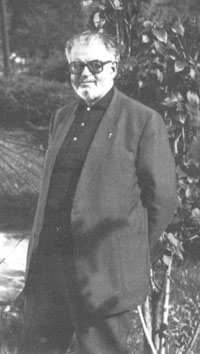

Révision et réédition: Menahem Macina
------- Tsofim Limoges-Liège
La prière synagogale. Ses origines, son développement et son état actuel, Kurt Hruby Droit d'auteur © 2016
This book was produced using Pressbooks.com, and PDF rendering was done by PrinceXML.
Contenu
La liturgie synagogale. Ses origines, son développement et son état actuel, par Kurt Hruby
A propos de cette réédition à usage public
Remarques techniques et éditoriales
Liminaire
Table des chapitres
1. Chapitre I. Aperçu sur les origines historiques de la liturgie synagogale et sur son développement
2. Chapitre II. Les sources de la Tradition liturgique
3. Chapitre III. La prière synagogale et ses principaux éléments. 1. La Teillat Shaharit
4. Chapitre III. La prière synagogale... (suite) 2. La Teillah
5. Chapitre III. La prière synagogale... (suite) 3. Le Tahanun
6. Chapitre III. La prière synagogale... (suite et in): 4. La Qeriat haTorah (Lecture de la Torah)
Annexe: Brève biographie du P. Kurt Hruby, par le P. Alexandre Abraham Winogradsky
Nota: Celles et ceux qui désirent participer à l’amélioration de cette réédition,sont cordialement invités à faire part de leurs corrections et suggestions via la zone“Commentaire”des pages de la version livre Web réalisé avec Pressbooks.com.Nous les remercions par avance de leur collaboration.
LA PRIÈRE SYNAGOGALE.SES ORIGINES,SON DÉVELOPPEMENT ET SON ÉTAT ACTUEL,KURT HRUBY

Session du Chatelard 15-22 juillet 1982. Session du Chatelard 15-22 juillet 1982. ————————– Saisie au clavier Saisie au clavier: Sr Maggy Kr: Sr Maggy Kraentzel, août-octobr aentzel, août-octobre 2014. e 2014. Mise Mise au au net net avec avec insertion insertion des des termes termes techniques techniques en en car caractèr actèreses hébr hébraïques, aïques,etet composition omposition du du document document:Menahem Menahem Macina, Macina, octobr octobre 2014 e 2014
C’est au professeur Fadiey Lovsky–qui m’a fait connaître l’oeuvre de K.Hruby il y a quelques années–que je dois la découverte de la brochure ici reproduite.
Il m’avait généreusement donné son unique exemplaire, que j’ai,hélas,trop longtemps laissé enfoui dans ma bibliothèque jusqu’à ce que je le redécouvre récemment,à l’occasion d’un travail de recherche comparée de liturgie juive et catholique.
La lecture approfondie que j’ai faite de cet ouvrage m’a convaincu de sa grande valeur scientiique et spirituelle. Considérant que c’est un grand dommage qu’il soit resté si longtemps inconnu des spécialistes(sauf exception),pour ne rien dire du grand public cultivé,j’ai cru utile de mettre en chantier une reproduction verbatim du texte,aux ins de difusion et de consultation libre sur Internet,et sous divers format (pdf., pub, etc.).
La saisie au clavier de ce texte,relativement technique, trufé de mots et d’expressions en hébreu et de translittérations en langue française,a constitué un déi considérable.
Toutefois,en relisant les pages déjà mises en ligne,j’ai pu constater de nombreuses fautes, coquilles, voire des omissions de mots ou de lettres, ainsi, bien entendu, que d’autres erreurs. Il faudra de nombreuses relectures pour éliminer toutes ces imperfections.C’est pourquoi j’invite celles et ceux qui ont les compétences voulues,à signaler à Tsoim,via l’interface de commentaires de Pressboooks,les fautes et les corrections suggérées.
Je rappelle qu’en bas de chaque page de cet ouvrage réédité ici,igure une zone intitulée“Commentaire”,dans laquelle chacun(e) pourra contribuer à l’amélioration de cette réédition. Je remercie par avance celles et ceux qui participeront à cette tâche utile.
Menahem Macina Octobre 2014
La présente réédition s’est voulue scrupuleusement idèle à l’original.Toutefois,je me suis permis de prendre quelques libertés avec les principes éditoriaux du P.Hruby,surtout en matière de translittération.
Par souci d’harmonisation,j’ai opté pour la mise en italiques de tous les termes étrangers translittérés en français. Il m’a paru opportun de modiier,çà et là,quelques transcriptions qui dérogent trop à l’usage actuel.
Sauf quelques exceptions,j’ai mis entre crochets carrés[] les corrections que j’ai cru devoir apporter à l’orthographe et surtout à la translittération de certains mots.
Pour l’information des internautes non versés dans les matières qui font l’objet de l’étude savante du P.Hruby, surtout en ce qui concerne la littérature rabbinique,j’ai équipé beaucoup de termes techniques d’hyperliens qui renvoient à une information,qui m’a paru iable,igurant en ligne.
J’invite les internautes compétents qui auront estimé erronés,ou peu heureux,certains de mes choix à poster leurs suggestions dans la zone “Commentaire” du chapitre concerné.
M. Macina
Le présent travail est fragmentaire.Conçu,il y a plus de vingt-cinq ans[soit en 1957!],comme un cours d’initiation à la liturgie synagogale,il n’a pas pu être continué au-delà d’une introduction générale et d’un aperçu partiel sur la prière du matin.
Si,malgré cela,nous le livrons tel qu’il se présente à la difusion,c’est que certains éléments que ce travail contient peuvent néanmoins apporter une information valable dans un domaine où les publications en langue française font toujours en grande partie défaut.
Nous ne pouvons que souhaiter que ce travail soit un jour continué et complété.
Paris, novembre 1981, K. H.
Liminaire
Sommaire Avant-propos Chapitre 1er:Aperçu historique sur les origines de la liturgie synagogale
TABLE DES CHAPITRES
d – Le Targum e – La prédication f – La Haftarah
a – Le culte de remplacement b – La structure des prières n’est pas modiiée c – La querelle avec les sectes d – Stabilisation des formules e – La révolte sous Bar-Kokhba et ses conséquences dans le domaine de la liturgie
a – Diférenciation des rites 7.L’origine des grands rites 8.Les grands groupes de rites 9.Les rites dépassent le cadre territorial
Notes du chapitre II
Chapitre III:La prière synagogale et ses principaux éléments
La disposition des prières dans le Siddûr – I. La Teillat Shaharit ou prière du matin
a – Le Qaddish b – Qeriat Shema c – Les prières qui suivent la Qeriat Shema – II. La Teillah Terminologie Le Tahanûn dans la liturgie synagogale Le Seder de Rav ‘Amram Gaon Éléments du schéma proposé par Rav ‘Amram Le Tahanûn chez Sa’adyah Gaon Cheminement vers la phase inale:le Tahanûn devient prière communautaire
– IV. La Qeriat ha-Torah (lecture de la Torah
reposition des rouleaux
(commémoration des défunts)
Notes du chapitre III
1. L’époque pré-exilique
Bien que divinement révélée, la religion juive ne contient pas seulement des éléments qui lui sont spéciiquement propres; l’inluence d’autres cultures, plus anciennes et plus développées, y est considérable. La Révélation s’est grefée sur tout un ensemble déjà providentiellement préparé.
C’est à la science biblique qu’il appartient de dégager tous les apports pré-israélites que contient le culte tel qu’il nous est décrit dans le Pentateuque à propos de l’organisation du Tabernacle du désert.
-------
Dans un souci de précision, il y aurait lieu de distinguer dès le début entre le culte sacriiciel et le culte non sacriiciel. Mais primitivement les deux domaines se confondaient sûrement et il n’y avait guère d’acte d’adoration publique sans sacriice. Il est certain par ailleurs que,dès l’époque la plus reculée,le sacriice était encadré de prières adaptées à la circonstance. Ces prières,répétées toujours à des occasions analogues,ont dû avoir très tôt une tendance naturelle à se iger, ne serait-ce que dans leur structure.
Cette forme archaïque et simple du culte s’est maintenue pendant très longtemps chez les Israélites.Nous n’avons qu’à ouvrir n’importe quel livre historique de la Bible pour nous rendre compte qu’elle était à peu près universellement pratiquée,probablement de la façon suivante:le sacriice est ofert en un haut lieu quelconque,il est encadré de prières assez courtes et suivi d’un repas sacriiciel.
À ce propos, il faut dire un mot sur le lieu de culte. Certes, nous savons que le Deutéronome est très strict quant à l’unicité du lieu de culte(chap.12).Le texte biblique répète à maintes reprises que les actes cultuels devront s’accomplir, après l’entrée des Israélites dans la Terre Promise, “au lieu que le Seigneur notre Dieu choisira parmi toutes vos tribus pour y mettre son Nom et en faire sa Demeure”.
Mais ces précisions sont, du point de vue de la chronologie biblique,assez tardives.Elles sanctionnent,d’une part,un fait déjà établi,et décrivent,d’autre part,un état considéré comme idéal,mais qui en fait ne fut jamais entièrement réalisé, tout au moins avant l’exil babylonien.
Après la conquête du pays de Canaan par les Israélites, sous
Josué, le Sanctuaire fut d’abord établi à Silo, mais on continua néanmoins, à sacriier un peu partout, sur les hauts lieux, et les juges et les prophètes de cette époque en font autant(cf.par exemple, Juges 17 ss.).
À l’époque de David,nous apprenons qu’il y a un sanctuaire à Nobé.Même après le transfert de l’Arche d’Alliance à Jérusalem(cf.I Chron.16)et le choix déinitif d’un lieu pour la construction du Temple(cf.I Rois 8), l’ancienne pratique s’avère tenace. De tout temps les prophètes durent élever la voix contre la pratique populaire de sacriier à la manière cananéenne,sur les hauts lieux,sans que cette coutume fût toujours idolâtrique dans le sens fort du terme.
Depuis la construction du Temple de Jérusalem,le culte en dehors du sanctuaire est cependant proscrit.Mais cela ne vaut encore,en règle générale,que pour le royaume de Juda.Dans le royaume d’Israël–le schisme remonte à la génération après Salomon qui, lui, avait construit le Temple – l’ancienne pratique des hauts lieux persiste; l’un des premiers actes du roi Jéroboam ayant précisément été l’établissement d’un sanctuaire “de concurrence” à Beth-El (cf. I Rois 13).
Avec le Temple,nous entrons dans une nouvelle phase d’évolution cultuelle.Nous y trouvons une liturgie bien réglée,un ordre dûment établi pour tout ce qui concerne la partie proprement sacriicielle,et tout un personnel cultuel: prêtres,lévites et serviteurs inférieurs,avec des attributions bien déterminée
Il est certain que l’organisation du service du Temple était également le résultat d’une évolution assez longue et, une fois
-------
de plus,les textes ne font qu’enregistrer la phase inale,le terme de cette évolution.Ainsi,certains auteurs n’ont voulu voir,dans la description du Tabernacle au désert,qu’une projection en arrière d’un idéal jamais atteint et conforme aux aspirations de certains milieux de l’entourage des grands prophètes d’Israël.Sans aller aussi loin,on peut cependant supposer que l’organisation cultuelle,à partir de certains éléments provenant du patrimoine révélé,était,elle aussi, soumise à la loi de l’évolution 1.
Les descriptions non bibliques de la liturgie du Temple nous sont fournies soit par Flavius Josèphe, qui était lui-même membre d’une famille sacerdotale et avait encore servi au Temple dans sa jeunesse,soit par la littérature rabbinique. Dans les deux cas,il s’agit de récits ayant pour objet le culte au Second Temple;c’est-à-dire que ces récits nous révèlent un état de choses où les cérémonies,pleinement évoluées, s’étaient déinitivement igées.Ces données ne permettent donc pas de tirer des conclusions valables pour une époque plus reculée.
Si nous supposons même qu’à certains moments de ferveur religieuse,le Temple de Jérusalem fut,tout au moins dans le royaume de Juda,le seul lieu de culte à proprement parler (cf.par exemple II Rois 18:le règne d’Ezéchias),tout le monde n’avait cependant pas la possibilité de s’y rendre,ne fût-ce qu’à l’occasion des plus grandes fêtes.D’autre part,il est assez peu vraisemblable qu’en dehors de Jérusalem on eût alors célébré les sabbats et jours de fête sans aucune réunion de caractère religieux.
Ce n’est pas pour rien que dans la terminologie biblique les fêtes sont appeléesקדש-(מקראיmiqra’ei qodesh),”jours de sainte assemblée”,et que leur caractère est si fortement souligné.Mais faute de documents et d’indices certains,tout ce que nous pouvons établir dans ce domaine pour l’époque pré-exilienne relève nécessairement de l’ordre des hypothèses.
2. L’exil babylonien
Comme pour tout l’ensemble de la théologie juive,l’exil babylonien représente aussi pour la vie liturgique un tournant décisif.Par la destruction du Temple en 586 av.J.-C., Nabuchodonosor avait privé le peuple juif de son centre cultuel national.Il est très probable–beaucoup d’auteurs le pensent–que,dans un souci très compréhensible de sauvegarder le patrimoine religieux, on ait alors commencé à se réunir d’une façon régulière, d’abord pour se réconforter en commun par la lecture des Saintes Écritures,et ensuite pour écouter les exhortations adressées,dans l’infortune nationale, par les chefs spirituels de la communauté.Un autre objectif de ces réunions était la confession en commun des grands principes de la foi d’Israël,principes qui seuls pouvaient les sauver d’une assimilation à un milieu culturellement beaucoup plus développé et qui les attirait par maints éléments.
Après le retour d’une partie des exilés en Palestine et la reconstruction du Temple, ces réunions de lecture,
-------
d’enseignement et de prière ne continuèrent pas seulement parmi ceux qui étaient restés en Babylonie; ceux-là aussi qui étaient revenus sur la terre des ancêtres ont dû les maintenir.
Des considérations d’ordre théologique ne sont certes pas étrangères à cette évolution.Les années d’exil ont introduit des changements dans les conceptions religieuses.L’efet premier et immédiat en avait été une prise de conscience de la valeur du patrimoine religieux d’Israël.En outre,l’horizon général s’était élargi par le contact forcé de tous les jours avec une civilisation d’un niveau assez élevé.D’autre part, tandis qu’avant l’exil la vie religieuse d’Israël avait eu caractère essentiellement collectif,la disparition,pendant de longues années,de l’ancien cadre communautaire et institutionnel avait poussé les âmes religieuses vers une pratique plus personnelle, plus intérieure.
L’ancienne conception de la valeur des sacriices et du culte du Temple,où le peuple assistait seulement à la périphérie et en spectateur, avait fait place à une autre attitude: désormais, on réclamera pour chacun la possibilité d’une participation plus active aux manifestations liturgiques et d’une association plus étroite aux fonctions sacrées.
recourir au témoignage de la littérature rabbinique qui, dans certains cas, nous fournit des éléments très anciens.
Les premières traces d’une liturgie quotidienne non strictement sacriicielle remontent au Temple même. D’après le traité Tamid de la Mishna(V.1),les prêtres de service auraient interrompu chaque jour l’action sacriicielle pour se recueillir dans la prière.Cette prière,selon la même source, comportait essentiellement des passages bibliques ayant trait aux principes de la religion d’Israël,tels que le Décalogue, le(שמעישראל Shema Yisrael),“Écoute,Israël”et d’autres. Ces passages étaient encadrés d’une introduction et d’une conclusion,exprimant l’une,les sentiments de gratitude envers Dieu pour le don de la Torah,l’autre,l’engagement d’observer toujours les commandements contenus en elle.
Ceux qui habitaient Jérusalem ou qui y étaient de passage à l’occasion des jours de fête,avaient toujours l’occasion de s’associer à la liturgie du Temple,soit par des gestes d’adoration,soit en alternant avec les lévites certaines parties des Psaumes.C’est à l’époque post-exilienne que les Psaumes sont devenus la prière liturgique par excellence, rôle qu’ils ont depuis lors conservé dans le culte juif et,par sa médiation, dans la prière chrétienne.
Les Lesמעמדות (מעמדותMa’amadot): (Ma’amadot): Ain d’associer tout le peuple au culte central de Jérusalem, on étendit à tout le monde la répartition en vingt-quatre classes des prêtres et des lévites(cf.I Chron.24)qui à tour de rôle desservait le sanctuaire.C’est l’origine desמעמדות (Ma‘amadot –terme dérivé du mot hébreu‘(עמד amod)qui
-------
signiie“se tenir debout”,en l’occurrence du côté de l’autel, au moment des sacriices–délégations qui représentaient à tour de rôle les diférentes circonscriptions du pays au moment des sacriices.Lorsqu’ils étaient de service,ces représentants du peuple se réunissaient quatre fois par jour pour la prière en commun. Et pendant qu’une telle délégation séjournait à Jérusalem, les membres de la même circonscription qui ne s’étaient pas rendus à la capitale se réunissaient aux mêmes heures dans leurs lieux d’origine.
En ce qui concerne la structure de cette liturgie des
Ma’amadot,nous possédons quelques renseignements grâce à la Mishna,au traité Ta’anit(IV),consacré aux jours de jeûne public.Les prières qui y sont mentionnées sont presque analogues à celles dont nous avons parlé à propos des réunions des prêtres au sanctuaire.Il est à peu près certain que la bénédiction des prêtres n’y a pas manqué non plus,tout au moins là où habitaient des Aaronides.
Par le Talmud de Babylone(Ta’anit,22b),qui commente notre Mishna, nous savons aussi qu’aux périodes de calamités, les diférentes circonscriptions avaient recours à leurs Ma‘amadot respectives à Jérusalem,se recommandant à un titre particulier à leurs prières au Sanctuaire.Ainsi la supplication est devenue partie intégrante de la liturgie des Ma‘amadot.
Jeûnes publics Jeûnes publics:
À ce propos il faut remarquer que les jours de jeûne public et les réunions de prières organisées en dehors du Sanctuaire en raison d’une calamité publique sont une institution très ancienne,qui remonte vraisemblablement au temps avant l’exil.Aussi est-il bien possible qu’on ait repris plus tard,à l’occasion des Ma‘amadot, des prières d’une telle provenance.
Les livres d’Esdras et de Daniel ont conservé des textes nous permettant de nous faire une idée du genre et de l’inspiration des prières en usage à cette époque (cf. Néh. 9, 5 ss.). Si nous nous donnons la peine d’en dégager les éléments essentiels, nous en constatons la persistance dans l’oice synagogal de nos jours.
4. Coexistence entre le culte sacriiciel et le culte en dehors du Sanctuaire
Le principe des réunions de prières en dehors du Sanctuaire central une fois acquis,la voie était désormais libre pour leur organisation déinitive.
Nous avons vu,assez sommairement,combien étaient étroits, au début, les rapports entre les deux formes liturgiques,sacriicielle et extra-sacriicielle.Pendant des siècles,jusqu’à la destruction déinitive du Temple par Titus, en 70 après J.-C.,les deux formes ont coexisté et se sont mutuellement complétées.
Qu’on puisse voir,dans le développement que le culte synagogal a connu en Palestine aussi bien que dans les autres pays où habitaient les Juifs, une manifestation d’une tendance permanente à intérioriser et à spiritualiser le culte d’adoration rendu à Dieu,c’est incontestable.Cette tendance s’insère organiquement dans tout un courant spirituel qui caractérise
-------
l’ensemble de cette période de l’histoire d’Israël.Mais il faut bien préciser qu’il n’y a jamais eu d’opposition entre les deux formes cultuelles.La synagogue–le mot,dans les débuts,ne signiie pas autre chose que“communauté réunie”–n’était qu’un complément du culte au Temple et n’eut jamais la prétention de s’y substituer.Les actes les plus importants de la vie religieuse sont toujours restés étroitement liés au Sanctuaire de Jérusalem,qui seul pouvait leur donner une valeur quasi sacramentelle.
5. La liturgie synagogale au cours de la période qui précède immédiatement l’ère chrétienne
Force nous est de passer sous silence les diférentes phases d’évolution de la liturgie en dehors du Sanctuaire à partir des Ma‘amadot;nous passons donc tout de suite aux aspects qu’elle prend à partir de la grande renaissance nationale qui suit les guerres des Maccabées, et qui seront substantiellement les mêmes au début de l’ère chrétienne.
Tandis que tout ce qui a été dit jusqu’à présent relevait, au moins dans ses conclusions,du genre conjectural,les renseignements dont nous disposons se précisent et deviennent plus abondants à mesure que nous approchons de l’ère chrétienne. Étant donné que c’est l’époque des Tannaïtes 2,maîtres de l’enseignement religieux,dont les sentences ont été recueillies plus tard dans la Mishna,nous pouvons considérer comme suisamment fondés les détails que nous fournit ce document.Le témoignage de la Mishna, dans le domaine qui nous intéresse, est d’ailleurs corroboré par celui d’autres auteurs, juifs et païens, qui nous communiquent également des renseignements précieux sur la situation cultuelle dans le judaïsme à cette époque. Les sources les plus importantes,en dehors de la littérature juive traditionnelle, sont Philon d’Alexandrie et l’historien juif Flavius Josèphe.
6. La synagogue devient institutionnelle
À l’époque dont nous parlons,ce que nous appellerons désormais“la synagogue”est devenue une institution de la vie juive.Chaque communauté de quelque importance en Palestine et dans les pays de la Diaspora,dispose maintenant d’un édiice où les idèles se réunissent pour la prière en commun.
7. Éléments de tradition
La tradition juive attribue l’organisation de la liturgie synagogale aux“Hommes de la Grande Assemblée”,c’està-dire au Grand Sanhédrin(Berakhot,33a).Les origines
aux Mishnayot-sentences igurant dans la Mishna-,les Baraïtot ne peuvent pas servir de base à des décisions légales.On appelle Tannaïtes les maîtres qui ont enseigné à partir de l’époque qui suit Hillel jusqu’à R. Yehudah Ha-Nassi, le rédacteur de la Mishna,donc environ de 10 à 220 après J.-C.Les Tannaïtes ne constituent cependant pas le premier chaînon de la Tradition orale dont la Mishna a conservé les noms.Ils sont précédés par plusieurs générations de docteurs appelés(זוגות Zûgot) ou "paires" parce qu’ils igurent toujours par "couples"; la série des Zûgot commence par Siméon le Juste et Antigonos de Sokho et init par Hillel et Shammaï.
-------
historiques de cette autorité législative suprême sont assez mal connues.Flavius Josèphe la mentionne pour la première fois à l’époque d’Antiochus le Grand,qui a régné entre 223 et 187 avant J.-C., Si l’on admet pour une telle intervention une date aux environs de 160 avant J.-C.,elle se situerait au moment de la réorganisation totale de la vie religieuse,entreprise à la suite de la guerre des Maccabées.
De quelle nature était cette intervention du Sanhédrin, à supposer que la tradition se fasse l’interprète d’un fait historique?Il est assez probable qu’on a tout réglementé,et ainsi sanctionné le résultat de toute une évolution dans le domaine liturgique. Les prescriptions du Sanhédrin portaient certes beaucoup plus sur la structure d’ensemble et l’inspiration que sur la formulation concrète des prières, laquelle,comme nous aurons l’occasion de le constater est restée très libre pendant longtemps.
Cette mention,par la tradition,du Sanhédrin,en relation avec les institutions liturgiques,a d’ailleurs une raison plus profonde. Le judaïsme – et après lui le christianisme – connaît deux sources de sa foi:la Torah écrite,c’est-à-dire le Pentateuque,ou(תורהשבכתב torah shebiketav)et la torah orale,ou(תורהשבעלפה torah shebe’al peh),qui sera plus tard codiiée et interprétée dans les principaux écrits de la littérature rabbinique.Cette Torah shebe’al peh,la tradition la fait également remonter à la Révélation du Sinaï,et elle est considérée à tous points de vue comme équivalente à la Torah écrite,dont elle est le complément organique et indispensable.
Or,pour être authentique,la transmission de la Torah orale doit être ininterrompue, de chaînon en chaînon, depuis le moment de sa révélation.Aussi la Mishna donne-t-elle, au traité Avot 3, l’énumération des chaînons de cette transmission. Nous citons:
“Moïse reçut la Torah – c’est évidemment la
Torah shebe’al peh qui est visée ici – au Sinaï et la transmit à Josué;Josué la transmit aux Anciens(ce sont les Anciens du peuple,réunis par Moïse; cf. Ex. 4, 29; Jos. 23,2);les Anciens la transmirent aux prophètes,et les prophètes aux hommes de la Grande Assemblée (c’est-àdire au Sanhédrin).”
Rattachée ainsi à la tradition d’Israël,la liturgie s’y insère au point que déjà Philon et Josèphe la considèrent comme une institution extrêmement ancienne et vénérable. Une tradition que le Talmud(Berakhot,26b)cite au nom de R.Yossé ben Haninah,maître palestinien de l’époque des Amoraïm 4 et qui a vécu dans la seconde moitié du 3e siècle après J.-C.,fait remonter l’institution des trois prières journalières aux trois Patriarches, rattachant chaque prière à un verset biblique dont le texte fait l’exégèse:
-------
au lieu où il s’était tenu devant le Seigneur”:institution de la prière du matin( תפלת שחריתTeillat shaharit).
pour méditer…”;institution de la prière de l’aprèsmidi,( תפלת מנחהTeillat Minhah).
la nuit”:institution de la prière du soir,תפלתמעריב (Teillat Ma’ariv).
Bien qu’il ne s’agisse là, de toute évidence, que d’une légende, elle montre cependant combien on était soucieux de faire remonter les principales institutions liturgiques au temps des Patriarches et donc à la première phase de l’histoire d’Israël.
Autant qu’il est possible de reconstituer,à partir des indications de la Mishna, les principaux éléments de la liturgie en face de deux traditions qui,à des époques diférentes,ont fusionné diféremment.
D’une part il y avait,au Temple de Jérusalem,deux sacriices quotidiens, l’un ofert le matin, l’autre peu de temps avant le coucher du soleil.Ce dernier a été avancé,à un moment donné, au début de l’après-midi (cf. Pessahim, V).
D’autre part,de l’observation des diférentes positions du soleil au cours de la journée:lever,midi et coucher, résultaient trois autres heures de prière,déjà mentionnées au Ps. 55, 18:‘( ערב בקר וצהרים erev, boqer wetsohorayim), “soir, matin et midi”(n’oublions pas que dans la conception juive le jour commence toujours la veille au soir).Cette coutume de prier trois fois par jour apparaît aussi dans Daniel 6,11, comme celle de l’homme pieux.
Du temps des Ma‘amadot,les deux traditions fusionnaient de la manière suivante:le matin,il y avait coïncidence,du point de vue de l’heure,entre la prière du matinתפלתשחר ou( שחריתTeillat shahar ou Shaharit) et le sacriice du matin. La prière de midi donne la(תפלתמוסף Teillat Mûssaf), appelée ainsi en fonction du(קרבןמוסף Qorban Mûssaf)ou “sacriice supplémentaire”,ofert à ce moment en certaines occasions.À une époque postérieure,cette prière était réservée aux seuls jours comportant un tel sacriice(sabbats, fêtes,etc.).Dans l’après-midi,le second sacriice,קרבןבין (הערבים Qorban bein ha’aravim)coïncidait primitivement avec la prière dite au moment du coucher du soleil.Lorsque ce sacriice fut ensuite avancé au début de l’après-midi,cette modiication donna naissance à deux prières distinctes,l’une
-------
appelée(תפלתמנחה Teillat Minhah),“prière du sacriice de l’après-midi”,l’autre appelée(תפלתנעילה Teillat Ne’ilah), nom dérivé deהשערים נעילת (ne’ilat hashe’arim), la fermeture des portes du Sanctuaire; cette prière fut alors dite au coucher du soleil.Plus tard,elle reçut le nom deתפלת ערביתou( מעריבTeillat ‘aravit ou Ma’ariv), “prière du soir”.
Nous insistons sur les détails de ce développement,car les termes que nous y rencontrons,ainsi que la disposition déinitive qui en résultera sont encore identiquement les mêmes dans la liturgie synagogale de nos jours,laquelle connaît trois prières quotidiennes,à savoir:Shaharit,Minhah et Ma’ariv et,en plus,le Mûssaf,ou prière supplémentaire pour les jours de fête et d’autres jours qui y sont liturgiquement plus ou moins assimilés.Par contre,la Teillat ne’ilah n’a été conservée que le jour de Kippour,comme cinquième et dernière prière.
b. Les principaux éléments de la prièr Les principaux éléments de la prière
À l’époque que nous étudions maintenant,la prière se compose de deux éléments essentiels:(קריאתשמע Qeriat Shema) ou récitation de l’”Écoute, Israël”, et la Teilah, Le mot (תפילה Teilah)signiie“prière”tout court,et c’est le nom donné à cet ensemble de bénédictions qu’on appellera plus tard aussi(שמונהעשרה Shemoneh‘essreh)selon le nombre d’eulogies que contient la Teilah dans sa forme longue, quotidienne, ou bien encore‘( עמידה Amidah) parce qu’il faut la réciter debout (du verbe‘ עמד amod: se tenir debout).
Le Shema est dit matin et soir, la Teilah le matin et l’aprèsmidi. Plus tard – et c’est encore l’usage actuel – la Teilah sera également récitée le soir.
Le Shema était suivi de deux autres passages bibliques
(Deut.9,13-21 et Nomb.15,37-41),dont le second, concernant les(ציצית Tsitsit)ou franges rituelles,était primitivement omis le soir.Actuellement ces trois passages sont récités intégralement matin et soir.
Dans la prière du matin,le Shema était précédé d’une bénédiction et suivi d’une troisième.L’une des bénédictions qui précédaient le Shema faisait fonction respectivement de prière du matin ou du soir,tandis que l’autre exprimait les sentiments de reconnaissance pour le don divin de la Torah, source unique de la vie religieuse et spirituelle d’Israël.
La Teilah,comme son nom l’indique,était la prière par excellence; on ignore les détails de sa structure pour la période qui nous intéresse.Ce que nous savons,c’est qu’elle était divisée en trois parties:un début,de structure hymnique, une partie médiane contenant les eulogies comme telles,et une inale composée de prières d’actions de grâces.Nous reviendrons sur les éléments primitifs de ces prières tels qu’ils sont décrits par la Mishna,lorsque nous étudierons leur structure actuelle.
Les jours de fête et les néoménies–nous l’avons déjà dit– comportaient aussi la prière de Mûssaf, dont la partie principale est aussi une Teilah.Il semble bien que le Mûssaf n’était dit,pendant assez longtemps,que dans les chefs-lieux des circonscriptions qui envoyaient des Ma’amadot à Jérusalem.
En ce qui concerne l’utilisation des Psaumes dans la liturgie
-------
synagogale de cette période,la Mishna ne parle que duהלל Hallel qui,dix-huit fois par an,était récité à la suite de la prière du matin.
Dans la mesure où il ne s’agissait pas purement et simplement d’une récitation collective de passages bibliques, le mot à mot des prières n’était pas alors ixé.L’usage voulait d’ailleurs qu’un( פסוקpassûq), c’est-à-dire un verset biblique, ne fût utilisé dans la liturgie que sous forme de paraphrase.
La plupart des prières a sans doute commencé par la formule habituelle:( ברוך אתה ייBaroukh atah Adonaï), “Sois béni,Seigneur”,formulation qui est restée classique au cours des âges.Les(ברכות Berakhot),les“bénédictions”,–il a dû s’agir surtout de bénédictions plus ou moins longues– se terminaient par une eulogie inale,qui résumait le thème central.
À l’époque du second Temple,la prière du soir ne semble pas avoir été récitée habituellement en commun.En règle générale,les prières étaient alors courtes,concises.Le Yom Kippour constituait à cet égard une exception,la liturgie y occupait pratiquement toute la journée,ce qui est resté la règle jusqu’à nos jours.
c) La lectur La lecture de la T e de la Tororah ah
La lecture de la Torah et des livres prophétiques est sans aucun doute l’un des éléments les plus anciens de la liturgie juive,et il semble bien–nous l’avons souligné en son temps –qu’elle était même la base des réunions de prière en dehors du Sanctuaire de Jérusalem.
Les sources traditionnelles manifestent à l’égard de cette lecture les mêmes préoccupations que celles mentionnées déjà lorsqu’il a été question de la prière synagogale comme telle. Ainsi lisons-nous que Moïse aurait institué la lecture de la Torah pour les sabbats et les jours de fête,Esdras pour les lundis et jeudis. À propos de ces deux jours, il faut noter que, dans la liturgie juive,leur place correspond à peu près à ce que nous avons coutume d’appeler les“féries privilégiées”. Dans l’antiquité,les lundis et jeudis étaient jours de marché. À cette époque siégeaient aussi les tribunaux locaux dans les petites villes,à cause de l’aluence des gens de la campagne. Le Talmud(Baba Qama,82a)mentionne les réunions de prière et les lectures publiques de la Torah qui avaient alors lieu dans les synagogues.Il semble bien que ces réunions hebdomadaires constituent une étape sur la voie qui aboutit aux réunions quotidiennes dans les synagogues.
D’autres sources de la tradition juive font remonter les lectures hebdomadaires de la Torah aux“Prophètes et Anciens”qui,nous l’avons fait remarquer,constituent un chaînon de la tradition qui précède immédiatement les “Hommes de la Grande Assemblée”.
La Mishna déjà mentionne des lectures pour certains jours.
Pour les sabbats,lundis et jeudis elle suppose l’existence d’un (סדר Seder),d’un cycle déterminé de péricopes,sans qu’on puisse se prononcer sur la nature de ce cycle.Le Talmud de Babylone(Megillah 31a)précise qu’en Palestine on lit tout le Pentateuque en trois ans(cycle triennal),tandis qu’en Babylonie cette lecture se fait en un an(cycle annuel).En
-------
tout cas,les sources traditionnelles,par la multiplicité d’indications,fort diférentes,qu’elles nous fournissent en matière de lecture de la Torah, font ressortir que cette lecture a également connu certaines phases de développement avant de se iger déinitivement.
Les indications les plus anciennes au sujet d’une lecture publique de la Torah se trouvent dans Deut. 31, 10, à propos de la fête des Tabernacles de l’année jubilaire.Dans Neh.,8, on décrit la lecture organisée par Esdras, lecture qui servira de modèle à celle des réunions cultuelles.
Très ancienne est aussi la lecture pour le Yom Kippour. Son origine doit être recherchée au Temple où, d’après Yoma VII, 1 et Sota VII,7, le Grand Prêtre lisait un passage de la Torah après l’accomplissement de la partie sacriicielle du culte.
Au début,on a dû choisir quelques péricopes isolées pour les lectures encore relativement rares.Après l’introduction des lectures régulières de l’année,se it également sentir le besoin de déterminer la longueur exacte des péricopes.C’est à ce moment qu’a dû être introduit le principe selon lequel la lecture hebdomadaire de la Torah doit être continue,à la diférence des livres prophétiques où le système de sélection des passages est resté de règle.
Cette indication est très importante pour la chronologie du
Canon des Livres Saints. Elle nous permet en efet de conclure que l’institution d’une lecture régulière de la Torah dans le culte synagogal remonte à une époque où le Canon des Livres Saints n’était pas encore clos, ce qui nous fait remonter au 3e siècle av. J.-C.
Toujours d’après la Mishna, les péricopes étaient primitivement assez courtes. Un changement ne s’est produit qu’après l’introduction,assez tardive,d’une lecture continue. Quant à celle-ci,elle peut d’ailleurs très bien être antérieure à la répartition de la Torah en“Parashot“,ou péricopes de longueur déterminée,en ce sens qu’on poursuivait la lecture de sabbat en sabbat, en la reprenant simplement où l’on s’était arrêté la semaine précédente.Les péricopes choisies pour les jours de fête restent évidemment en dehors du cycle institué en fonction de la lecture hebdomadaire.
d) Le T d) Le Targ argûm ûm
La lecture synagogale de l’Écriture se faisait en tout premier lieu dans un but d’instruction.Or ce but ne peut être atteint que lorsque les idèles comprennent ce qu’on lit.Par cette considération élémentaire, nous abordons deux autres phénomènes étroitement liés à la vie liturgique,à savoir:le Targûm – transposition de la lecture en langue vulgaire – et la prédication.
Nous avons déjà noté que pendant le séjour en Babylonie l’hébreu avait cessé d’être la langue véhiculaire du peuple juif.On se servait de plus en plus de l’araméen qui,dans ses multiples branches, était nettement prédominant dans les pays du Croissant fertile.
Pour ce qui est de la prière,elle se faisait de préférence en hébreu,mais on admettait aussi d’autres langues,surtout le grec.Nous allons encore constater ce phénomène lorsque nous parlerons de la liturgie dans les pays de la Diaspora.
-------
En ce qui concerne la lecture de l’Écriture Sainte,elle était conçue selon le modèle de la lecture publique organisée par Esdras.Voici ce que nous lisons à ce propos au livre de Néhémie, 8, 1 ss.:
“Le septième mois étant arrivé,les enfants d’Israël étant établis dans leurs villes,tout le peuple s’assembla comme un seul homme sur la place qui est devant la Porte de l’Eau.Et ils dirent à Esdras le scribe d’apporter le livre de la Loi de Moïse,que le Seigneur a prescrite à Israël.Et le prêtre Esdras apporta la Loi devant l’assemblée,les hommes,les femmes et tous ceux qui étaient assez intelligents pour l’entendre:c’était le premier jour du septième mois. Il lut dans le Livre depuis le matin jusqu’au milieu du jour,sur la place qui est devant la Porte de l’Eau en présence des hommes et des femmes et de tous ceux qui étaient assez intelligents pour l’entendre;tout le monde prêtait l’oreille à la lecture du Livre de la Loi. Esdras le scribe se tenait sur une estrade de bois,dressée pour la circonstance et,à côté de lui se tenaient,à sa droite Matityah,Shema,‘Anayah,Uriyah,Hillikiyat et Ma‘aseyah;et à sa gauche Pedayah,Mishaël,Malkiyah, Hashum, Hashbadanah, Zeharyah, et Meshullam. Esdras ouvrit le Livre à la vue de tout le monde et,lorsqu’il l’eut ouvert tout le peuple se tint debout.Esdras bénit le Seigneur,le grand Dieu,et tout le peuple répondit en levant les mains: “Amen, amen”. Et ils s’inclinèrent et se prosternèrent devant le Seigneur,le visage contre terre. Et Yeshua‘,Bani,Sherevyah,Yamin,‘Aquv,Shabtaï, Hodiyah,Ma‘aseyah,Qlita,‘Azaryah,Yosavad,Hanan, Pelayah et les lévites instruisaient le peuple de la Loi,et chacun restait à sa place. Ils lisaient distinctement dans le Livre, dans la Loi de Dieu, et ils en donnaient le sens, et on comprenait ce qui était lu”.
La Torah était donc lue,lors de la grande assemblée convoquée par Esdras,“distinctement avec explication du sens”.C’est dire que la lecture du texte hébraïque étant devenue inintelligible pour la grande masse du peuple,on y ajoutait le Targûm,ou transposition en langue vulgaire,en l’occurrence la paraphrase araméenne du texte sacré. (Dans les communautés de langue grecque, la paraphrase sera plus tard faite en cette langue).
Il semble que l’usage de faire accompagner du Targûm la lecture de l’Écriture Sainte est aussi ancien que cette lecture elle-même.Au lecteur s’associe le(מתורגמן Meturgeman)ou traducteur, dont la fonction, par la suite, deviendra institutionnelle.
La littérature traditionnelle (Tossefta de Meguillah, IV, 41)5nous a également conservé les règles pour la transposition du texte biblique en langue vulgaire.Ce qui était requis était une transposition libre,improvisée,excluant le mot à mot et respectueuse du génie de la langue.Nous touchons ici du doigt l’origine de la littérature targumique,si éclairante
-------
à beaucoup d’égards pour la connaissance des sources de la tradition d’Israël.
Parmi les Targumim araméens qui nous sont parvenus, celui appelé communément Targûm de Jonathan 6 a conservé beaucoup d’éléments très anciens.Plus tard seulement,vers le milieu du 3ème siècle après J.-C.,lorsque la trop grande liberté que prenaient certains Meturgemanim dans l’exercice de leur fonction était devenue un danger sérieux pour l’intégrité du patrimoine scripturaire,on rédigera un Targûm oiciel, appelé communément Targûm d’Onqelos, rédigé déinitivement dans les académies de Babylonie.
Il ne nous appartient pas d’étudier ici la question de savoir si les origines de la paraphrase grecque de la Bible (les Septante) doivent également être cherchées sur le plan liturgique. Dans l’hypothèse airmative,elle serait un très bon exemple d’un Targûm moyen, c’est-à-dire d’une paraphrase qui tient le juste milieu entre une trop grande idélité au texte hébraïque et une liberté qui trahit l’inspiration de l’original.
e) La pr La prédication édication
La transposition du texte biblique dans une langue plus accessible ne pouvait cependant à elle seule,satisfaire à l’exigence de rendre intelligible aux idèles le contenu de la littérature liturgique.Il fallait encore y ajouter une interprétation autorisée.
Par cette interprétation–dont parle également le texte de
Néhémie précédemment cité – nous entrons dans le domaine de la prédication synagogale. Les deux termes les plus anciens qui,dans la littérature traditionnelle,désignent cette activité sont(להבין lehavin),“faire comprendre”et(למד lamad), “enseigner”.À cette dernière expression correspond le mot grec didaskein qui,dans le Nouveau Testament,désigne toujours l’enseignement donné dans les synagogues.
Le verbe(למד lamad)et son équivalent(הגיד hagged)sont utilisés dans la terminologie ancienne pour désigner le rattachement d’une interprétation à un texte biblique;du verbe(הגיד hagged)est dérivé le mot(הגדה haggadah),qui désigne à son tour l’élément le plus important de la prédication.
À côté de(הגיד hagged),on trouve aussi employé le verbe
(דרש darash),qui signiie“scruter“.L’Écriture Sainte l’utilise pour l’activité d’Esdras(Esdr.7,10).De ce verbe est dérivé le nom de(מדרש midrash),lequel désigne une interprétation plus élaborée d’un passage du Pentateuque.C’est le Midrash qui est la vraie source de toutes les branches de la littérature rabbinique, codiiée plus tard dans les écrits les plus divers.
La prédication la plus ancienne se rattache immédiatement à la péricope de l’Écriture dont on faisait la lecture.C’est la(הבנהhavanah),l’”instruction”que l’on rencontre chez Esdras.Parfois le point de départ de l’instruction était aussi laהפטרה (haftarah), lecture d’un passage d’un livre prophétique,qui suivait normalement la lecture de la Torah. Nous y reviendrons dans un instant.
-------
Il est diicile d’établir avec quelque certitude pendant combien de temps la prédication est ainsi restée en dépendance étroite du texte même de l’Écriture.On peut cependant supposer légitimement que les premiers essais d’une disposition plus libre de la matière remontent à l’époque où furent ixées les péricopes hebdomadaires.Ces péricopes étant devenues plus longues,une sélection s’imposait tout naturellement.La prédication restera cependant toujours rattachée à l’Écriture,mais seulement en ce sens qu’elle y prendra son point de départ,sous forme d’un verset de la péricope dont on faisait la lecture,le jour en question,le thème étant ensuite développé librement.
La prédication qui,jusqu’alors s’insérait dans la partie de la liturgie consacrée à la lecture des Livres Saints,devint ainsi de plus en plus indépendante de ce contexte.En même temps se produisit un autre phénomène: la prédication quitte également le terrain de la pure interprétation des textes et devient édiiante. Assez souvent, elle se détache alors entièrement de la lecture liturgique de l’Écriture dans un souci de ne pas prolonger outre mesure l’oice,et se place dans l’après-midi où elle a lieu même en dehors de l’édiice cultuel ain de permettre au prédicateur de toucher le plus grand nombre possible d’auditeurs.
Qui étaient les prédicateurs?En principe,toute fonction dans le culte synagogal pouvait être accomplie par quiconque avait les aptitudes requises.Il en était de même de la prédication.
À une époque plus tardive celle-ci sera réservée aux
“scribes”,hommes particulièrement versés dans l’étude de la Loi divine. Cela pour répondre à la nécessité d’un maniement habile et rapide des textes à mettre en rapport les uns avec les autres–souvent d’une manière très spirituelle-,ce qui supposait une grande expérience dans ce domaine.Cela est si vrai que,dans certaines communautés,les sabbats furent appelés du nom des prédicateurs.Ainsi disait-on,par exemple: le sabbat de Rabbi tel ou tel.
On comprend fort bien que,parmi les prédicateurs,les haggadistes–qui pratiquaient le genre édiiant–aient joui de la faveur des idèles plus que les halakhistes,lesquels se bornaient à donner une interprétation purement casuistique des textes.Très souvent il y eut d’ailleurs compénétration,à l’intérieur d’un même sermon, des deux genres.
Pendant la prédication, l’orateur était assis; sur ce point, le témoignage de la Mishna est une fois de plus corroboré par le Nouveau Testament.Dans les endroits où les prédications se faisaient avec un concours considérable de idèles–c’était le cas surtout en Babylonie,où le goût de l’étude et de l’instruction était plus développé-,le prédicateur,surtout lorsqu’il s’agissait d’un maître célèbre,ne s’adressait pas directement à l’auditoire;il se servait d’un intermédiaire, dénommé lui aussi Turgeman, car il était l’interprète, auprès de l’auditoire, des idées du maître, lequel ne les lui transmettait le plus souvent que sous forme d’expressions-clefs. Le travail du Turgeman consistait précisément à présenter ensuite ces idées en bonne et due forme.
f)f) La H La Haftar aftarah ah
-------
La lecture du Pentateuque était suivie, nous l’avons déjà fait remarquer,de celle d’un passage tiré d’un livre prophétique. Cette lecture porte le nom de(הפטרה Haftarah),du verbe (הפטיר haftir),qui signiie“inir”,conclure,en l’occurrence, servir de conclusion à la lecture de la Torah.
Aucun indice certain ne permet de tirer une conclusion valable quant à l’époque où cette lecture des livres prophétiques a été introduite dans la liturgie synagogale. Nous avons déjà noté à ce propos que le principe de sélection libre pratiqué dans ce domaine suggère que cette lecture remonte à une époque où le canon des livres prophétiques n’avait pas encore reçu sa forme déinitive.
Pour les Haftarot(pluriel de haftarah),il n’était jamais question d’une lecture continue.On peut supposer que le choix et le mode de lecture des Haftarot se développa parallèlement à la lecture de la Torah.D’après la Mishna,les péricopes prophétiques pour telle ou telle parasha ont souvent changé. Quant au principe de sélection des haftarot, le Talmud (Meguillah,29)pose une seule condition:(דדמילה dideme leh),c’est-à-dire qu’il doit y avoir une parenté,une ainité quelconque entre la Parasha et la Haftarah.Ce rapport s’interprétait cependant dans un sens extrêmement large, et là où les textes eux-mêmes ne le faisaient pas ressortir avec une clarté suisante,on forçait la note par une exégèse souvent assez ingénieuse.
9. Les sectes
Ce qui a été dit jusqu’à présent ne se rapportait,en règle générale,qu’à la liturgie synagogale pratiquée en Palestine même et,pour certains détails en Babylonie.Ce tour d’horizon est cependant très incomplet,car nous avons dû laisser entièrement de côté un élément de la plus haute importance pour l’ensemble de l’évolution liturgique extracultuelle,à savoir le monde des sectes.Ce dernier nous et connu par le Document de Damas,découvert en 1897 dans la Guéniza du vieux Caire et,plus particulièrement par les manuscrits de la Mer Morte, découverts en 1947 et depuis lors systématiquement étudiés.
Grâce à ces témoignages littéraires de haute antiquité, nous connaissons maintenant un grand nombre de détails concernant la vie de la communauté établie à Qumrân. Nous savons aussi que dans cette vie communautaire et religieuse authentique,les aspects liturgiques ne faisaient pas défaut: parmi les manuscrits actuellement en notre possession se trouve en efet un rouleau contenant des hymnes d’actions de grâces.
-------
imprégnés de culture grecque et dont la langue véhiculaire était la koïnè, le grec alexandrin.
Là, comme en Palestine et en Babylonie, toute communauté juive organisée avait sa ou ses synagogues. L’attrait de l’ambiance avec sa civilisation rainée–il ne s’agit ici que de l’aspect intellectuel et culturel–était très grand: et si certains hommes instruits y poursuivaient de tout temps l’étude des livres sacrés dans l’original hébreu,il n’est pas moins certain que la presque totalité des membres de ces communautés,non seulement parlaient habituellement grec, mais ne comprenait plus l’hébreu ni l’araméen.Ainsi toute la vie liturgique,y compris souvent la lecture de la Torah,se déroulait en grec.
Au témoignage de Philon,la lecture de la Torah et son interprétation occupaient dans les communautés d’obédience alexandrine la plus grande part de l’oice synagogal.Mais il faut noter que Philon a une forte tendance à adapter les descriptions qu’il fait des coutumes juives au goût “philosophique”de ses lecteurs non juifs,et qu’il force peutêtre quelque peu la note en insistant outre mesure sur l’aspect didactique.
Très célèbre était dans l’antiquité la grande Proseukhè d’Alexandrie, décrite par Philon et par la littérature rabbinique (Tos. Sukkah, IV, 6); les idèles y occupaient leurs places selon les corporations professionnelles auxquelles ils étaient ailiés,et les dimensions de l’édiice étaient si considérables qu’un fonctionnaire placé sur une tribune au milieu de la nef,devait annoncer par un signal de drapeau le moment où les idèles, au cours de l’oice, devaient répondre à haute voix aux prières de l’oiciant.
À propos du milieu alexandrin,il faut encore mentionner une institution unique en son genre et tout à fait exceptionnelle dans le Judaïsme,qui n’a pu voir le jour que grâce à une conjoncture politique très particulière.Au moment de la persécution religieuse déclenchée en Palestine par Antiochus IV Épiphane, s’était réfugié à Alexandrie le jeune Onias,ils du dernier grand prêtre légitime Onias III,déposé en 174 avant J.-C.et remplacé alors par Jason,favorable au parti hellénique.Très bien accueilli par le roi Philomètor, Onias conçut l’idée de construire un temple en Égypte même, à la place du Sanctuaire de Jérusalem, profané par les Syriens. Le roi mit à sa disposition un terrain à Léontopolis,dans la région d’Héliopolis,et c’est là qu’Onias se mit à réaliser son projet(vers 153).Le temple qui s’y éleva bientôt était conçu sur le modèle de celui de Jérusalem,non pas tant du point de vue architectural qu’en ce qui concerne l’organisation du culte.Les fonctions sacrées étaient accomplies par des prêtres et des lévites qui s’étaient également enfuis de la terre d’Israël, devenue inhospitalière.
Ce temple fut un temps un centre important du Judaïsme égyptien.On s’y rendait les jours de fête,on y ofrait des sacriices, etc.; toutefois, jamais il ne fut considéré, même par ses adeptes les plus fervents, comme un concurrent de celui de Jérusalem. Il ne présentait donc pas un caractère schismatique comme celui élevé par les Samaritains sur le mont Garizim.
Les troubles politiques permirent également que ce temple
-------
singulier échappât à l’anathème des milieux sacerdotaux de la Ville Sainte.Lorsque le culte y fut rétabli,le temple d’Onias avait déjà acquis un certain droit à l’existence, et on continuait à le tolérer plus ou moins.
Dans la littérature rabbinique subsistent,de-ci de-là,des traces de discussions entre rabbins sur la validité du culte, et plus particulièrement des sacriices oferts dans le temple de Léontopolis,dont la seule existence constituait en soi une violation lagrante et permanente de la Loi mosaïque sur l’unicité absolue du lieu de culte.En 73 après J.-C.,ce temple fut fermé par les autorités romaines.
11. Après la destruction du Temple
Le tableau que nous avons essayé de brosser, assez sommairement, des premières phases de la liturgie synagogale et de son développement à partir du moment où elle devint institutionnelle a besoin d’être modiié à certains égards lorsqu’il s’agit de l’époque qui suit le grand désastre national de 70 après J.-C.
On ne peut certes exagérer la portée de ce triste événement sur le plan général de l’histoire juive.Il faut néanmoins se garder de lui attribuer une inluence trop grande sur la vie liturgique.
Une telle airmation paraît à première vue étrange,étant donné qu’avec la destruction–cette fois déinitive–du Sanctuaire de Jérusalem,le culte sacriiciel cessa,fait qui eut de graves conséquences pour l’ensemble de la vie religieuse et sociale d’Israël.
Mais c’est alors que l’on saisit toute l’importance acquise déjà bien avant ce moment par le culte synagogal: solidement ancré dans la tradition, il pouvait assurer la continuité de la vie liturgique et éviter de la sorte un bouleversement encore plus grand sur le plan des institutions oicielles et communautaires du Judaïsme.
a) Le “C a) Le “Culte de r ulte de remplacement” emplacement”
Le culte synagogal 7 a souvent été considéré comme un
“culte de remplacement”,un pis-aller dont il fallait,qu’on le veuille ou non, se contenter faute de mieux.
Il faut bien reconnaître cependant que la synagogue n’a pas“remplacé”le Temple.Elle s’est simplement adaptée aux nouvelles circonstances, et cette adaptation était relativement facile grâce au cadre solide dont elle disposait déjà.L’idée théologique que la prière remplace le sacriice n’apparaît que plus tard.
Par ailleurs,il est vrai que le courant prophétique,ayant dans une large mesure spiritualisé l’ancienne conception, trop matérielle,du culte sacriiciel,avait pendant des siècles préparé le terrain pour une telle adaptation. Le moment venu, celle-ci se it d’autant plus rapidement que les éléments spirituels existaient déjà.
b) La structur b) La structure des prièr e des prières n’est pas modiiée es n’est pas modiiée
La nouvelle situation n’entraîna aucun changement
-------
substantiel quant à la structure de la prière synagogale.Les passages qui,de par la cessation du culte sacriiciel,avaient perdu leur actualité immédiate,ne furent pas supprimés ou éliminés,mais plutôt réinterprétés,soit par des ajouts,soit par de légères modiications à l’intérieur du texte même,et ainsi adaptés au nouvel état de choses.
Il est certain que cette tendance s’appuyait sur l’attente générale d’une rapide reconstruction du Sanctuaire: pourquoi modiier une chose dont le défaut d’actualité n’est qu’éphémère?Lorsque l’éphémère,au cours des années, s’airma durable, le pli était déjà pris.
c) La quer c) La querelle avec des sectes elle avec des sectes
D’autres éléments se sont ajoutés à cette époque à la prière synagogale,à la suite de la diférenciation de plus en plus marquée avec le Christianisme naissant et de la querelle avec les groupes gnostiques.Nous en reparlerons lorsque nous étudierons les prières introduites alors.
d)d) Stabilisation des f Stabilisation des formules ormules
La tendance de plus en plus marquée de rassembler et de ixer les éléments de la Tradition juive,tendance qui s’est manifestée particulièrement dans les grandes académies,eut également des répercussions sur la liturgie.L’incertitude, politique aussi bien que doctrinale,était grande,d’où la nécessité de s’en tenir en tous domaines à des traditions authentiques.
C’est alors que fut ixé, par exemple, l’ordre des bénédictions à l’intérieur de la Teilah(cf.Ber.28b),travail attribué par le Talmud à R.Shim’on Ha-Peqoli,dont le nom insinue que,dans la vie quotidienne,il exerçait l’humble profession de travailleur de lin ou de coton.C’est à cette époque également qu’on adopta un nombre de dix-huit bénédictions pour la Teillah.
Certaines modalités concernant la récitation de cette
“Prière”par excellence furent alors arrêtées,comme par exemple sa récitation à voix basse par chacun des idèles en particulier,avant sa reprise à haute voix par l’oiciant.C’est alors encore que la prière du soir fut,elle aussi,dotée d’une Teilah et acquit ainsi sa place dans l’oice de la synagogue.
e)e) La La révolte évolte sous sous Bar-K Bar-Kohba ohba etet ses ses conséquences onséquences dans dans lele domaine domaine liturg liturgique ique
Beaucoup plus graves pour l’ensemble des institutions juives furent les répercussions de la révolte qui eut lieu sous Bar-Kokhba,déinitivement étoufée par Rome en 135 après J.-C.Le sud de la Palestine fut alors complètement ravagé et les survivants du désastre se réfugièrent dans le nord,en Galilée, région qui devient désormais le centre de la vie juive.
Toute la Tradition juive,et donc aussi la tradition liturgique,connut comme une césure à la suite de ces événements et beaucoup de témoins de cette tradition ont péri.Il fallait maintenant tout reconstituer,travail pénible et laborieux dont les moindres détails furent âprement discutés par les maîtres.
12. L’époque des Amoraïm
-------
Avec l’époque des Amoraïm,c’est-à-dire la deuxième génération des maîtres du Talmud,les indications liturgiques deviennent plus abondantes.Mais les sources,codiiées des siècles plus tard, ne distinguent évidemment pas toujours avec exactitude lorsqu’il s’agit d’attribuer telle sentence à tel maître, ce qui rend caduçune fois de plus,tout essai qui viserait à établir une chronologie rigoureuse de l’évolution sur le plan liturgique.
Plus encore que les derniers Tannaïtes,les Amoraïm étaient intéressés à créer des formes cultuelles stables.C’est pourquoi ils mettent particulièrement en relief le caractère communautaire de la prière et le fait qu’elle doit à tout prix se faire à la synagogue,où l’on pouvait contrôler plus aisément ses diférents éléments.Parallèlement à cette tendance,nous rencontrons aussi pour la première fois des prescriptions relatives à la construction des synagogues:on veut désormais faire de ces édiices de vrais sanctuaires, tandis que jusqu’alors elles avaient été de simples lieux de réunion.
a)a) Dif Diférérenciation des rites enciation des rites
C’est encore à cette époque que s’accentuent de plus en plus les diférences entre les usages de Palestine et de Babylonie. C’est le point de départ des rites qui,désormais,vont se diférencier de plus en plus.
b)b) Aperçu perçu génér énéralal sur sur l’état l’état de de lala liturg liturgieie à l’époque l’époque des des Amoraïm
Il n’est peut-être pas sans intérêt de se demander comment la liturgie synagogale se présentait concrètement à l’époque dont nous parlons actuellement.
Pour le résumer le plus brièvement possible,on peut dire que la structure des prières était alors déjà à peu près la même que maintenant.Quant à la formulation concrète,elle était toutefois encore assez libre.À maintes reprises le Talmud parle de discussions entre les maîtres à propos de telle ou telle expression.Ainsi discute-t-on toujours le détail des eulogies de la Teilah;de même le mot à mot des bénédictions qui précèdent et suivent le Shema–et qui,nous l’avons vu,sont très anciennes – est loin d’être ixé.
Pour ce qui est plus particulièrement de la Teilah, presque toutes les modiications qu’on lui a fait subir à l’occasion des fêtes sont encore l’objet de discussions.Mais ces discussions, dont le Talmud est l’écho idèle,nous conirment que toutes les formes que revêt encore aujourd’hui la Teilah en telle ou telle occasion, existaient déjà à cette époque.
L’élément le plus important à noter est précisément que cette époque fut encore créatrice sur le plan liturgique. L’inspiration personnelle avait encore une large place,même à l’intérieur des prières de base.
1. Le Talmud
Pour tout renseignement concernant la liturgie synagogale en général,aussi bien que pour tous les détails se rapportant à telle ou telle formule de prière, nous avons, jusqu’à présent, eu recours presque exclusivement au Talmud.Or le Talmud est,en grande partie,la codiication d’une tradition orale dont certains éléments sont très anciens. Dans l’état actuel des études,il est cependant diicile d’établir une chronologie à l’intérieur de ce domaine capital.Nous avons déjà souligné cette diiculté à plusieurs reprises.
Si toute la(תורהשבעךפה Torah shebe‘al peh)est restée pendant longtemps vraiment une tradition orale,elle l’était en vertu de sa déinition même,et on considérait comme absolument indue toute tentative d’en ixer certaines parties par écrit.
Ce sont les circonstances extérieures qui ont amené un changement sur ce plan;à un moment donné,tout le précieux patrimoine de la tradition orale était en danger de se perdre; il s’agissait de le sauver à tout prix, but qui ne pouvait être atteint que par une codiication.
Ce que nous venons de dire de l’ensemble de la tradition orale,s’applique tout naturellement aussi aux éléments liturgiques: lors de la codiication de la Torah shebe‘al peh, on a inséré dans les recueils créés alors les diférentes indications se rapportant à la prière et aux oices de la synagogue.Ce sont précisément ces indications qui, jusqu’à présent, étaient notre source principale d’information.
Cependant nulle part,dans les recueils dont nous parlons, nous ne trouvons le mot à mot d’une prière liturgique un peu développée.Nous avons d’ailleurs constamment rappelé la grande liberté qui régnait encore,même à l’époque talmudique proprement dite,sur le plan de la formulation précise des prières.Lorsque le Talmud–ce qui arrive de temps en temps–blâme telle ou telle erreur commise dans le domaine de la liturgie,il n’est jamais question d’un texte dont on se serait écarté: preuve supplémentaire de ce que de tels textes n’existaient alors pas encore.
Pendant très longtemps on considéra comme norme absolue la maxime que nous a conservée la Tossefta de Shabbat (XIV, 4) et qui s’énonce comme suit: “Quiconque rédige une
-------
prière par écrit commet un péché aussi grand que s’il brûlait la Torah”.
C’est donc encore le souci de sauvegarder le patrimoine traditionnel qui a donné la première impulsion à la formulation déinitive des prières synagogales.Un autre facteur très important fut,sans aucun doute,le fait que tout en obéissant à une inspiration identique dans tous les pays où habitaient des Juifs,le culte synagogal avait tendance à se diversiier de plus en plus selon les régions où il était pratiqué; très souvent le contact entre les communautés était alors très réduit à cause de la situation politique.
Nous aurons maintenant à parler à la fois de deux phénomènes inextricablement liés,à savoir des recueils de prières d’une part et, d’autre part, de la question des rites. C’est d’ailleurs la diversité souvent très grande des usages locaux qui a,en partie,rendu nécessaire la codiication des textes de prières.Déjà le Talmud parle de certaines diférences locales dans l’ordre des oices de la synagogue,mais sans y attacher trop d’importance.Cela se comprend très bien lorsqu’on se rappelle qu’il était alors considéré comme suisant d’observer une certaine conformité dans les parties essentielles de l’oice: lecture de la Torah,récitation du Shema Yisrael et de la Teilah.Tout le reste était plus ou moins laissé à l’inspiration des diférentes synagogues et communautés.
De cette manière il n’est pas étonnant de voir que peu à peu chaque synagogue ait développé son(מנהג minhag),son rite propre. Lors de la codiication des prières, il était évidemment trop tard pour essayer de donner au culte synagogal une certaine uniformité, car les diférents usages remontaient déjà à plusieurs siècles. Avec le temps, les diférentes communautés avaient de plus en plus attaché du prix à leurs particularités rituelles.Cette attitude est en soi légitime,car elle est le fruit d’une évolution et organique.Toutefois,ce particularisme allait parfois si loin qu’il s’avérait plus fort que les normes, phénomène exprimé dans une sentence qui nous a été conservée par l’un des plus anciens documents liturgiques (Massekhet Soferim,XIV,18)et qui s’énonce comme suit: ( מנהג מבטל הלכהminhag mevatel halakha), “le rite (local) a le pas sur la prescription légale”.
Le respect du minhag est toujours resté très grand dans le
Judaïsme.Après des siècles,on a pu constater,par exemple, grâce à des particularités rituelles qui se sont conservées,de quelle région d’Allemagne était primitivement venu en Pologne tel ou tel groupe ayant fui à l’époque des Croisades. La même observation a pu être faite à propos des communautés espagnoles, dispersées après 1492 dans presque tous les pays du Bassin de la Méditerranée.
2. La Massekhet Soferim
Pendant toute l’époque talmudique,donc jusque vers 600 après J.-C.,il ne semble pas qu’il y ait eu des recueils de prières dont on aurait pu se servir lors des oices.
Le document qui ouvre la série des écrits dont nous allons parler maintenant est la Massekhet Soferim 1,rédigée au VIe
-------
siècle.C’est l’un des“petits traités”qui n’ont pas été insérés dans le Talmud et qui ne jouissent donc pas de la même autorité,ce qui ne les empêche pas d’être des témoins importants de la tradition.
La Massekhet Soferim traite ex professo de la lecture synagogale du Pentateuque.On commence par y donner les règles qu’il faut observer lorsqu’on écrit un rouleau destiné à la lecture cultuelle;ensuite on traite longuement de l’ordre des péricopes,pour citer,vers la in,les prières qui entourent la lecture.
À ce propos, il y a lieu de faire remarquer que les premiers documents qui contiennent des textes de prières sont encore plus des“rubriques”que des recueils de prières à proprement parler.Plus tard,les livres de prières comporteront toujours les indications pratiques nécessaires pour la récitation, mais le “rubricisme”comme tel sera le domaine préféré de certains auteurs, aussi au cours des siècles postérieurs.
Les indications que donne la Massekhet Soferim se rapportent presque exclusivement aux usages palestiniens. Par ailleurs,le Judaïsme babylonien,ancien,puissant,et riche en académies et en docteurs de la Loi,s’était suisamment éloigné des usages palestiniens pour qu’il fût nécessaire de codiier à part ses us et coutumes propres relatifs à la partie centrale du culte synagogal,qui est précisément la lecture de la Torah. Ce travail fut efectué à peu près à la même époque que la rédaction de la Massekhet Soferim par le Gaon Yehudaï.
3. Les Meah Berakhot de Natronaï Gaon
Le plus ancien recueil de“rubriques”qui soit connu est celui rédigé,à la demande d’une communauté espagnole,par le Gaon 2 Natronaï b.Hilaï,chef de l’académie talmudique de Sûra en Babylonie.La date de cette rédaction se place vers 860.Dans ses déductions halakhiques 3,le Gaon se base sur une sentence que le Talmud(Menahot,44b)met dans la bouche de R.Meïr et d’après laquelle tout homme serait obligé de réciter cent bénédictions par jour.C’est pourquoi Natronaï donne à son recueil le nom de Meah Berakhot,“cent bénédictions. Le même schéma sera suivi pendant longtemps par d’autres rédacteurs de recueils semblables.
Rav ‘A Rav ‘Amr mram Gaon am Gaon
Beaucoup plus riche en détails est l’oeuvre liturgique du successeur de Natronaï,le Gaon‘Amram b.Shashna.Son recueil,qui porte le titre de Seder Rav‘Amram Gaon,a été écrit vers 875,également à la demande d’une communauté espagnole.C’est encore en premier un livre de rubriques,
-------
mais les textes des prières y igurent également, tout au moins dans les éditions dont nous disposons. Pendant tout le Moyen Âge, le Seder Rav ‘Amram Gaon, fut l’oeuvre liturgique la plus répandue,et il est cité par presque toutes les autorités qui ont traité de questions cultuelles.À cause de son utilisation fréquente,le rituel d’’Amram a été enrichi,au cours des siècles,d’un grand nombre d’éléments,à tel point qu’il est impossible de dire quelle en était la forme primitive 4.
4. Sa’adyah
Le premier livre de prières à proprement parler,est le Kitab gam’a al-salawat we al-tasabih,le“Recueil des prières et des chants de louange”–c’est la traduction du titre arabe–du Gaon Sa’adyah b.Joseph,écrit dans la première moitié du Xe siècle.Le Siddûr de Sa’adyah est une oeuvre où,à côté des textes et des rubriques,igurent aussi des notes théologiques et des notes historiques se rapportant à l’origine des prières. Les notes explicatives sont rédigées en arabe.
Tandis que les recueils de Natronaï et[celui]d’Amram relèvent de la tradition babylonienne,le livre de Sa’adyah, bien qu’il semble n’avoir été rédigé qu’après la nomination de son auteur à la tête de l’académie de Sûra,relète les usages égyptiens,basés sur la tradition palestinienne.Car Sa’adyah est né à Fayyûm en Égypte,d’où son surnom habituel“Al- Fayyûmi” (5).
À partir de Sa’adyah,il semble avoir été d’usage que tout docteur universellement reconnu comme autorité talmudique éditât un recueil de prières annoté et commenté. Rien de tous ces recueils n’a été conservé et nous ne les connaissons que par les mentions qu’en font d’autres auteurs.
5. Maïmonide
D’une très grande importance pour la tradition liturgique est le traité consacré à la prière dans le Mishneh Torah de R. Mosheh b.Maïmon, appelé Rambam ou Maïmonide. Le Mishneh Torah,ou Yad hazaqah est pour le Judaïsme ce que la Somme de saint Thomas d’Aquin est pour l’Église catholique.
Dans l’annexe de la “Somme”, Maïmonide donne un Seder teilot kol ha-shanah,un recueil de prières pour toute l’année 5.L’autorité universellement reconnue du célèbre docteur s’étendait aussi au domaine de la liturgie,et dans beaucoup de pays on suivait idèlement ses indications.Chez les Juifs du Yémen,le traité de Maïmonide sur la prière est resté, jusqu’à présent, l’unique norme en matière cultuelle.
-------
Rashi et ses disciples
Les recueils de prières dont nous avons parlé jusqu’à présent nous renseignent plus particulièrement sur l’état de la tradition liturgique dans les pays du Proche-Orient et de la Méditerranée.En Europe Centrale,l’évolution était à peu près analogue:là encore,ce sont les grandes autorités talmudiques dont les décisions ont fait loi dans le domaine de la liturgie.
De R.Shelomoh b.Yitshaq,de Troyes,communément appelé Rashi,nous savons qu’il a composé un Siddûr dans lequel il a décrit et commenté les usages du culte synagogal, sans toutefois donner des textes de prières 6.
Un recueil complet venu jusqu’à nous est dû à la plume d’un disciple de Rashi,R.Simhah b.Shemuel de Vitry;cet écrit est connu sous le nom de Mahzor Vitry 7.À côté des règles liturgiques,tirées très souvent littéralement du Seder Rav‘Amram Gaon, l’auteur donne les textes des prières, suivis d’un commentaire, les péricopes pour les jours de fête avec la paraphrase araméenne,ainsi que beaucoup de détails qui ont trait à la liturgie et à sa célébration.
6. Notes sur la terminologie liturgique
Nous avons déjà rencontré au cours de notre étude, un certain nombre d’expressions qui,dans les diférents documents auxquels nous avons eu recours, désignent la prière liturgique.
Dans la version grecque de la Bible,dite version des LXX
[Septante],le verbe leiturgein rend le verbe hébreuעבודה ‘(Avodah),qui désigne le culte au Temple de Jérusalem.La partie qui, dans la prière de Mûssaf de Yom Kippûr, se rapporte au service accompli en ce jour par le Grand Prêtre,porte toujours le nom de(סדרהעבודה Seder ha’avodah).Dans la littérature rabbinique, ‘Avodah désigne plus tard l’ensemble de la liturgie et donc aussi,et même plus particulièrement,la liturgie synagogale.
Quant à la prière,nous savons que sa forme principale est la(ברכה Berakhah),la“bénédiction”dont nous avons déjà étudié la structure habituelle.À côté de la Berakhah,nous trouvons la(תפלה Teilah),nom qui est dérivé du verbe (התפלל hitpallel),qui signiie“invoquer Dieu comme juge”, tandis que berakhah provient de(ברך berekh),qui signiie littéralement“tomber à genoux”et,dans un sens plus large “louer Dieu”.(תפלה Teilah),en araméen(צלותא Tselota), devient le nom générique des dix-huit bénédictions,de la (שמנהעשרה Shemoneh‘Essreh),mais le terme comme tel est employé dans la littérature talmudique pour toute prière. Lorsque,dans Berakhot 33a il est question de l’intervention dans le domaine liturgique des“Hommes de la Grande
-------
Assemblée”,le texte désigne la liturgie par le terme collectif de( ברכות ותפלותBerakhot ûteilot).
Le motסדר Seder signiie l’ordre stable,ixe.Nous avons rencontré le terme lorsque nous avons parlé du cycle de la lecture liturgique du Pentateuque;la péricope sabbatique porte le nom de(סדר Seder),en araméen(סדרא Sidra),ou ( פרשהParashah). Plus tard( סדרSeder) et( סדורSiddûr) sont devenus les termes couramment employés pour désigner les recueils de prières.À part cela,nous avons déjà mentionné le terme de(מחזור Mahzor).Dérivé de(חזר hazar),“revenir périodiquement”,le mot Mahzor désigne en premier lieu le cycle annuel du calendrier,et également le grand cycle astronomique de dix-neuf ans,le(מחזורלבנה Mahzor Levanah [Cycle lunaire (note de Menahem Macina)]).
Plus tard,on donnera le nom de Mahzor aux recueils de prières pour le cycle de fêtes de l’année liturgique, tandis que le Siddûr ne contient plus que les prières de tous les jours et les parties invariables des oices des fêtes.
Traditionnellement,certaines parties de l’oice synagogal et de la liturgie domestique ne sont insérées,tout au moins d’une façon habituelle,ni dans le Siddûr,ni dans le Mahzor. Tel est par exemple le cas des(סליחות Selihot),ou prières de pénitence,qu’on dit,dans le cadre d’un oice particulier, à partir du 1er Elûl,mois qui précède celui de Tishri,à l’intérieur duquel se placent les fêtes de Rosh hashanah et Yom Kippûr. Les Selihot sont dites également pendant lesעשרת ימי ‘( התשובה Asseret yemei hateshuvah), ou dix jours de pénitence, qui se situent entre ces deux fêtes.On en dit encore à Rosh hashanah et Yom Kippûr même: à l’occasion de ces deux fêtes, les Selihot sont insérées dans les rituels du jour. En dehors des cas que nous venons de mentionner,il existe également des Selihot pour tous les jours de jeûne de l’année,qu’ils soient inscrits au calendrier ou qu’il s’agisse d’un jeûne limité à une région donnée 8.
Il existe un nombre inini de Selihot composées à diférentes époques.Aussi les divergences dans l’ordre et le choix des Selihot sont-elles très grandes selon les rites et,à l’intérieur des rites,au niveau local.Toute communauté importante avait pratiquement son(סדרסליחות Seder Selihot)à elle. En conséquence,il existe également un très grand nombre de recueils de Selihot.Le livre le plus répandu dans les communautés d’Allemagne et d’obédience allemande sur le plan cultuel:l’Alsace avec la plus grande partie de la France, Hollande,Suisse,etc.,était le(סדרסליחותלכלהשנה Seder Selihot lekol hashanah) de Rödelheim 9.
Un autre recueil est destiné à la célébration duתשעהבאב
(Tish’ah beAv), le neuvième jour du mois d’Av, commémoraison des deux destructions du Temple,sous Nabuchodonosor et Titus. Il contient le livre des Lamentations de Jérémie dont on fait alors lecture dans l’oice synagogal, ainsi que les( קינותqinnot) ou complaintes
-------
récitées à la même occasion.Ce recueil est intituléסדר ( הקינות לתשעה באבSeder haqinnot le Tish‘ah beAv).
Il existe aussi un recueil à part pour la fête de Pûrim, commémoraison de la délivrance des Juifs habitant l’empire perse du temps de la reine Esther.Ce petit rituel contient le livre d’Esther, lu alors la veille au soir et le jour même dans le cadre de l’oice,et un certain nombre de poésies religieuses insérées dans les prières du jour.
Le plus connu des rituels en dehors du Siddûr est laהגדה
(שלפסח Haggadah shel Pessah),destinée à la célébration familiale du repas pascal. Très souvent, les éditions traditionnelles de la Haggadah contiennent aussi un abrégé des prescriptions rituelles pour la Pâque.
Les cérémonies qui entourent le mort, la toilette funèbre et l’enterrement, sont consignées dans un petit livre qui porte le titre de(מעבריבוק Ma’avar Yabboq),“passage du Yabboq”, leuve de Transjordanie qui, en l’occurrence, a quelque peu la signiication du Styx de l’Antiquité gréco-romaine.
À partir du XVIe siècle se sont multipliés,sous l’inluence des milieux cabbalistiques,les divers(תיקונים Tiqqûnim), recueils de prières et de lectures pour les occasions les plus diverses et destinées essentiellement à la prière personnelle. Les plus connus parmi ces recueils,et qui continuent d’être employés dans certains milieux,sont le(תיקוןחצות Tiqqûn Hatsot), qui contient des prières attribuées au grand cabbaliste de Safed,Isaac Luria–que des âmes ferventes ont coutume de dire chaque jour à minuit,en souvenir de la destruction du Temple et de l’exil de la( שכינהShekhinah), cette présence mystérieuse de Dieu dans son Sanctuaire,personniiée par la Tradition, ainsi que leתיקון ליל שבועות וליל הושענה רבה (Tiqqûn leil Shavû’ot weleil Hosh‘ana Rabbah)contenant des passages de la Bible et du Zohar (qui est le document principal de la littérature cabbalistique).Ce Tiqqûn est destiné à la nuit de la Pentecôte et à celle du dernier jour de Sûkkot, auxquelles la tradition ésotérique attache une importance toute particulière.
7. L’origine des grands rites
Nous avons déjà souligné les divers facteurs auxquels est attribuable la diversiication de plus en plus accentuée des formes liturgiques dans les diférents pays habités par des Juifs. Le plus souvent,ces diférences ne portaient cependant que sur des détails relativement peu importants.
Mais comment se fait-il que la codiication déinitive des prières n’ait pas mis in à cette diversité et que,bien au contraire, les divisions et subdivisions en groupes rituels aient proliféré de plus en plus au cours des siècles?
La réponse à cette question doit être cherchée dans un autre élément de la prière synagogale auquel nous allons consacrer un chapitre particulier,à savoir le(פיוט Piyyût),la poésie religieuse.
Par le fait même d’avoir été codiiée, la prière synagogale – c’est-à-dire les parties dorénavant stables des oices-,s’était déinitivement igée.À partir de ce moment,le mot à mot des textes liturgiques était quasiment canonisé.Mais alors,
-------
la prière synagogale nous fournit une preuve éclatante de sa vitalité.Pendant des siècles elle continue d’inspirer des générations de(פיטנים Paytanim)ou“poètes religieux”,qui ne cesseront de l’enrichir et de l’embellir de leurs créations. Et c’est précisément le Piyyût qui sera,en in de compte, l’élément décisif de la diversité des rites.
Il nous reste maintenant à voir quels sont les plus importants des( מנהגיםMinhagim), ou groupes rituels.
Le point de départ Le point de départ
Ni le rite palestinien,ni le rite babylonien ne se sont conservés à l’état primitif. Dans le domaine de la liturgie s’est d’ailleurs produit le même phénomène que l’on peut observer pour l’ensemble des institutions du Judaïsme:la Babylonie, centre juif bien organisé et jouissant d’une longue période de relative tranquillité,l’emporta en tous points sur la Palestine, pauvre et continuellement secouée par des cataclysmes de toutes sortes.
Quand et comment les diférents usages liturgiques ont-ils pris pied en Europe,c’est-à-dire ans les communautés non orientales?Cette question est aussi diicile à résoudre que celle de la date exacte de l’installation des premiers Juifs dans ces pays.
Mais il ne faut peut-être pas remonter aussi loin dans l’histoire.Nous venons de voir,en efet,que l’adoption déinitive de tel ou tel rite était essentiellement l’oeuvre de quelques maîtres célèbres.Ce phénomène devait se répéter des centaines d’années plus tard,vers le milieu du XVIIIe siècle,lorsque les Hassidim 10,pour des raisons mystiques adoptèrent un rite avec lequel ils n’avaient aucune attache territoriale.
8. Les grands groupes de rites
En essayant de schématiser la question assez complexe des rites,nous pouvons dire que la répartition par pays des diférentes observances – sans tenir des multiples ramiications et usages locaux – est à peu près la suivante.
I. Rites avec inluence pr I. Rites avec inluence prépondér épondérante de la tr ante de la tradition palestinienne adition palestinienne
1.Le Le Minhag Minhag Ashkénaz shkénaz ou rite rite allemand allemand,qui se divise en deux grands groupes, à savoir: a)le Minhag ashkénaz qatan,observé en Allemagne même, et b)le Minhag ashkénaz gadol,pratiqué dans les pays situés au-delà de l’Elbe.
Très proche de ce Minhag était le vieux rite français, tel que nous le connaissons par le Mahzor Vitry.Par l’expulsion des Juifs de France,au XIVe siècle,ce rite s’est éteint;il ne s’est conservé que dans trois communautés italiennes, à savoir Asti, Fossano et Moncalvo, où des groupes d’exilés français se sont ixés à l’époque.
2.Le Minhag Minhag italiani italiani ou rite rite italien italien,connu aussi sous le nom de Minhag benei Romi est peut-être,parmi les rites
-------
synagogaux,celui qui est resté le plus proche des anciens usages palestiniens.Il est pratiqué en Italie et dans plusieurs communautés de Turquie.
3. En dépendance directe du rite italien est le Minhag Minhag ereretz etz yawwân yawwân,ou rite grec.Il y a quelques siècles,il était encore pratiqué non seulement en Grèce même,mais aussi dans la plupart des communautés des pays des Balkans.Peu à peu,il fut cependant supplanté soit par le rite allemand,soit par le rite espagnol et, avant la dernière Guerre, il n’y avait plus que quelques synagogues de l’île de Corfou où l’on continuait de l’observer.
II. II. Les Les usag usageses babyloniens babyloniens sont sont à lala base base du du Minhag Séfarad, ou rite espagnol.
Nous avons déjà fait remarquer que l’inluence des académies babyloniennes était très grande dans les communautés espagnoles.Les premiers recueils liturgiques à proprement parler,ceux de Natronaï et de‘Amram Gaon n’étaient en somme que les réponses données par les chefs des grandes écoles de Babylonie aux demandes de renseignements qui leur avaient été adressées par des communautés d’Espagne.
Étant donné la prépondérance de l’inluence babylonienne sur les communautés orientales, dont le rite était, en ses lignes maîtresses,identique aux observances espagnoles de même origine;étant donné aussi que les docteurs assumèrent,en grande partie,après le déclin des académies babyloniennes, l’hégémonie spirituelle exercée jusqu’alors par celles-ci, l’expression Minhag Sefarad prit un sens très large. Pratiquement,on y comprend les rites de tout le Judaïsme oriental, malgré les particularités parfois fortement accentuées entre pays.
Après l’exode forcé des Juifs d’Espagne, en 1492, une partie importante des rescapés s’installa d’abord en Portugal,pour rayonner ensuite dans diférents pays d’Europe:Hollande, Angleterre,certaines villes allemandes comme Hambourg, etc.Les Juifs autochtones appelaient les nouveaux arrivés “Portugais”, et ce nom s’est désormais attaché à leur rite.
En grand nombre,les Juifs d’Espagne se tournèrent aussi vers les pays sous domination turque,et bientôt des noyaux de Sefaradim étaient répandus tout autour de la Méditerranée. Grâce à leur culture supérieure et à leur forte cohésion,ces minorités sont arrivées,peu à peu,à imposer leurs usages rituels aux communautés des pays qui les ont accueillies.Ce processus d’”assimilation”a souvent pris plusieurs siècles;à l’heure actuelle,on peut dire que le Minhag Sefarad est,à quelques exceptions près,le rite de toutes les communautés “portugaises”et orientales.Cela est vrai,même pour un groupe aussi éloigné que les Yéménites–lesquels,des siècles durant, ont vécu en marge du reste de leurs coreligionnaires, mais qui sont néanmoins restés idèles aux prescriptions liturgiques de Maïmonide.
S’il est possible de parler de cette façon d’un Minhag Sefarad dans un sens très large,il faut cependant reconnaître que,la simple structure de ce rite une fois dépassée,les diférences entre les observances locales sont souvent bien plus
-------
accentuées que dans les deux grandes divisions du rite allemand.
En dehors des groupes de minhagim,dont nous venons de parler,il y en a d’autres,qui relèvent en même temps du rite palestinien et du rite babylonien. Tel est par exemple le cas du rite provençal dont certains vestiges se sont conservés,malgré les tendances de nivellement du Consistoire de France,en Avignon et à Montpellier.Les liturgistes connaissent ce rite sous le nom de Minhag Carpentras; la ville de Carpentras ayant été autrefois le centre du Judaïsme de toute la région.
9. Les rites dépassent le cadre territorial
Nés dans des sections territoriales déterminées,d’où ils tirent leur nom,ces rites–les exemples cités nous le montrent– ont souvent exercé leur inluence jusque dans des régions lointaines,en vertu du principe qui veut que quelqu’un qui est né dans la sphère d’inluence d’un rite donné,doit continuer à s’y conformer même après avoir quitté ce milieu.
Cela s’est répété tout au long de l’histoire juive.Déjà les
Actes des Apôtres (6, 9) mentionnent à propos de la prédication d’Étienne,l’existence à Jérusalem de synagogues servant de lieu de réunion à des Juifs originaires d’une même région: Cyrénéens,Alexandrins,gens de Cilicie,etc.Du temps des Croisades,les Juifs allemands,chassés de leurs foyers et accueillis en Pologne et en Lituanie, y ont tout naturellement transféré leurs usages liturgiques.Ce fait,en l’occurrence, se comprend encore mieux,par l’absence,dans ces pays,de communautés autochtones auxquelles les immigrants auraient pu se conformer.
Le même phénomène se produit plus tard à propos des Juifs d’Espagne qui,nous l’avons vu,inissent par imposer leurs usages cultuels aux communautés qui les ont accueillis.Au XIXe siècle nous observons la même chose en Amérique: chaque immigrant juif y vient avec son rite à lui et,dans les nouveaux centres qui se forment,les idèles se groupent autour de la synagogue de leur Minhag.
Plus récemment encore,la même question s’est posée en
Israël.À cause du caractère religieux du pays,on s’est demandé s’il n’était pas indiqué que tous les Juifs qui s’y installent pratiquassent le même rite,le Minhag Eretz Yisrael. Mais lequel est-ce?Car si ce nom recouvre bien une réalité historique,il ne correspond plus à rien de concret dans les circonstances actuelles.
En vertu d’une décision halakhique de l’ancien Grand
Rabbin de Palestine, Rav Kook,tout immigrant doit continuer à observer le minhag de son pays d’origine,idélité qui doit aller jusqu’au maintien de la prononciation traditionnelle de l’hébreu, laquelle, comme on sait, est parfois fort diférente de celle de l’hébreu moderne,basée,avec quelques modiications,sur celle des Sefaradim.En revanche, ceux qui sont nés dans le pays doivent suivre ce qu’on est convenu d’appeler le Minhag Eretz Ysrael,c’est-à-dire le rite pratiqué par les communautés non hassidiques établies dans le pays depuis plusieurs siècles. Ce minhag n’est rien d’autre que le Minhag Ashkenaz dans sa forme polonaise, avec élimination
-------
de presque tous les Piyyûtim, sauf ceux de Rosh haShanah et de Yom Kippûr 11.
La disposition des prièr La disposition des prières dans le Siddûr es dans le Siddûr
Après avoir passé en revue les principales étapes de la tradition liturgique juive et après avoir enregistré comment celle-ci,par voie de développement progressif,a peu à peu pris déinitivement forme,nous quittons la perspective purement historique pour étudier le contenu même de cette liturgie.
Le Siddûr Siddûr actuel
Comme point de départ de cette étude,nous allons nous servir d’un recueil de prières édité en 1868 à Rödelheim par Seligmann Baer,sous le nom de(סדרעבודתישראל Seder
-------
‘Avodat Yisrael)et réédité depuis à plusieurs reprises.C’est jusqu’à présent la meilleure édition du rite allemand, celle qui correspond le mieux aux exigences en matière textuelle. Dans la mesure du possible,nous tiendrons compte,dans notre exposé,des diférences essentielles entre les prières duמנהג (אשכנז Minhag ashkenaz)et celles du(מנהגספרד Minhag Sefarad).Cette étude a pour objectif direct les prières stables de tous les jours, ainsi que celles des fêtes.
Lorsque nous avons exposé les grands jalons de la tradition liturgique,nous nous sommes arrêté,chronologiquement, au recueil de Simhah b.Samuel de Vitry,disciple de Rashi et auteur du(מחזורוויטרי Mahzor Vitry).Il nous reste maintenant à dire un mot sur les chaînons les plus importants de la tradition liturgique postérieure,laquelle a abouti en in de compte au Siddûr actuel.
Les prières une fois établies dans leur texte et imposées comme immuables par les grandes autorités religieuses, l’intérêt des liturgistes portera presque exclusivement sur le ( מנהגminhag), c’est-à-dire sur les us et coutumes locales.
Parmi les recueils de(מנהגיםminhagim)qui ont exercé une inluence décisive sur la formation du Siddûr,il faut mentionner celui de R.Meïr de Worms.Cet auteur a codiié, au XIIe siècle, les us et coutumes de sa communauté, laquelle, avec Cologne,Mayence et Spire comptait parmi les plus anciennes d’Allemagne;elle avait,en son temps,abrité le célèbre Rashi.
Abraham b.Nathan de Lunel qui,au cours de ses fréquents voyages,avait acquis une connaissance approfondie des usages liturgiques observés en France, nous a légué le fruit de ses observations dans un livre écrit en 1205 à Tolède,sous le titre de( מנהיג עולםManhig ‘olam).
La plus grande autorité pour tout ce qui touche au rite allemand était incontestablement R.Meïr b.Barûkh de Rothenbourg(1293),dont les décisions et observations dans le domaine liturgique ont été réunies et compilées par deux de ses disciples,R.Shimshon b.Tsadoq,l’auteur duתשבץ (Tashbets),écrit en 1292,et R.Meïr haKohen,le rédacteur des (הגהותמיימוניות Haggahot maïmoniot);ce dernier a ajouté les usages allemands aux textes des prières cités par Maïmonide.On peut dire que pour la presque totalité des travaux liturgiques des siècles après R.Meïr de Rothenbourg, l’école de celui-ci est restée la source principale d’inspiration.
Dans la même ligne se placent les travaux de Tsidqiyyah b.Abraham,contemporain de R.Meïr qui,en Italie,a rédigé son traité(שבולילקט Shibolei lèqèt).Au XIVe siècle,il faut mentionner les(ארחותחיים Orhot hayyim)de R.Aaron haKohen b. Jacob de Narbonne. Un abrégé de ce livre adapté au rite allemand,a été publié plus tard par Shemaryah b.Simhah, sous le titre de(כלבו Kol bo),“Tout y est”;ce recueil a connu plusieurs rééditions jusqu’à l’époque contemporaine.
Pour les Juifs espagnols,le commentaire du Siddûr de R.
David Adûdraham,composé vers 1340 à Séville,est resté la norme en matière liturgique. Ce commentaire a été également utilisé par Baer lors de la rédaction du Seder ‘Avodat Yisrael
Dans un but plus directement pratique, qui était de donner
-------
des indications pratiques aux oiciants,sont rédigés des recueils comme le(סדרטרוייש Seder Troïsh),rituel de Troyes,de Menahem b.Joseph de Troyes(vers 1310)et le célèbre livre de Minhagim publié au nom de R.Jacob b.Moïse Mölln de Cologne,appelé(מהרייל Maharil)(1356-1427)et rédigé par R. Zalman de St Goar. À côté des coutumes suivies par le Maharil,y igurent également celles de deux autres autorités dans le domaine liturgique,à avoir R.Shalom de Wiener-Neustadt et R. Abraham Klausner.
Les migrations,expulsions et brassages de populations ont produit une certaine uniformité dans les usages locaux,à laquelle ne pouvaient échapper que les grandes communautés à tradition ininterrompue.
L’invention de l’imprimerie marque une autre étape importante dans la stabilisation de la tradition liturgique.Les premiers Siddûrim du Minhag ashkénaz ont été imprimés en Italie,avant 1500,tandis que l’”editio princeps”du Minhag Polin(rite polonais):subdivision du rite allemand)a paru à Prague,entre 1512 et 1522.La première édition du Minhag Sefarad date de 1524; elle a également vu le jour à Venise.
Avec l’ignorance croissante des masses juives, conséquence fatale et inévitable d’une suite presque ininterrompue de persécutions et de vexations,la qualité des livres de prières diminua considérablement.Les éditions pleines de fautes, avec des textes mutilés et abrégés parfois en dépit du bon sens,deviennent presque la règle.De temps en temps,des voix isolées se font entendre pour combattre cet abus, comme par exemple celles de Shabbataï Sofer de Lublin(1611)et de Salomon de Hanau(vers 1710),mais ces hommes lucides n’arrivent pas à enrayer le mal.
Influences cabbalistiques L’invasion de la liturgie par la mystique sous toutes ses formes remonte à Shemûel haHassid de Spire et à son ils Yehûdah de Ratisbonne ( 1217), ainsi qu’à leur disciple Ele’azar b.Yehûda,auteur du(רוקח Roqeah).Ce mouvement aboutit à l’encombrement total du Siddûr par les(כונות Kawwanot), “intentions”cabbalistiques dont témoignent le rituel de Nathan Hannover,publié en 1622 et intituléשעריציון (Sha’arei Tsion),ainsi que celui de Yeshayah Horowitz,שער (השמים Sha’ar ha-Shamayim),publié en 1717,oeuvre qui relète d’un bout à l’autre l’esprit du renouveau cabbalistique inauguré par les grands maîtres de l’école de Safed, Isaac Lûria et Hayyim Vidal Calabrese.
À partir de ce moment aucun manuel ne put échapper à cette inluence.L’oice synagogal fut à outrance chargé et surchargé de passages d’une inspiration très diférente de son génie propre et souvent mal adaptés à la théologie qui s’exprime dans les anciennes prières.
La confusion sur le plan liturgique atteint le paroxysme lorsque la secte naissante des Hassidim fondée par R.Israel b.Eli’ezer de Midziboz(mort vers 1760)–secte qui gagna très vite des adeptes dans presque toutes les parties de la Pologne d’alors–adopta le rituel dit d’Isaac Lûria,et avec ce rituel le Minhag Sefarad. Désormais il n’est même plus possible de parler d’une zone cohérente du Minhag ashkenaz.Bien au-delà des frontières de la Pologne,jusqu’en Moravie,en
-------
Hongrie et, par îlots, même jusqu’en Allemagne se formeront alors des noyaux hassidiques avec leur rite propre.
Le renouveau liturgique Telle fut la situation à l’époque de l’émancipation et tel fut aussi le terrain sur lequel se placent les travaux de ceux qui, par leurs eforts inlassables et par leur compétence,vont épurer et ainsi sauver de la disparition totale le rituel traditionnel, à un moment où les mouvements extrémistes de la réforme en sonneront déjà le glas. Ici, il faut mentionner surtout trois noms,à savoir:Wolf Heidenheim(1857-1932)qui étudia plus particulièrement le Mahzor et les Piyyûtim;Michael Sachs(1808-1864),dont les traductions rendirent le texte accessible à tous ceux que leur formation juive déiciente rendait incapables de suivre les prières dans l’original hébraïque,et Seligmann Baer(1825-1897),éditeur du Seder ‘Avodat Yisrael dans l’esprit de Heidenheim.
Grâce à ces travaux, qui manquent presque totalement pour le rite espagnol,le rituel du Minhag ashkenaz pourra nous servir de guide dans notre étude des textes.
I. La Teillat Shaharit, ou prière du matin
La première section du Siddûr,ou Rituel des prières journalières,contient la(תפלתשחרית Teillat Shaharit),ou prière du matin. Cette prière se divise à son tour en diférentes parties,dont la succession actuelle ne correspond pas à l’ancienneté relative.Nous allons maintenant énumérer ces parties et les commenter brièvement.
1. Les Birkot haShahar Birkot haShahar ou bénédictions matinales Cet ensemble de bénédictions et de lectures constitue la partie la plus tardive de la prière du matin, au point de vue de son insertion dans le Siddûr,ce qui ne nous empêche pas d’y distinguer des éléments très anciens.
Pendant de longs siècles,ces bénédictions ont été récitées par les idèles en particulier,soit à la maison,soit à la synagogue.Cette coutume subsiste même actuellement par endroits.
La première prière qu’on dit à l’entrée de la synagogue commence par une citation de Nomb. 24, 25, tirée de l’oracle de Balaam:
“Qu’elles sont belles tes tentes, ô Jacob, tes demeures, ô Israël!”
D’après le Talmud,Sanh.105a,le terme de(אהל ohel),
“tente”,vise les(בתימדרשות batei midrashot),“maisons d’études”, le mot( משכןmishkan), “demeure”, les synagogues, les( בתי כנסיותbatei knessiot).
Les trois prières suivantes,à savoir(אניקראתיך ani qeratikha),une compilation de versets bibliques,שחראבקשך (shahar avaqeqeshkha),une belle poésie religieuse de Salomon ibn Gabirol(vers 1050)et(חשתיולאהתמהמתי hashti welo’ hitmahmati),appelée“supplication de R.Hayyim“,ne font pas partie de la prière oicielle et ne igurent pas non plus dans toutes les éditions du Siddûr.
En Allemagne même,la prière à proprement parler commence,après les introductions et les préparations dont nous venons de parler,par le(יגדל yigdal),prière rimée composée de treize strophes dont chacune correspond à un
-------
des(שלשהעשרעקרים Sheloshah‘assar‘iqqarim),ou Treize Articles de foi de Maïmonide.Le poème semble avoir été composé en Italie.Depuis la in du XVIe siècle,il occupe sa place actuelle dans le Siddûr,mais pendant longtemps–ce qui est resté la coutume dans certains rites–il ne fut chanté qu’après l’oice du vendredi soir et après la prière du Mûssaf des sabbats et jours de fête.
Le(אדוןעולם Adon‘olam)qui,dans beaucoup de communautés,inaugure la prière du matin,est une belle poésie d’inspiration religieuse profonde.On le chante dans certaines communautés du Minhag ashkenaz,après la prière du vendredi soir et celle du soir de(כלנדרי kol nidrei),la veille du Yom Kippûr.La place du Adon‘olam dans le Siddûr est restée stable depuis les premières éditions imprimées. Voici le texte:
“Seigneur de l’univers, Toi qui as (déjà) régné avant que nulle créature ne fût appelée à l’existence; Au moment où tout fut créé selon sa volonté, alors son Nom fut appelé: Roi! Et après la disparition de toute chose, il (continuera) à régner seul, (le Dieu) redoutable. Il fut, il est et il sera dans sa majesté. Il est unique;il n’y a pas d’autre(Dieu)qu’on pourrait comparer à Lui et Lui associer. Il est sans commencement(et)sans in;c’est Lui qui (tient) la force et le pouvoir. Il est mon Dieu,un(Dieu)vivant,mon Rédempteur,le rocher de mes soufrances au temps de l’angoisse.
Il est mon étendard et mon refuge, la part de mon calice le jour où je l’invoque. Entre ses mains je recommande mon esprit lorsque je m’endors et que je me réveille. Et avec mon esprit(aussi)mon corps;Dieu est avec moi; je ne craindrai rien!”
La série des bénédictions qui s’y rattachent inaugure les
(ברכותהשחר Birkot haShahar)à proprement parler.Dans le rite allemand l’ordre de ces bénédictions a été bouleversé.Le Siddûr du Minhag Séfarad les a conservées dans l’ordre qu’elles ont déjà dans le Talmud(Berakhot 60b).Les docteurs du Talmud n’entendaient d’ailleurs pas en imposer la récitation. Ils parlent seulement des actions que l’homme doit accomplir en se levant,le matin,lorsqu’il endosse ses vêtements,et recommande à l’Israélite pieux d’entourer ces actions de prières de louange,étant donné que toute action humaine, même la plus insigniiante,se fait en la présence de Dieu. À l’époque des Gueonim,ces bénédictions ont d’abord été insérées dans la liturgie domestique,puis dans le culte synagogal.
Dans le rite allemand cette série de bénédictions se répartit en deux groupes,coupés entre eux par des bénédictions sur la Torah,la(ברכתכהנים Birkat Kohanim),ou bénédictions des Aaronides (Nomb. 6, 24- 26: à cet endroit c’est un simple rappel,car la bénédiction comme telle a lieu au moment de la Teilah),quelques passages tirés de la Mishna Peah,I,1 et de brèves Baraïtot où est énumérée la hiérarchie des valeurs à observer dans l’accomplissement des bonnes œuvres.
-------
Dans Berakhot, 11b, les bénédictions sur la Torah sont citées comme des eulogies qui précèdent l’étude journalière de la Loi.Dans les rituels de l’époque guéonique,s’y rattachent efectivement les diférents passages bibliques et talmudiques qui,dans le rite allemand,ont été déplacés de leur contexte primitif,pour n’apparaître qu’à la in de toute la série de bénédictions que l’on rejoint avec le(אלהינשמה Elohaï Neshamah).
En tête des bénédictions citées dans Berakhot, 60b, s’inscrivent trois eulogies qui igurent dans Menahot,43b et qui sont également reprises par diférentes Baraïtot(Ber.VII, 18 et j.Ber.,IX,2).Dans ces bénédictions,le idèle remercie Dieu de trois choses, à savoir: de ne pas l’avoir créé non-Juif, esclave ou femme.
Une nouvelle série d’idées commence parלעולם יהא אדם
(le’olam yehe adam):
“Qu’à tout jamais l’homme craigne Dieu d’une manière non spectaculaire, qu’il confesse la vérité et qu’il dise (des paroles de) vérité dans son cœur, qu’il se lève de bonne heure et qu’il dise: …”
La prière qui suit,et qui commence par la formule familière:העולמים כל רבון (ribbon kol ha’olamim), “Souverain de[tous les]mondes”,est composée par un nombre de versets qui igurent déjà comme ensemble dans le Tanna debe Eliyahu.
L’insertion dans cet ensemble du premier verset du Shema
Yisrael s’explique probablement par le souci de ne pas manquer l’heure ixée pour la récitation matinale de ce passage. La prière( אתה הוא אלהינוAtah hû Eloheinû), placée en in de cette division,se termine actuellement par des accents messianiques.
C’est seulement en cet endroit que nous rencontrons, dans le Siddûr actuel du rite allemand,les passages scripturaires et talmudiques qui,organiquement,devraient suivre les bénédictions pour le don de la Torah dont nous venons de parler.Le nombre de ces passages a beaucoup varié au cours des siècles. Actuellement, leur ordre est le suivant:
1)Ex.30,17-21:l’utilisation de la cuve d’airain dans le Tabernacle et les puriications des prêtres; 2) Lév. 6, 3-4: la loi de l’holocauste; 3)Nomb.28,1-8:les prescriptions concernant les sacriices quotidiens; 4) Lév. 1, 11: la manière d’ofrir les holocaustes;
À ces passages s’ajoutent, après une formule d’introduction:
5) Ex. 30, 34-36 la composition du parfum sacré, et 6)ibid.7-8:les prescriptions concernant le sacriice des parfums et la préparation des lampes du Sanctuaire, développées par diverses citations du Talmud traitant du même sujet.
Les passages sur les sacriices des parfums sont les derniers en date qui ont été insérés ici. Leur récitation est particulièrement recommandée par le Zohar.Le tout se termine par des versets bibliques,assemblés sous forme de poème rimé.
Les Sabbats et Néoménies,on récite ici Nomb.27,9-10:
-------
le sacriice sabbatique,et ibid.11,12:le sacriice de la Néoménie.
À la suite de ces passages est inséré dans le rituel le chapitre
V du traité mishnaïque de Zebahim,où il est également question des sacriices,ainsi que la Baraïta de R.Yishmael sur les treize règles herméneutiques appliquées dans l’interprétation de la Torah.
C’est surtout l’insertion de cette Baraïta qui permet de conclure qu’il s’agit–cela vaut pour l’ensemble des passages scripturaires et talmudiques dont nous venons de faire mention–d’un souvenir concret d’une véritable étude quotidienne ayant eu lieu dans le cadre de l’oice,ou tout au moins à l’intérieur de la partie préparatoire. Si la récitation de tout un ensemble de passages bibliques et,à la rigueur, talmudiques,n’est pas en soi une anomalie dans la structure de l’oice synagogal,la Baraïta de R.Yishmael,par contre, demande,pour être comprise,une initiation particulière au système traditionnel d’étude, initiation que l’on ne peut guère supposer chez le simple idèle.
Les Birkot haShahar se terminent par un(יהירצון yehi ratson), tiré du chapitre V des Pirqei Avot (vers la in).
Dans le Siddûr de Rödelheim sont insérées ici les prières qu’on doit dire lorsqu’on s’enveloppe du Tallit(châle de prière)et qu’on met les Teillin,objet de culte dont le nom est souvent très improprement rendu par“phylactères”.Les bénédictions en question sont précédées chacune d’une “kawwanah“,(intention).Ces kawwanot nous permettent de nous rendre compte un peu de la disproportion qui régnait autrefois dans le Siddûr entre les prières liturgiques et les prières d’inspiration mystique.
Par l’insertion en cet endroit,donc à la in des Birkot haShahar, des bénédictions sur le Tallit et les Teillin, le Siddûr suppose toujours implicitement que les Birkot haShahar ne font pas partie de l’oice proprement dit.
2. les Pesûqéi deZimr esûqéi deZimrah ah
La seconde grande subdivision à l’intérieur de l’oice du matin est constituée par les(פסוקידזמרה Pesûqéi deZimrah) ou(זמירות Zemirot).Nous pouvons rendre ces termes par “Psaumes”, car c’est en efet essentiellement une récitation de psaumes, encadrée d’une introduction et d’une conclusion.
Le Talmud,Shabbat,118a,a conservé une sentence de R.
Yose b.Halafta,où ces Psaumes(145-150)sont mentionnés comme faisant partie de la prière quotidienne,mais à titre facultatif.Chronologiquement,ce maître se place au milieu du IIe siècle après J.-C.C’est encore le Talmud qui nous rapporte qu’à la suite des deux sacriices quotidiens au Temple de Jérusalem,les Lévites chantaient certains versets tirés des Psaumes, à savoir Ps. 105, 1-15 le matin et Ps. 96 le soir. Nous allons retrouver ces passages dans les Pésûqéi deZimrah.C’est d’ailleurs à partir de la liturgie du Temple que les Psaumes ont été adoptés dans l’oice synagogal.
Dans certaines communautés, les Pesûqéi deZimrah commencent par la récitation du Ps.30,psaume pour la dédicace du Sanctuaire,que le Minhag Sefarad connaît pour
-------
Hanûkkah.C’est seulement à partir du XVIIe siècle qu’il s’iniltre de-ci de-là dans le rite allemand.
La prière d’introduction,de forme hymnique,commence par les mots( ברוך שאמרBarûkh she’amar). La première partie de cet hymne est une louange à la Toute-Puissance et à la Providence divines,sans rapport apparent avec les psaumes dont il est le préambule. Ce rapport est établi seulement dans la seconde partie, qui seule semble avoir iguré primitivement en cet endroit.En efet,la plupart des textes anciens n’ont pas la première partie du Barûkh she’amar.Nous sommes ici en présence de l’un des cas qui nous permettent de toucher du doigt deux inluences diférentes dans la liturgie,à savoir palestinienne et babylonienne. Dans la tradition palestinienne,la première partie du Barûkh she’amar faisait certainement défaut.Dans le Minhag Sefarad actuel igurent les deux parties de notre hymne,mais leur place respective n’est pas la même que dans le Minhag ashkenaz.Les deux rites difèrent d’ailleurs assez quant à la disposition des Pesûqéi deZimrah.
Dans le rite allemand actuel,le Barûkh she’amar est formé par une chaîne de dix courtes phrases dont chacune commence par(ברוך barûkh).D’après le récit de Natan haBavli(vers 960),une prière litanique d’un genre analogue aurait eu lieu à l’occasion de l’intronisation de l’exilarque babylonien.Le début du Barûkh she’amar remonte à des bénédictions mentionnées par la Mishna,Ber.IX;dans sa forme actuelle,ce début est cité pour la première fois dans le Tanna debe Eliyahû Zûta,IV.Le premier auteur qui cite tout le Barûkh she’amar est R. Moshe Gaon (vers 825). Voici le texte actuel de la prière,tel qu’il est reproduit dans le Siddûr Rödelheim:
“Béni soit(Celui)qui a parlé et le monde fut,béni soit-il! Béni soit l’auteur de l’oeuvre de la création! Béni soit (Celui) qui par sa parole exécute son oeuvre! Béni soit (Celui) qui fait des projets et les réalise! Béni soit (Celui) qui (se penche) avec miséricorde sur les créatures! Béni soit (Celui) qui prodigue une récompense équitable à ceux qui le craignent! Béni soit (Celui) qui vit éternellement et dont l’existence n’a pas de limite! Béni soit le Libérateur, le Sauveur, béni soit son Nom! Béni sois-tu,Seigneur,notre Dieu,Roi de l’Univers, Dieu Père miséricordieux,loué par la bouche de son peuple,gloriié et exalté par les lèvres de ses dévots et de ses serviteurs.C’est par les chants de ton serviteur David que nous voulons te louer,Seigneur notre Dieu, c’est par des (chants de) louange et par des cantiques que nous allons (célébrer) ta grandeur, (chanter) tes louanges et ta gloire,que nous voulons faire mémoire de ton Nom et l’exalter, ô notre Roi, notre Dieu unique, qui vis éternellement.Ô Roi,que ton grand Nom soit gloriié et exalté à tout jamais! Béni sois-tu,Seigneur,Roi gloriié par des(chants)de louange!”
La récitation du Barûkh she’amar est suivie,dans le Minhag
-------
ashkenaz, d’une prière qui commence par les quelques versets du Ps.105 dont nous avons fait mention au sujet du culte sacriiciel du Temple. Ces versets sont repris par I Chron. 16, 8-36, et c’est ce passage que reproduit la liturgie, qui y ajoute encore une vingtaine de versets bibliques, dont le choix a très fortement varié pendant tout le Moyen Âge.En dehors du Minhag ashkenaz,le(הודולהיקראובשמו hodû la’Adonaï qir’û viShemo),“Rendez grâces au Seigneur,invoquez son Nom”, igure partout avant le Barûkh she’amar.
Dans le rite allemand,vient ensuite le Ps.100,qui semble être également un vestige de la liturgie du Temple;on en omet la récitation le jour du Sabbat,coutume que le rite espagnol ne connaît pas.
Le Sabbat et les jours de fête, on insère ici plusieurs psaumes supplémentaires,à savoir: 19, 34, 90, 91, 135,136,33, 92 (le psaume pour le jour du Sabbat)et 113.La disposition de ces psaumes varie également selon les rites.
Après le hodû la’Adonaï,la liturgie quotidienne continue par le( יהי כבודyehi khevod): “Que le Seigneur soit exalté de tout temps!”Cette prière igure dans tous les rituels;elle est suivie de versets bibliques qui tous contiennent le Nom divin.
C’est seulement après le yehi khevod que se placent les
(זמירות zemirot)à proprement parler,qui ont donné le nom à toute cette section,à savoir les Ps.145-150.Une sorte de préambule est constitué par les versets de Ps. 84, 6 et 144, 15:
“Heureux ceux qui habitent ta maison!
Ils peuvent te louer encore (et encore).
Heureux le peuple auquel il est fait ainsi, Heureux le peuple dont le Dieu est le Seigneur!”
Ces versets et leur place dans l’oice du matin s’expliquent en fonction de l’oice de Minha où on les dit efectivement en entrant à la synagogue.Dans d’autres rites on trouve ici parfois un grand nombre de versets commençant parאשרי (ashrei), “heureux”.
Primitivement, les zemirot se terminaient après la récitation du Ps. 150, c’est-à-dire après la doxologie qui s’y rattache dans le psautier. Suivant une coutume adoptée par tous les rites, on y ajoute encore les cantiques d’action de grâces de David(I Chron. 29, 10-13) et de Néhémie (Néh. 9, 6-11), ainsi que le cantique de Moïse (Ex. 14, 30-15, 18).
Pendant longtemps, le cantique de Moïse ne fut récité que les sabbats et jours de fête.Peu à peu,il a acquis une place stable dans la prière du matin de tous les jours et dans tous les rites.À la in de ce cantique on ajoute quelques versets bibliques isolés.
De même que le Barûkh she’amar est l’introduction aux
Pesûqéi deZimrah,de même le(ישתבח yishtabah)en est la conclusion.C’est une prière assez ancienne,qui igure déjà dans le Seder Rav‘Amram Gaon.La multiplication des synonymes à l’intérieur de cette composition est certainement attribuable à des inluences mystiques. Voici le texte actuel du yishtabah:
“Béni soit ton Nom pour toujours, ô notre Roi, Dieu,
Roi grand et saint dans les cieux et sur la terre!Car à Toi, Seigneur, notre Dieu et Dieu de nos Pères, sont dus
-------
cantique et(chant de)louange,gloriication et mélodie (suave),force et domination,victoire,grandeur et vigueur,gloire,magniicence,sanctiication et royauté, bénédictions et actions de grâces,maintenant et à tout jamais. Sois béni,Seigneur,Dieu,Roi,grand dans les chants de louange, Dieu, (objet de nos) actions de grâces, Seigneur des miracles, qui se plaît dans les chants mélodieux,Roi, Dieu qui vis éternellement!”
Les liturgistes sont divisés quant à la question de savoir s’il faut,oui ou non,considérer les Pesûqéi deZimrah comme partie intégrante de l’oice du matin.
3. Le Yotser otser et la Qeriat shema riat shema La troisième subdivision de la prière du matin est leיוצר
(Yotser).Cette prière commence par la récitation,par l’oiciant, du( חצי קדישhatsi-qaddish), ou “demi-qaddish”.
Les liturgistes discutent au sujet de la question:faut-il considérer ce qaddish comme la conclusion des Pesûqéi deZimrah ou plutôt comme l’introduction à la Qeriat Shema?
a) Le Qaddish
Cette prière, une des plus connues de la liturgie synagogale,à cause de son caractère actuel de prière pour les morts,revêt diférentes formes,selon sa place dans l’oice. À l’exception de l’eulogie inale,le Qaddish est rédigé en araméen. Nous commençons par donner le texte du Qaddish tel qu’il igure dans le Siddûr actuel.
(יתגדך Yitgadal)–Exalté et magniié soit son Nom dans le monde qu’il a créé selon sa volonté;que son règne arrive–dans le rite espagnol on ajoute:que la rédemption surgisse et que son Oint approche–du (temps de)votre vie et dans vos jours,et du vivant de toute la maison d’Israël,rapidement et bientôt,et que l’on dise: Amen!
(יהאשמהרבא Yehe shemeh rabba)–Que son grand
Nom soit béni,toujours et dans tous les siècles des siècles!
(יתברך Yitbarakh)–Béni et loué,adoré et exalté, magniié,gloriié et célébré soit le Nom du Saint,béni soit-il,au-dessus–pendant les dix jours de pénitence on ajoute:et au-dessus–de(tout)cantique,de(toute) louange et consolation qu’on(peut)dire dans(ce) monde, et que l’on dise: Amen!
(תתקבל Titqabbel)–Que soit agréée la prière et la supplication de tout Israël par leur Père au ciel,et que l’on dise: Amen!
(יהאשלמארבא Yehe shelama rabba)–Qu’une paix abondante descende du ciel,et(un arrêt)de vie pour nous et pour tout Israël, et que l’on dise: Amen!
‘(עשהשלום Ossèh shalom)–Celui qui établit la paix dans ses hauteurs(daigne)établir la paix pour nous et pour tout Israël, et que l’on dise: Amen!
Voici maintenant les cinq formes diférentes que revêt le
Qaddish selon les circonstances dans lesquelles il est récité.
1)Le(קדיששלם Qaddish shalem)ouקדישתתקבל
(Qaddish Titqabbel)–qui porte ce nom à cause de l’insertion
-------
d’une eulogie qui commence par le mot(תתקבל Titqabbel); il est récité pour marquer les divisions majeures à l’intérieur de l’oice.
2) Le( קדיש יתוםQaddish yatom) ou Qaddish des orphelins, récité par les personnes qui portent le deuil.Il est identique au précédent,sauf que l’eulogie Titqabbel n’y igure pas. Sous l’inluence des diférents courants mystiques et pour donner aux idèles en deuil l’occasion de le réciter le plus souvent possible, on a multiplié les Qaddish yatom au cours de l’oice.
3) Le( חצי קדישHatsi qaddish) ou “demi-qaddish”, amputé des eulogies inales à partir de(תתקבל Titqabbel).On le récite pour marquer les divisions secondaires dans le corps de l’oice.
4)Le(קדישדרבנן Qaddish deRabbanan)ou“qaddish des rabbins”,récité après l’étude en commun de l’étude d’un passage de la Mishna ou du Talmud. Ces études sont souvent organisées à la mémoire d’un défunt et leur but principal est précisément de permettre aux personnes en deuil de dire un Qaddish de plus.Ce Qaddish se distingue par une eulogie particulière,insérée avant(יהאשלמארבא Yehe shelama rabba), et qui s’énonce comme suit:
“‘(עלישראל al Yisra’el)–Sur Israël,sur ses docteurs de la Loi,sur leurs disciples et sur tous les disciples de leurs disciples,ainsi que sur tous ceux qui s’occupent (de l’étude)de la Torah,qu’ils habitent ce pays [1]ou tout autre pays,sur eux tous et sur nous(descende)la paix en abondance,bonté,grâce,miséricorde,longue vie, subsistance et rédemption de la part du maître du ciel et de la terre, et que l’on dise: Amen!”
5) Le Qaddish qu’on dit au cimetière immédiatement après l’inhumation d’un défunt,et dont la première eulogie est développée comme suit:
“Que soit exalté et sanctiié son grand Nom dans le monde qu’au temps futur il(Dieu)va renouveler.Il ressuscitera les morts pour les appeler à la vie éternelle; il reconstruira la ville de Jérusalem,y rétablira le Sanctuaire, fera disparaître le culte idolâtrique de la terre, et le(vrai)culte sera rétabli dans son pays.Et le Saint, béni soit-Il, régnera dans son Royaume.”
En regardant de près le Qaddish récité à l’oice synagogal
–il est évident que le Qaddish dit aux enterrements a été composé pour la circonstance-,nous remarquons qu’il n’a aucunement le caractère d’une prière pour les morts.
La partie le plus ancienne du Qaddish est incontestablement l’eulogie(יהאשמהרבא yehé sheméh rabba).Nous trouvons un texte presque identique dans Dan.2,20:“Béni soit le Nom de Dieu d’éternité en éternité…”.Un équivalent hébraïque de cette formule igure dans le Ps. 113, 2: “Que le Nom du Seigneur soit béni maintenant et à jamais!”
Lorsque le Talmud parle du Qaddish,il vise toujours cette eulogie(cf.Berakhot,3a;Sifrei de Deut.,§306).Dans Sotah, 49a,Rab dit que cette formule est une des colonnes sur lesquelles repose le monde.Il semble que,primitivement, cette eulogie servait de conclusion à des homélies haggadiques.Le fait que le Qaddish est rédigé en araméen
-------
est un autre indice en faveur de cette hypothèse:l’araméen du Qaddish n’est pas le dialecte populaire;c’est la langue des académies telle qu’elle nous est connue par le Targum babylonien dit d’Onkelos.
Les origines du Qaddish doivent probablement être cherchées en Palestine.Le fait que la destruction du Temple n’est pas du tout mentionnée dans cette prière permet de conclure qu’elle remonte à une période assez reculée. Comme prière liturgique,nous rencontrons le Qaddish pour la première fois dans la Massekhet Soferim. On nous dit d’ailleurs dans ce traité (XIX, 2) que le jour du Sabbat, après la prière du Mûssaf, on rend visite aux personnes en deuil, et qu’on récite alors avec elles le Qaddish.La formule(יהאשלמארבאyehi shelama rabba): “Qu’une paix abondante (descende) du ciel, et (un arrêt)de vie pour nous et pour tout Israël”,qui est une formule de salutation pourrait très bien provenir de cet usage. La même idée est reprise dans la dernière eulogie, rédigée en hébreu:“Celui qui établit la paix dans les hauteurs,(daigne) établir la paix sur nous et sur tout Israël”.
Comment et quand le Qaddish est-il devenu une prière liturgique?Le passage(לעלאמןכלברכתא le’ela min kol birkata),“au-dessus de toute bénédiction,de(tout)cantique de(toute)louange”,fait penser à la liturgie qui,dans la littérature traditionnelle, est souvent désignée par un ensemble de termes analogues:ברכתא,שרתא,תשבחתא (birkata, shirata, tûshbehata).
Quant à l’utilisation du Qaddish comme prière pour les défunts,il semble qu’il faille partir de la première partie:la sanctiication du Nom divin,le rétablissement du règne de Dieu – ce sont là des idées qui, dans la littérature prophétique et surtout chez Ezéchiel, sont étroitement liées à la résurrection des morts. Déjà le Talmud (Shabbat, 11a; cf. aussi Tanna debe Eliyahû, XX) attribue à la récitation du Qaddish un pouvoir quasi magique: celui qui récite le Qaddish s’assure par là une inluence sur les décrets divins.Dans la suite on veut faire bénéicier de ce pouvoir plus particulièrement les âmes des défunts.
La coutume de faire réciter un Qaddish spécial par les personnes en deuil remonte aux grandes persécutions du temps des Croisades.Le(מחזורוויתרי Mahzor Vitry), document dont la rédaction est antérieure à cette période, ne connaît pas encore cet usage.R.Isaac de Krems,l’auteur du(אורזרוע Or Zarû’a) [2],rédigé vers 1220,mentionne le Qaddish des orphelins comme un minhag (usage) habituellement observé en Bohême et en Moravie. Le Maharil (R.Jacob Möllin)est le premier à parler du“Jahrzeit”jour anniversaire de la mort des parents, et de sa célébration par la récitation du Qaddish.
Le Qaddish est l’une des prières de la liturgie synagogale dont la récitation exige la présence d’un(מנין Minyan),d’un quorum de dix hommes adultes.
Au début de toute la série de prières dont est composée la
Qeriat Shema,l’oiciant lance aux idèles un appel solennel à la prière en s’exclamant:
( ברכוBarekhû) – Bénissez le Seigneur, le (Dieu) béni!
Et les idèles répondent:
-------
( ברוךBarûkh) – Béni soit le Seigneur, le (Dieu) béni, à tout jamais!
Cette invitation à la prière désormais strictement communautaire,est déjà connue de la Mishna(Berakhot,VII, 3).
Au centre de la partie de la prière du matin que nous étudions actuellement,igure la lecture duשמעישראל (Shema Yisrael)(Deut.6,4-9);c’est pourquoi tout cet ensemble de prières porte le nom de(קריאתשמע Qeriat Shema), “lecture du Shema”. À la récitation de Deut. 6, 4-9 se rattachent deux autres passages bibliques: Deut. 11, 13-21, le “petit Shema”, et Nomb. 15, 37-41, le commandement sur les franges rituelles.
Dans notre aperçu historique sur la structure de la prière synagogale,nous avons déjà eu l’occasion de faire remarquer que le Shema et les bénédictions qui l’encadrent constituent le noyau de la prière du matin et en forment la partie la plus ancienne.
Lorsque la Mishna(Ber.,1,2)parle de la Qeriat Shema du matin, elle ne fait que résumer les données traditionnelles, en disant que le Shema à proprement parler était précédé de deux bénédictions et suivi d’une troisième.
À la récitation du barakhû se rattache une autre bénédiction, dont voici le texte:
(ברוךאתהה Barûkh atah Adonaï)–Sois béni,
Seigneur,notre Dieu,Roi de l’Univers qui as formé la lumière et créé les ténèbres,qui établis la paix et crées tout! “
Ensuite l’idée centrale exprimée dans cette courte eulogie est développée dans un texte plus substantiel:
(המאירלארץ Hame’ir la’aretz)–Celui qui,dans sa miséricorde illumine la terre et ceux qui l’habitent et qui,dans sa bonté renouvelle chaque jour l’oeuvre de la création,combien sont grandes tes œuvres,ô Seigneur, tu les as accomplies avec sagesse;la terre est remplie de tes biens(cf.Ps.104,24).Ô Roi,depuis toujours seul (Dieu) suprême, qui es gloriié, magniié et exalté depuis les jours anciens:Dieu de l’Univers,dans ta grande miséricorde aie pitié de nous;Seigneur de notre force, Rocher de notre vigueur,bouclier de notre salut,(Toi), notre rempart!Dieu béni,grand en sagesse,qui as préparé et créé les rayons du soleil.Le(Dieu)bon a créé(les êtres célestes)pour la gloire de son Nom;de luminaires il a entouré sa force.Les chefs des saintes armées(célestes)exaltent le Tout-Puissant;sans arrêt ils proclament la majesté de Dieu et sa sainteté.Sois béni, Seigneur, notre Dieu, à cause de la louange (que te procurent) les œuvres de tes mains et à cause des lumières éclatantes que tu as créées, ils (les anges) te magniieront à jamais! “
(תתברךצורנו titbarakh tsûrenû)–Sois béni,notre
Rocher,notre Roi,notre Rédempteur,Créateur des (êtres)saints.Que ton Nom soit gloriié à jamais,ô notre Roi,qui as formé les(anges)de service et dont les serviteurs se tiennent tous dans les(régions)supérieures de l’univers,(où)ils font entendre avec respect,d’une seule(bouche)et d’une voix(forte),les paroles du Dieu
-------
vivant,du Roi de l’Univers;(Ils sont)tous aimés,tous puissants, et tous accomplissent avec crainte et respect la volonté de leur Créateur.Tous ils ouvrent leur bouche en sainteté et pureté,(entonnant)cantiques et mélodies, bénissant,louant et gloriiant,ils exaltent,sanctiient et proclament la royauté du Nom de Dieu,du Roi grand, puissant et redoutable, du Saint, béni soit-il.”
( וכלםwekûlam) – Et tous ils prennent sur eux le joug du royaume des cieux,l’un de l’autre;et ils s’autorisent mutuellement à chanter la sainteté de leur Créateur en sérénité,avec des lèvres pures et sur un air saint.Tous unanimement entonnent(des louanges)et disent avec respect:
( קדושQaddosh) – Saint, saint, saint est le Seigneur des armées (célestes), toute la terre est remplie de sa gloire!
(והאופנים weha’ofanim)–Et les Ofanim et les saintes
Hayyot(catégories d’anges)se lèvent avec grand fracas et,tournés vers les Séraphins,ils gloriient(Dieu)en disant:
(ברוך Barûkh)–Bénie soit la gloire de Dieu au lieu
(de sa demeure).
(לאלברוך le’él barûkh)–C’est au Dieu béni que
(les anges)entonnent des(mélodies)suaves;c’est(en l’honneur) du Roi Dieu, du (Dieu) vivant et éternel qu’ils entonnent des cantiques et font entendre des chants de louange.Car c’est Lui seul qui opère(les œuvres) puissantes,crée des(choses)nouvelles,est le maître des guerres,sème la charité,fait germer le salut,procure la guérison,est le maître des miracles,Lui qui,dans sa bonté,renouvelle chaque jour les œuvres de la création, comme il est écrit(Ps.136,7):(Louange)au Créateur des grandes lumières,car éternelle est sa grâce!Fais briller sur Sion une nouvelle lumière, ain que tous nous devenions bientôt dignes de la lumière!Sois,Seigneur, Créateur des lumières!
C’est l’expression(יוצראור Yotser or),“qui crées la lumière”,qui a donné le nom de Yotser à la première eulogie qui précède la Qeriat Shema.L’idée centrale du Yotser est empruntée à Isaïe,45,5-7:“Je suis le Seigneur et il n’y en a point d’autre;hors moi,il n’y a point de Dieu[…]Je forme la lumière et crée les ténèbres, je fais la paix et crée le malheur, c’est moi,le Seigneur,qui fais tout cela!”L’insistance sur la lumière nous indique suisamment que nous avons afaire à une prière du matin.
Le début et la in du Yotser sont mentionnés dans Berakhot,
11b et 12a,et il semble bien que primitivement tout ce passage constituait un texte très court. Quelques fragments de la Gueniza du Caire [3] et le texte qui igure dans le Siddûr de Sa’adyah Gaon conirment cette hypothèse.
Tout ce qui,dans la version actuelle du Yotser est inséré dans le texte mentionné par le Talmud,est donc d’origine plus tardive. Les versions du Yotser varient d’ailleurs considérablement selon les rites.Dans le rite allemand ont été conservés plusieurs fragments de phrases rimées de compositions alphabétiques. En d’autres rites, ces vestiges sont encore beaucoup plus considérables.
-------
Très discutée est aussi la question de la(קדושה Qedûshah) qui igure dans le Yotser:(קדושהשליוצר Qedûshah shel yotsèr).Serait-ce la place primitive de la Qedushah,qui,à partir d’ici aurait trouvé sa place dans la Teillah? Les avis des liturgistes varient à propos de ce problème.
Le caractère des prières qui,dans le Yotser,servent d’introduction à la Qedûshah,et l’abondance des éléments angélologiques qui y igurent, suggèrent de chercher l’origine de ce développement dans les milieux desיורדי ( מרכבהYordei Merkavah) [4].
Avec la formule(לאלברוך le’él barûkh),nous approchons de la in du Yotser. Sa’adyah et Rashi se sont prononcés contre cette insertion, et certains rites ne l’ont pas accueillie.
a) La Birkat haT a) La Birkat haTororah ah La bénédiction qui précède immédiatement la Qeriat Shema est appelée par la tradition:(ברכתהתורה Birkat haTorah), “bénédiction pour (le don de) la Torah”. Voici le texte actuel tel qu’il igure dans le Siddûr:
(אהבה רבה Ahavah rabbah) – C’est d’un grand amour que tu nous as aimés,Seigneur,notre Dieu,et avec une grande et surabondante tendresse tu nous as fait miséricorde. Notre Père, notre Roi! à cause de nos Pères qui ont eu coniance en Toi et à qui tu as enseigné les préceptes de vie, aie pitié de nous et instruis-nous. Notre Père,qui es un Père plein de miséricorde,aie pitié de nous, et rends notre coeur apte à comprendre, à savoir et à écouter,à apprendre et à enseigner avec amour toutes les paroles de l’enseignement de la Torah.Illumine nos yeux dans ta Torah (cf. Prov. 6, 23), attache notre coeur à tes commandements,uniie(toutes les tendances de) notre coeur(cf.Ps.53,11)pour ton amour et la crainte de ton Nom(cf.Deut.10,12),ain que nous ne soyons plus jamais couverts de honte. Car c’est en ton Nom, qui est grand, saint et redoutable, que nous avons coniance, et que nous voulons jubiler et nous réjouir(cf.Lév.25, 9).Ramène-nous en paix des quatre coins du monde,et conduis-nous la tête haute dans notre pays(cf.Lév.26, 13). Car tu es un Dieu qui opères le salut (cf. Ps. 74, 12), et c’est nous que tu as élus de toute nation et langue, ain que nous te rendions grâces et que nous confessions avec amour ton unité.Sois béni,Seigneur,qui as choisi ton peuple Israël avec amour!
Le début de la Birkat haTorah varie dans les diférents rites ;dans les uns cette prière commence par(אהבהרבה ahavah rabbah), “d’un grand amour”; dans les autres parאהבת עולם (ahavat‘olam),“d’un amour éternel”.Cette divergence est déjà attestée dans le Talmud(Ber.116).S’agirait-il là d’un exemple des divergences entre traditions palestinienne et babylonienne? Rav ‘Amram et, à sa suite, le minhag ashkenaz, ont opté pour le compromis proposé jadis par l’académie de Sûra,laquelle réservait ahavah rabbah à la prière du matin et ahavat ‘olam à celle du soir.
Tandis que le Yotser était primitivement la prière du matin à proprement parler,la Birkat haTorah est une formule d’action de grâces pour la Révélation consignée dans la
-------
Torah, foyer de la vie religieuse et spirituelle d’Israël à tous les niveaux de son existence.
Le contenu de cette bénédiction est le même dans tous les rites.Quant au texte,les variantes sont nombreuses.Ici encore on a inséré tardivement une formule messianique. Dans le minhag ashkénaz,il s’agit simplement de l’espérance d’un retour en Terre Sainte; dans le minhag Sefarad, c’est plus directement le salut messianique qui est visé:“Promptement fais venir sur nous bénédiction,salut et paix des quatre coins du monde!”
L’eulogie inale:“Sois béni,Seigneur,qui as choisi ton peuple avec amour!”est commune à tous les rites.C’est une des bénédictions que le grand prêtre prononçait autrefois au Temple, à l’oice du Yom Kippûr (cf. j. Yoma, VII, 1b.).
b) La Q b) La Qeriat Shema riat Shema
Dans le Siddûr du minhag Askénaz, la récitation individuelle du Shema–donc celle qui se fait en dehors de l’oice communautaire – est précédée de trois mots, à savoir: (אלמלךנאמן El melekh ne’eman),“Dieu est véritablement roi”.Les initiales de ces trois mots donnent:(אמן amen). Traditionnellement, on considère le mot “amen” précisément comme une abréviation de El melekh ne’eman,mais il semble bien s’agir là d’une interprétation a posteriori.
Chez Sa’adyah et Rav‘Amram,c’est en efet un amen qui précède le Shema.Il s’agit probablement de l’Amen qu’on répondait après la dernière eulogie de la Birkat haTorah;il est d’ailleurs de coutume de répondre Amen à l’eulogie qui précède la Qeriat Shema(cf.j.Ber.V,5),tandis qu’en Babylonie,on transformait cet Amen précisément en El melekh ne’eman.
Les mystiques,particulièrement intéressés par la valeur numérique des mots,se sont mis à compter le total des mots dont se composent le Shema et les deux passages bibliques qui s’y rattachent. Ils arrivèrent ainsi à 245. Ajoutons-y trois mots de plus,précisément El melekh ne’eman,et nous obtenons 248 ce qui,d’après la Tradition,est le nombre des os du corps humain et des commandements positifs contenus dans la Tora [5].
Après la récitation du premier verset du Shema, on insère le répons:( ברוך שם כבוד מלכותוbarûkh shem kevod malkhûto le’olam wa’eed),“Béni soit à tout jamais le nom de la gloire de son royaume!”.Ce répons est emprunté au Ps.77,19 et remplace le Tétragramme sacré,prononcé autrefois au Temple de Jérusalem dans la récitation du Shema.Dans le Talmud(Yoma,III,8),nous lisons que c’était le répons ordinaire que les idèles avaient coutume de dire lorsqu’ils entendaient prononcer le Nom divin.
Le Shema,nous l’avons déjà dit,est certainement la partie la plus ancienne de l’oice synagogal.Avec le barûkh shem kevod,nous touchons au mode de récitation le plus primitif du Shema: la communauté alternait les diférents versets avec l’oiciant.Cette coutume,encore chère aux Juifs orientaux, est à l’origine de l’expression(פרסעלשמע paras‘al Shema), “diviser en deux le Shema“. L’oiciant commençait par réciter les mots“Shema Yisrael”;la communauté,tout en reprenant
-------
ces deux mots,continuait jusqu’à la in du verset.Lorsque l’oiciant entendait prononcer le Nom de Dieu [6],il répondait:“barûkh shem kevod…”,ce qu’aurait fait,selon le Targum et le Midrash,le patriarche Jacob lorsque ses ils faisaient devant lui profession de leur orthodoxie en récitant le Shema.
Le barûkh shem kevod…qui,encore de nos jours,marque une césure dans la récitation du Shema, remonte donc à cette manière archaïque d’alterner les versets.Cependant,déjà la Mishna(Pes.IV,8)prescrit que ce répons soit toujours dit à voix basse.Cette règle ne soufre qu’une seule exception: l’oice du Yom Kippûr.
La Mishna mentionne encore un autre mode de récitation du Shema, pratiqué jadis dans la région de Jéricho. L’oiciant y disait tout le texte à la suite, et les idèles le répétaient mot à mot. Dans ce mode de récitation il n’y avait évidemment pas de place pour le barûkh shem kevod.
c) Les prièr c) Les prières qui suivent la Q es qui suivent la Qeriat Shema riat Shema
Le(אמתויציב emet weyatsiv)qui suit la récitation du
Shema est aussi ancien que la Birkat haTorah qui la précède. Dans la Mishna(Tamid,V 1),il en est question à propos du sacriice du matin. Dans Ber. 21a, R. Yudah déclare cette prière ( מדאורייתאmide’oraiyta), imposée par la Torah même. C’est l’eulogie inale(גאלישראל ga’al Yisrael)qui a donné à cet ensemble de prières le nom de(גאולה gue’ûlah).Le texte du emet weatsiv est, à quelques détails près, le même dans tous les rites,ce qui est évidemment une preuve de son ancienneté. Nous citons:
( אמתויציב Emet weyatsiv)–Véridique et valable, afermie et durable,droite et authentique,aimée et chérie,délicieuse et agréable,redoutable et puissante, (bien)ordonnée et(bien)reçue,bonne et belle est cette parole (le Shema) à tout jamais! (Un Dieu) véridique est le Dieu de l’Univers,notre Roi,le Rocher de Jacob,le bouclier de notre salut.De génération en génération il subsiste,son trône est fermement(établi),son royaume et sa idélité restent à jamais.Ses paroles sont vivantes et durables,véridiques et délicieuses à tout jamais,pour nos ancêtres, pour nous-mêmes et pour nos enfants, pour nos descendants (lointains) et pour toutes les générations de la souche d’Israël,ton serviteur.Pour les premières comme pour les dernières générations(ta parole reste) une parole bonne et éternellement subsistante,vérité et véracité,une loi qui ne passera jamais.(Il est)vrai que tu es le Seigneur notre Dieu,et le Dieu de nos pères, notre Roi,le Roi de nos pères,notre Rédempteur,le Rédempteur de nos pères,notre Créateur,le Rocher de notre salut,notre Libérateur et notre Sauveur,(dont)le Nom (existait) depuis toujours. Il n’y a point de Dieu en dehors de Toi! “ La(גאולה gue’ûlah)à proprement parler commence par
‘(עזרתאבותנו ezrat avoteinou).C’est une prière de structure hymnique qui aboutit à deux citations du Cantique de Moïse (Ex.XV,11 et 18).La conclusion de cette prière varie beaucoup selon les diférents rites.La forme actuelle telle
-------
qu’elle igure dans le Siddûr de rite allemand,est d’origine babylonienne. Nous la trouvons dans Pes. 117b. Voici le texte d’après le Siddûr:
‘( עזרתאבותנו ezrat avotéinou)–L’aide de nos pères, tu l’étais depuis toujours, un bouclier et un sauveur pour leur progéniture après eux en toute génération. Dans les hauteurs de l’Univers est ta demeure,et tes sentences et ta justice(s’étendent)jusqu’aux conins du monde. Heureux l’homme qui est attentif à tes commandements et qui grave dans son cœur ta Torah et tes paroles.En vérité, tu es le Seigneur de ton peuple et un Roi puissant pour mener son combat. En vérité, tu es le premier et tu seras(aussi)le dernier,et en dehors de toi nous n’avons ni roi, ni sauveur, ni rédempteur.
D’Égypte tu nous as libérés,Seigneur notre Dieu, et de la maison d’esclavage tu nous as rachetés.Tous leurs premiers-nés tu les as tués,et ton premier-né,tu l’as sauvé.Tu as divisé la Mer Rouge,as fait périr les insolents(les Égyptiens)et as fait passer(la Mer)à ceux que tu as aimés.Les eaux ont englouti leurs ennemis, pas un seul n’a échappé.À cause de cela,les(ils)aimés ont entonné(des chants de)louange et ont exalté(leur) Dieu.Ceux que tu chéris ont ofert mélodies,cantiques et louanges, bénédictions et actions de grâces au Roi, au Dieu qui vit et subsiste, qui est élevé et sublime, grand et redoutable, qui abaisse les superbes et relève les humbles, fait sortir(de geôle)les prisonniers,délivre les humiliés (de l’oppression), vient au secours des indigents et exauce son peuple lorsqu’il crie vers Lui.Moïse et les enfants d’Israël entonnèrent avec grande joie un cantique,en disant tous (ensemble):
(מיכמכה mi kamokhah)–Qui est comme toi parmi les dieux,ô Seigneur,qui est comme Toi,auguste en sainteté,redoutable à la louange(même),opérant des prodiges? (Ex. 15, 11).
(שירהחדשה shirah hadashah)–Un nouveau cantique entonnèrent les rachetés en l’honneur de ton Nom au bord de la Mer.Tous ensemble ils te rendirent grâces et chantèrent ta royauté en disant:
(ה‘ימלך Adonaï yimlokh)–Le Seigneur régnera à tout jamais! (Ex. 15, 18).
(צורישראל tsûr Yisrael)–Rocher d’Israël Lève-toi au secours d’Israël,et libère,selon ta promesse,Juda et Israël, notre Sauveur,Seigneur des armées est son Nom,
(le) Saint d’Israël. Sois béni, Seigneur qui as sauvé Israël!
Tout au long de notre étude,nous avons rencontré presque constamment les traces de cette prière qui est incontestablement l’une des plus importantes et,en même temps, des plus caractéristiques de l’oice synagogal.
Dans sa forme actuelle,la Teillah relète idèlement les inluences auxquelles elle fut soumise au cours des siècles. Nous y trouvons des vestiges de la liturgie du Temple,des bénédictions et des supplications d’ordre général, des formules qui traduisent les grandes espérances nationales, etc.
Nous avons également relevé par endroits les diférentes traditions concernant les précisions successives intervenues quant à la structure du texte de la Teillah.Comme c’est fréquemment le cas dans ce domaine,les indications que donnent les sources traditionnelles portent souvent un caractère légendaire,mais à travers la légende on arrive néanmoins à saisir l’évolution historique et l’inluence décisive de tel ou tel événement.
Après une étude rapide du texte actuel de la Teillah,nous essaierons de dégager,à l’aide des indications de la littérature traditionnelle et,au besoin,des rituels anciens,les diférentes étapes de composition de cette prière.
Voici d’abord le texte des eulogies de la Teillah des jours ordinaires:
( ה‘ שפתי תפתחAdonaï sefataï tiftah) – Seigneur, ouvre mes lèvres, et ma bouche publiera ta louange.
1.(ברוך אתה ה barûkh atah Adonaï) – Sois béni, Seigneur, notre Dieu et Dieu de nos pères, Dieu d’Abraham, Dieu d’Isaac et Dieu de Jacob,le Dieu grand,fort et redoutable, le Dieu suprême qui, dans sa bonté, prodigue les grâces,à qui tout appartient,qui se souvient des bonnes œuvres des pères et qui suscitera un rédempteur à leur postérité, à cause de son Nom, avec amour.
(Ô)Roi,(notre)appui,(notre)Sauveur et(notre) bouclier! Sois béni, Seigneur, bouclier d’Abraham!
-------
ceux qui tombent,guérit les malades,libère les captifs et est idèle à ses engagements vis-à-vis de ceux qui dorment dans la poussière. Qui est comme toi qui opères des œuvres puissantes,et qui t’est comparable?Ô Roi
qui fais mourir, rappelles à la vie et fais germer le salut!
Tu es un idèle(garant)pour la résurrection des morts. Sois béni, Seigneur qui fais revivre les morts!
saint,et des(êtres)saints chantent ta louange tous les jours. Sois béni, Seigneur, Dieu saint!
connaissance et enseignes au mortel l’intelligence: gratiie-nous de savoir, d’intelligence et de discernement,(dons qui émanent)de Toi.Sois béni, Seigneur, qui gratiies l’homme de connaissance!
7.(ראהבענינו re’eh be’anenû)–Regarde notre misère, mène notre combat et opère bientôt notre rédemption à cause de ton Nom.Sois béni,Seigneur,Rédempteur d’Israël!
8.(’רפאנוה refa’enû Adonaï)–Guéris-nous,Seigneur et nous serons guéris, secours-nous et nous serons secourus car tu es (l’objet) de nos louanges. Accorde une guérison totale à toutes nos blessures,car(Toi,notre)Dieu et Roi,es un médecin idèle et miséricordieux.Sois béni, Seigneur, qui guéris les malades de ton peuple Israël!
9.(ברךעלינו barekh‘aleinû)–Bénis en notre faveur,ô
Seigneur,notre Dieu,cette année et tous ses produits, pour le bien;et donne rosée et pluie en bénédiction à la surface de la terre,Rassasie-nous de ton bien,et bénis cette année à l’égal des années bonnes.Sois béni, Seigneur qui bénis les années!
10.(תקעבשופרגדול teka’beshofar gadol)–Fais retentir la grande trompette pour notre libération, élève la bannière pour rallier nos dispersés et rassemble-nous des quatre coins de la terre.Sois béni,Seigneur qui rassembles les (membres) dispersés de ton peuple Israël!
11.(השיבהשופתינו hashivah shofteinû)–Rétablis nos juges comme aux temps anciens et nos conseillers comme au début.Éloigne de nous toute aliction et(toute raison de)gémissement,et règne sur nous,Toi seul,Seigneur, avec grâce et miséricorde;et justiie-nous dans ton
-------
jugement.Sois béni,Seigneur qui aimes justice et jugement.
12.(ולמלשינים welamalshinim)–(Fais en sorte)qu’aux calomniateurs[plutôt:‘dénonciateurs’]il ne reste point d’espoir, et que tous ceux qui font le mal passent comme le moment,(ain que)tous soient bientôt exterminés.Et (quant aux pécheurs)insolents,hâte-toi de les détruire, de les écraser,de les anéantir et de les confondre,de nos jours.Sois béni, Seigneur,qui écrases les ennemis et confonds les insolents!
13.הצדיקים-‘(על al hatsaddiqim)Sur les justes et les pieux, sur les Anciens de ton peuple,la maison d’Israël et sur le reste de leurs docteurs(de la Loi),sur les prosélytes et sur nous-mêmes,fais s’éveiller ta miséricorde,Seigneur, notre Dieu,donne une bonne récompense à tous ceux qui ont coniance en ton Nom en sincérité,et donnenous notre part avec eux à tout jamais;et ne nous laisse pas être couverts de honte,car c’est en Toi que nous avons eu coniance. Sois béni, Seigneur, soutien et espoir des justes!
14.עירך (ולירושלים weliYerûshalayim‘irekha)–Et à
Jérusalem,ta ville,retourne en miséricorde,et établis ta demeure en elle,comme tu l’as dit.Et reconstruis-la bientôt,de nos jours,d’une reconstruction éternelle.Et installes-y prochainement le trône de David.Sois béni, Seigneur qui reconstruis Jérusalem.
15.(אתצמחדוד et tsemah Dawid)–Le rejeton de David, ton serviteur, fais-le germer bientôt, et élève sa puissance par ton secours.Car c’est en ton secours que nous espérons tous les jours.Sois béni,Seigneur,qui fais germer la puissance du salut!
16.(שמעקולינו shema qolenû)–Écoute notre voix,
Seigneur notre Dieu, épargne-nous, aie pitié de nous, et reçois avec miséricorde et bienveillance notre prière; car Tu es un Dieu qui écoutes les prières et les supplications. Et ne nous laisse pas revenir(les mains)vides devant ta face,car tu écoutes les prières de ton peuple Israël avec miséricorde. Sois béni, Seigneur, qui écoutes les prières!
17.(רצההאלהינו retseh Adonaï eloheinû)–(Daigne)te complaire,Seigneur notre Dieu,en ton peuple Israël et en ses prières. Rétablis le service (sacriiciel) au Sanctuaire de ta Maison et agrée les holocaustes d’Israël et ses prières ofertes avec amour.Que te soit toujours agréable le sacriice de ton peuple Israël! Et fais voir à nos yeux ton retour à Sion en miséricorde. Sois béni, Seigneur qui fais retourner ta gloire à Sion!
18.לך אנחנו מודים (modim anahnû lakh) – Nous reconnaissons(avec gratitude)en ta présence que tu es le Seigneur,notre Dieu et le Dieu de nos pères à tout jamais,Rocher de notre vie,bouclier de notre salut,tu l’es de génération en génération. Nous te rendons grâces et proclamons ta louange pour notre vie qui est dans ta main,pour nos âmes qui te sont coniées,pour les miracles qui nous accompagnent tous les jours,pour tes (œuvres)merveilleuses et les(témoignages de)ta bonté (que tu nous prodigues)de tous temps,le matin,le soir et à midi.(Dieu)bon dont la miséricorde est ininie, (Dieu)miséricordieux dont la grâce ne connaît point de
-------
tarissement, depuis toujours nous avons mis notre espoir en Toi! Et pour tout cela,soit loué et exalté ton Nom,ô notre Roi à tout jamais! Et tous les vivants te rendront grâces à jamais,et ils loueront ton Nom en vérité,ô Dieu,notre salut,notre secours pour toujours! Sois béni, Seigneur, dont le Nom est le (Dieu) bon et à qui il est agréable de rendre grâces!
19.(שיםשלום sim Shalom)–Fais venir paix,bonheur, bénédiction,grâce et miséricorde sur nous et sur tout Israël,ton peuple.Bénis-nous,ô notre Père tous ensemble par la lumière de ta face. Car dans la lumière de ta face, tu nous as donné, Seigneur, notre Dieu, la Torah de vie et l’amour de la bonté et de la charité,ainsi que bénédiction,miséricorde,vie et paix.Qu’il soit agréable à tes yeux de bénir ton peuple Israël de tout temps et à toute heure, de ta paix. Sois béni, Seigneur, qui bénis ton peuple Israël par la paix!
20.( אלהי נצור לשוני מרעelohaï netsor leshoni mera’) – Mon
Dieu! Garde ma langue du mal et mes lèvres des paroles trompeuses(Ps.34,4).Envers ceux qui me maudissent, fais se taire mon âme,et(fais)qu’elle soit envers tous (humble)comme la poussière.Ouvre mon cœur à ta Torah,ain que mon âme se hâte(d’accomplir)tes commandements.Quant à tous ceux qui méditent du mal contre moi,fais vite échouer leurs projets et déjoue leur plan! Fais-le à cause de ton Nom. Fais-le à cause de ta droite!Fais-le à cause de ta sainteté!Fais-le à cause de ta Torah.Ain que ceux que tu aimes soient sauvés, secours-nous de ta droite et exauce-moi!(Ps.108,7). Ain que soient agréables devant toi les paroles de ma bouche et les méditations de mon cœur,ô mon Rocher et mon Libérateur!(ib.109,15).Celui qui fait régner la paix dans ses hauteurs(Job 25,2)[qu’il]fasse régner la paix sur nous et sur tout Israël,et nous voulons dire: Amen!
21.(יהירצון yehi ratson)–Qu’il te plaise,Seigneur,notre
Dieu et Dieu de nos pères,que soit reconstruit le Sanctuaire,bientôt,de nos jours;et donne-nous notre part à ta Torah.Et là(au Sanctuaire)nous voulons te servir avec crainte,comme aux jours anciens et dans les années (d’un passé) lointain! (Mal. 3, 4).”
Dans la structure de la Teillah,nous l’avons déjà fait remarquer précédemment,on distingue trois parties,que nous allons maintenant examiner brièvement l’une après l’autre.
1. Les trois bénédictions initiales En tête de la Teillah, igure le “Domine, labia mea aperies” [Seigneur,ouvre mes lèvres](Ps.51,17),inséré en cet endroit, selon la Tradition, par R. Yohanan, maître du 3e siècle après J.-C.
La première eulogie est appelée(אבות Avot),“Pères”(cf.
Rosh hashanah,IV,5),à cause de l’évocation des Patriarches. Le début est cité dans la Mekhilta d’Exode 13,3(19a)האל (הגדולהגבורוהנורא ha’el hagadol hagibbor wehanora’),“le Dieu grand,fort et redoutable”,est une citation de Deut.10,
-------
7 et de Néh.9,32;(אלעליוןEl‘elyon),Dieu suprême”, est tiré de Gen.14,9.(וזוכרחסדיאבות wezokher hassdei Avot),”qui se souvient des bonnes oeuvres des pères”, introduit le grand thème,celui de l’Alliance avec les Patriarches.
À partir de là,les anciens textes ofrent une série de variantes dont plusieurs ont survécu dans diférents rites.Le (ומביאגואל ùmevi’Go’el),“et il suscitera un Rédempteur”, manque dans les manuscrits qui relètent la tradition palestinienne.Pourquoi a-t-on introduit ici,dans un passage plutôt historique,l’idée de la rédemption future?Certains auteurs pensent qu’il s’agit là d’une réaction contre la doctrine chrétienne d’après laquelle cette rédemption serait déjà un fait acquis.
L’eulogieאברהם מגן (magen Avraham), “Bouclier d’Abraham”, est attestée dans Ecclésiastique 51, 12. Le Talmud (Pes.117b)et le Midrash font dériver cette bénédiction de Gen.12,2,où Dieu promet à Abraham de faire descendre de lui une grande nation,de le bénir et de rendre grand son nom.
La deuxième eulogie porte le nom de(גבורות Guevûrot),
“œuvres puissantes”, (cf. Rosh haShanah), IV, 5), donc louange à la toute-puissance divine,ou de(תחיתהמתיםtehiat hametim),“résurrection des morts”,étant donné que le texte insiste à plusieurs reprises sur la résurrection des morts. Cette insistance sur un article de foi n’est jamais un hasard dans un texte liturgique. Notre passage est d’ailleurs riche en allusions à des textes scripturaires,et surtout Ps.146,7 y a exercé une grande inluence.Voici,à titre de comparaison,le verset en question: ” Il rend justice aux opprimés, il donne la nourriture à ceux qui ont faim “.
La inale(מחיההמתים mehayeh hametim), “qui fais revivre les morts”, igure déjà dans les Pirqe de R. Eliezer, XXXI, vers la in.
C’est dans cette eulogie qu’on insère, en hiver:משיב הרוח
(mashiv harûah),“qui fait souler le vent et tomber la pluie”, (cf. Ber. V, 2). Pendant les mois d’été on y insère, en Palestine: (מורידהטל morid hatal),“qui fait tomber la rosée”,inconnu de la tradition babylonienne.
La troisième eulogie est la(Qedûshah),“sanctiication”(cf.
Meg.17b).Les anciens documents liturgiques en donnent beaucoup de variantes, dont certaines se sont conservées dans les Qedûshot des jours de fête. C’est à la place de cette eulogie qu’on insère,lors de la répétition de la Teillah par l’oiciant, une Qedûshah plus développée.
-------
inale(חונןהדעת honen hada’at):“qui gratiies(l’homme)de connaissance”, est citée par la Mishna (Ber. V, 2).
La cinquième bénédiction porte le nom deתשובה
(Teshûvah), “pénitence”. La formule:בתשובה הרוצה (harotseh biteshûvah),“qui se complaît dans le retour[ou:‘la conversion’]”,est attestée dans le Midrash Tehillim(Ps.29,2; 116b) et dans la Mishna Ber. IV, 3).
La sixième bénédiction,appelée par la Traditionסליחה
(Selihah),“pardon”,est une supplication pour obtenir le pardon de Dieu.Son texte a beaucoup varié au cours des âges,mais l’inspiration est restée identiquement la même.Le Talmud et le Midrash citent déjà des parties importantes de cette eulogie.
La septième bénédiction appeléeגאולה (Gue’ûlah),
“rédemption”,est la prière pour la rédemption inale d’Israël. Son début est tiré du Ps. 119, 143. L’eulogie inaleגאל ישראל (ga’al Yisrael), “Rédempteur d’Israël”, est basée sur Is. 49, 7, et se trouve également dans Ecclésiastique, 51, 12.
La huitième bénédiction porte le nom deברכתהחולים
(Birkat haholim)“Bénédiction pour les malades”(cf.Avodah Zarah,8a.C’est la première eulogie de la Teillah dont l’objet est un bien matériel.Dans j.Ber.II,4),la inale de cette bénédiction s’énonce:(רופאחולים rofeh holim),“qui guéris les malades”,mais tous les rituels ont adopté la forme:רופא (חוליעמוישראל rofeh holei‘amo Yisrael),“qui guéris les malades de ton peuple Israël”,attestée dans Shabbat,12a.À l’époque des Amoraïm,on permettait d’insérer dans cette bénédiction des prières individuelles en faveur d’un malade déterminé. Le Seder ‘Avodat Yisrael contient un exemple d’une telle prière. Ce qui est remarquable, c’est l’accent communautaire d’une telle formule, pourtant individuelle par excellence. Nous citons:
(ויהירצון wiyehi ratson)–Et que ta volonté soit,
Seigneur,notre Dieu et Dieu de nos pères,d’envoyer rapidement pleine guérison du ciel,guérison de l’âme et guérison du corps,au malade N.N.,parmi tous les malades d’Israël. “
La neuvième bénédiction est appelée(ברכתהשנים Birkat hashanim),“bénédiction des années”(cf.Ber.V,2).C’est une eulogie pour implorer la bénédiction divine sur le travail des champs et les fruits de la terre.C’est dans le corps même de cette prière qu’on insère en hiver la supplication pour la pluie,conformément au rythme des saisons en Palestine. La inale(מברךהשנים mevarekh hashanim),“qui bénis les années”,mentionnée dans Ber.II,4,est commune à tous les rites.
Avec la dixième bénédiction,(קבוץהגלויות qibbûtz hagalûyot),“rassemblement des exilés”,nous quittons le terrain des préoccupations matérielles.Cette bénédiction et celles qui la suivent immédiatement ont pour objet des biens d’ordre national.C’est une prière d’inspiration biblique,qui se rattache à Is.27,13 et 11,12.La inaleמקבץנדחיעמו (ישראל meqabbets nidhei‘amo Yisrael),“qui rassembles les dispersés de ton peuple Israël”,fait penser à Is.56,8,et se trouve déjà dans Ecclésiastique, 51, 12 (cf. aussi Ber. II, 4).
La onzième bénédiction,(ברכתמשפט Birkat mishpat),
-------
“bénédiction pour le[rétablissement de l’ordre]judiciaire” est,comme son nom l’indique,une demande pour le rétablissement de l’ancien ordre judiciaire.
La(ברכתהמינים birkat haminim),“bénédiction contre les hérétiques”,est la douzième dans la série des bénédictions de la Teillah. C’est la fameuse imprécation contre les hérétiques, dont nous avons déjà parlé dans la partie historique de notre exposé. Elle semble avoir été insérée, nous l’avons dit, à cause des judéo-chrétiens. Il est diicile de dire quel en était le texte primitif, car la censure chrétienne a toujours particulièrement visé cette prière.Dans beaucoup de manuscrits d’anciens Siddûrim et dans le rituel yéménite igure le termeמשומדים (meshûmadim),“apostats”;dans un manuscrit du Seder Rav ‘Amram Gaon, le mot( נוצריםnotsrim), “chrétiens”.
La(ברכתצדיקים birkat tsaddiqim),“bénédiction pour les justes”,qui est la treizième eulogie de la Teillah,est attestée dans beaucoup de documents anciens(cf.Ber.,4;Tossefta de Ber. II, 25). Les prosélytes y ont leur place à côté des justes. Le texte de cette bénédiction a subi beaucoup de modiications. L’eulogie inale actuelle igure dans le Midrash Tehillim(Ps. 29, 2).
La quatorzième bénédiction existait déjà avant la destruction de Jérusalem.Sa inale était alors:הבוחרבציון (haboher beTsiyon), “qui fais choix de Sion” (cf. Sir. 51, 12), ou (השוכןבציון hashokhen beTsion)“qui trône(dans sa gloire) à Sion”(cf.Yoma,VII,1).Après 70 après J.-C.,cette prière a été transformée en une supplication pour la reconstruction de Jérusalem et du Temple(cf.Ber.II,2).On y rattachait la prière pour l’avènement du Messie,ils de David(cf.Ber.IV, 5).
Le jour du 9 Av, anniversaire de la destruction du Temple, on y insère une prière particulière qui commence parרחם (rahem),”Aie pitié”, et qui est attestée dans Ber. IV, 8).
La quinzième eulogie est la plus récente de la Teillah; c’est elle qui a rompu le rythme des “Dix-huit bénédictions”, car,avec elle,la Teillah en contient actuellement dix-neuf. Certains manuscrits qui dépendent de sources palestiniennes ne la connaissent pas encore.La inale est tirée de Pessahim, 117b; certaines tournures sont empruntées au Ps.132, 17. D’origine babylonienne,le(אתצמחדודet tsemah Dawid), “le rejeton de David”, fut inséré dans la Teillah à l’époque des Amoraïm.Ce sont les exilarques babyloniens,d’ascendance davidique,qui ont assigné à cette prière sa place dans la liturgie oicielle (vers 250 après J.-C.). Dans le Midrash Rabba [Bamidbar] de Nombres, 18, 21, nous trouvons une indication historique assez précise se rapportant aux dernières phases d’évolution de la Teillah.Nous y lisons que primitivement, on comptait un nombre de dix-sept eulogies,qu’à Yavné on ajouta plus tard la Birkat haminim,l’imprécation contre les hérétiques comme dix-huitième bénédiction et, en denier lieu,le“et tsemah Dawid“.Étant donné que les usages babyloniens l’emportaient partout,ce nombre de dix-neuf bénédictions est devenu commun à tous les rites.
La seizième bénédiction,qui est la dernière desעמצעיות
(emtsa’yot)ou eulogies médianes,est simplement appelée (תפלה teillah),“prière”,dans les documents de la Tradition
-------
juive(cf.Megillah,18a et j.Ber.II,4).L’eulogie inale,שומע ( תפלהshomea’teillah), “qui écoutes la prière”, se trouve sans Ber. II, 4 et dans Ta’anit, II, 4. Assez tôt on a permis d’insérer, dans cette bénédiction, des prières individuelles (cf. Ber. 31a), autorisation dont ont surtout bénéicié les milieux cabbalistiques.
3. Les shalosh a shalosh ahararonot onot, ou trois bénédictions finales Les bénédictions dix-sept à dix-neuf,appeléesשלוש
(אחרונות shalosh aharonot)font pendant aux trois premières eulogies de la Teillah.Ce sont essentiellement des prières d’actions de grâces. Elles ne visent pas directement des besoins quelconques,mais les rapports entre l’homme et Dieu en général.
La dix-septième bénédiction,attestée en plusieurs endroits de la Mishna(cf.Rosh hashanah,IV,5;Tamid,V,1),est probablement l’élément le plus ancien de la Teilah. Primitivement,c’était une prière pour l’acceptation du sacriice.En tant que telle,elle remonte manifestement à l’époque du Temple.La demande pour le rétablissement du culte sacriiciel est un exemple typique des aménagements devenus nécessaires dans les textes eux-mêmes des prières, après la destruction du Sanctuaire de Jérusalem.
Avant(ותחזינהעינינו wetehezenah‘eneinû),“Fais voir à nos yeux”[plutôt:“que voient nos yeux”],on insère,aux Néoménies et jours d’octave d’une fête, le( יעלה ויבאya’oleh [plutôt:yaaleh?]weyavo),“fais monter et arriver devant toi”, prière particulière pour la circonstance.
À la dix-huitième bénédiction,les documents donnent le nom de(הודאה hoda’ah),“action de grâces”(cf.Rosh hashanah, I, 5), nom qui traduit l’inspiration de cette prière et son esprit propre. C’est un passage très ancien, très modiié au cours des siècles.
Les deux courtes formules qui s’y rattachent,leכלם-ועל
(we’al-kûlam),“et pour tout cela”,et le(וכלהחיים wekhol hahayyim), et pour tous les vivants”, ne font que résumer l’idée centrale du passage précédent.
Lors de la répétition de la Teillah par l’oiciant,on insère la(ברכתהכהנים Birkat hakohanim)ou“bénédiction des prêtres”,laquelle a donné le nom à la dix-neuvième et dernière eulogie, qui s’y rattache immédiatement en développant le dernier mot de cette bénédiction:שלום (Shalom), “paix” (cf. Rosh hashanah, IV, 5; Tamid, V, 1).
La version(שלוםרב shalom rav),“paix abondante”,qui remplace le( שיםשלום sim shalom), “fais venir la paix” lorsque la bénédiction des Aaronides n’a pas lieu, est une particularité du rite allemand.Avec l’eulogie de cette bénédiction se termine la Teillah.
Au fur et à mesure,on y a ajouté certains passages à titre de dévotion particulière,individuelle.Le ministre oiciant ne les dit pas au moment de la répétition de la Teillah.R. Yohanan qui,nous l’avons fait remarquer,a recommandé de réciter, au début de la Teillah, le “Domine, labia mea aperies” [Seigneur,ouvre mes lèvres],voulait aussi qu’on ajoutât à la in Ps. 19, 15. Avant ce verset, on a inséré la prière de Mar, ils de Ravina (cf. Ber. 17a), bel exemple d’une prière individuelle aux accents cependant fortement communautaires.
-------
4. La Qedûshah Qedûshah
Lors de la répétition à haute voix de la Teillah de Shaharit,
Mûssaf et Minhah, la troisième eulogie, appelée par les sources traditionnelles(קדושתהשם qedûshat hashem)ou“(prière de) sanctiication du Nom divin”,est remplacée par une prière plus ou moins développée selon les circonstances,et dont la récitation se fait sous forme de dialogue entre l’oiciant et les idèles.
À Shaharit et Minhah, cette Qedûshah s’énonce comme suit:
L’oiciant:( נקדש את שמך בעולםneqadesh et shimkha ba’olam)–nous voulons sanctiier ton Nom dans(ce) monde,comme on le sanctiie dans les cieux en haut, ainsi qu’il est écrit par ton prophète:Et l’un s’adressa à l’autre en s’exclamant:
Les idèles,puis l’oiciant:Saint,saint,saint est le
Seigneur des armées(célestes),toute la terre est remplie de sa gloire!
L’oiciant:(Les anges)qui se tiennent en face)(des premiers) disent: Que (Dieu) soit béni!
Les idèles puis l’oiciant:Bénie soit la gloire de Dieu, au lieu (de sa demeure).
L’oiciant: Et dans les Hagiographes il est écrit: Les idèles,puis l’oiciant:Le Seigneur régnera à tout jamais,ton Dieu,ô Sion,de génération en génération, Alleluia!
L’oiciant: De génération en génération nous voulons proclamer ta grandeur et à tout jamais rendre hommage à ta sainteté; et ta louange, ô notre Dieu, ne quittera pas nos lèvres éternellement, car toi, ô Dieu, es un Roi grand et saint. Sois béni, Seigneur, Dieu saint!
La Qedûshah est l’un des éléments que la liturgie chrétienne a hérité de la tradition synagogale.Elle doit son nom au Trisagion d’Isaïe 6,3)qui en est le centre.Le reste n’est que développement d’une idée identique, à l’aide d’autres citations bibliques: Ez. 3, 12 et Ps. 146, 10.
La Qedûshah de Mûssaf,à laquelle nous devrons encore revenir, est plus riche; elle contient deux versets bibliques de plus,à savoir le(שמעישראל Shema Yisrael)(Deut.6,4 et Nombr.15,41:“Je suis le Seigneur,votre Dieu!”,comme inale).
À côté de la Qedûshah de la Teillah,la liturgie juive en connaît deux autres:la Qedûshah du Yotser,composée uniquement des deux versets ci-dessus d’Isaïe et d’Ezéchiel, et la Qedûshah di-sidra. L’introduction d’une Qedûshah dans le Yotsèr est probablement l’oeuvre des Yordei Merkavah,mystiques de l’époque des Gueonim, dont il a déjà été question à propos de la structure du Yotser même. La Qedûshah du Yotser est attestée pour la première fois dans la Massekhet Soferim. Quant à la Qedûshah di-sidra,nous y reviendrons lorsque nous aurons à parler du Tahanûm,de la prière primitivement individuelle qui suit la Teillah.
La plus ancienne mention de la Qedûshah igure dans Tos.
Ber.,I,9.Dans Ber.21b,R.Léwy(vers 230 après J.-C.)parle également de la Qedûshah de l’oiciant.D’un passage du
-------
Talmud de Jérusalem(Ber.,V,4),il résulte que,du temps de R.Abbûn(vers 350 après J.-C.),la structure de la Qedûshah était déjà assez proche de la forme actuelle, c’est-à-dire qu’elle était,pour lors,déjà composée de passages bibliques reliés entre eux par d’autres textes.
La forme la plus primitive de la Qedûshah est certainement celle qui ne s’est conservée,dans la liturgie actuelle,qu’à l’occasion de Rosh hashanah et de Yom Kippûr, et qui s’énonce comme suit:
“Tu es saint et terrible est ton Nom, et il n’y a point de Dieu en dehors de Toi…” (cf. Sifré de Deut., 142b)
Or,dans Isaïe,le Trisagion se rapporte directement à la louange oferte à Dieu par les milices célestes.La mystique de tous les temps a su tirer bénéice de ce contexte.Ainsi trouvons-nous dans l’Apocalypse de S.Jean(4,8),une description des animaux qui entourent le trône de Dieu et qui ne cessent de chanter le Trisagion.Dans Ez.3,12,second chaînon scripturaire de la Qedûshah, le prophète, emporté par l’Esprit,entend le bruit des êtres célestes qui s’écrient avec fracas:
“Bénie soit la gloire de Dieu au lieu (de sa demeure)!”
Dans Isaïe et Ezéchiel,les anges chantent la gloire divine; chez le premier ce sont les Séraphim, chez le second les Ofanim et les saintes Hayyot,donc des catégories d’anges.Rien de plus naturel dans la liturgie,que de mettre en rapport ces deux visions prophétiques et de les dramatiser par des textes de liaison appropriés.
L’insertion,dans la Teillah de Mûssaf,du Shema Yisrael et de Nombr.15,41,semble remonter à une période de persécution religieuse du temps de la domination byzantine. Alors,certaines formules de la prière synagogale,comme le Trisagion et le Shema,interprétées par l’Église dans un sens trinitaire,furent interdites aux Juifs.Ain d’assurer l’observation de cette interdiction,la prière publique dans les synagogues fut surveillée,précisément jusqu’au moment où se place habituellement la récitation de ces passages. Désireuses d’assurer leur récitation malgré cette interdiction, les autorités juives ajoutèrent les passages “suspects” désormais omis à Shaharit dans la prière de Mûssaf,non surveillée. L’habitude une fois prise,la récitation de ces deux versets a conservé sa place dans la Qedûshah,même après la cessation de toute surveillance.
Le plus ancien préambule de la Qedûshah qui soit connu est celui actuellement employé à Mûssaf (dans le rite allemand):
(נעריצך na’aritsekha)–Nous voulons chanter ton caractère redoutable et ta sainteté,conformément à la manière mystérieuse du chant des saints Séraphins,qui gloriient ton Nom en sainteté, comme il est écrit…
Cette formule est basée sur Is.29,23:“Car lorsqu’il verra
(Jacob),lui et ses enfants,l’oeuvre de mes mains au milieu d’eux,ils sanctiieront mon Nom–יקדשושמי yaqdishû shemi)[…]et ils proclameront le caractère redoutable (– יעריצו ya’aritsû) du Dieu d’Israël”.
-------
Tous les autres rites ont pour la Qedûshah de Mûssaf le préambule(כתר keter),“couronne”,seul connu du Seder Rav ‘Amram Gaon. Il s’énonce comme suit:
Une couronne te présentent,Seigneur notre Dieu, les anges,les myriades d’en haut et ton peuple Israël, rassemblé ici-bas;tous ensemble ils t’ofrent une triple sanctiication, conformément à la parole énoncée par ton prophète…
L’inspiration de cette formule et les expressions auxquelles elle a recours,permettent de conclure qu’elle aussi fut introduite dans la liturgie par les Yordei merkavah.
Les passages scripturaires qui sont comme la charpente de la Qedûshah étant invariables,les diférences de formulation dans les divers rites sont surtout sensibles dans les textes de liaison. À l’occasion des jours de fête, les Qedûshot connaissent un développement considérable grâce aux Piyyûtim qu’on intercale entre les diférentes parties scripturaires.À titre d’exemple,nous donnons en abrégé quelques spécimens de Piyyûtim de la Qedûshah de Mûssaf du Yom Kippûr,typiques, entre autres, par les éléments angélologiques qu’ils contiennent.
Après la série des(גבורות Guevûrot)–deuxième eulogie de la Teillah–est inséré un Piyyût qui est comme une introduction à l’idée centrale de la fête: la pénitence. La inale du Piyyût est formée par Ps.146,40,verset que nous allons retrouver dans le corps même de la Qedûshah:“Le Seigneur régnera à tout jamais,ton Dieu,ô Sion,de génération en génération, Alleluia!”
Les poésies qui suivent ont comme point de départ l’un ou l’autre des éléments habituels de la Qedûshah.D’abord le Payytân(poète religieux)s’arrête à la notion de sainteté et s’exclame: “Toi (qui es) saint (: קדוש qadosh), (daigne) établir ton trône parmi les louanges d’Israël, ô Dieu!”
( נחשב כצג באיתוןnehashev ketsag be’iton) – (Que nous soyons donc jugés dignes)d’être considérés comme le grand prêtre(qui se tenait autrefois)dans le Iton(porte orientale du Temple par laquelle entrait le peuple),ain que)notre prière puisse chasser le monstre(Satan),et que nous chantions ta sainteté en ce sabbat des sabbats, ô (Dieu) saint!
Après un long Piyyût qui développe plusieurs idées propres à l’esprit du Yom Kippûr,nous arrivons au premier passage purement angélologique:
(איןערוךאליך ein‘arokh eleikha)–Rien ne te ressemble dans la foule de tes œuvres. Reçois la multitude (des prières de ceux)qui espèrent en Toi,et cherche à rendre forte ton armée(Israël).Les paroles de la sainte assemblée qui te loue en parure de sainteté(et qui est) le rejeton d’un fruit saint(les Patriarches),considèreles comme les saints Erélim(catégorie d’anges.Les serviteurs aux quatre faces te chanteront avec les Ofanim (autre catégorie d’anges)lorsque tu scrutes tout sans acception de personnes.Tu es élevé au-dessus de tout, considérant le résultat(d’une action)dès le début;fais que ceux qui font pénitence obtiennent le pardon,ain qu’ils arrivent à supporter(le fardeau de)leurs péchés
-------
comme auparavant. Ceux qui déploient les ailes jubilent, ils chantent ta justice,(ô Dieu)vivant;avec une voix de tonnerre, ils implorent (ta miséricorde): exauce donc leurs supplications!Les myriades de Shinanim(d’autres anges)s’écrient(en t’implorant),eux qui chantent tous les matins.(Daigne)que ceux qui sont dignes(Israël) obtiennent des forces, ain qu’ils fassent entendre louanges et chants d’allégresse.
Après une autre série de Piyyûtim,dans lesquels le peuple pécheur implore une fois de plus la miséricorde divine, s’intercale poésie semblable à celle que nous venons d’évoquer.
( ובכןuvekhen lenora ‘aleihem) – Et voici qu’ils chantent avec crainte(יעריצו ya’aritsû)(la gloire)du(Dieu) redoutable (qui règne) sur eux!
(אשראימתך asher eimatekha)–(Toi)dont la crainte
(pèse)sur les Erélim idèles,sur les anges puissants(dont la substance) est un mélange de glace (aussi bien que sur ceux) qui ne sont que feu: ta crainte est sur nous!
Mais tu exiges(néanmoins)les louanges de corps terrestres,habitants de cette vallée(de larmes),(de créatures) sans vertu et dépourvues (de bonnes œuvres): Voici ce qui est gloire pour toi!
(Toi)dont la crainte(pèse)sur la foule des anges, sur la phalange des armées(célestes),sur l’assemblée des milliers et des myriades (d’anges): ta crainte est sur eux!
(Toi)dont la crainte est sur ceux qui commencent
(les chants de louange)en s’exclamant:Saint!sur ceux qui jubilent en criant: Loué (soit Dieu)! sur (les êtres) à quatre faces et à six ailes: ta crainte est sur eux!
Mais tu exiges(néanmoins)les louanges(d’êtres)de chair et de sang,(de créatures pleines)de vanité,de riens,d’une herbe sèche,d’une ombre qui passe,d’une leur fanée,(d’êtres)qui(un jour)doivent rendre leur âme,(qui sont destinés)à s’éteindre,à inir leur vie, à essouler l’âme et à perdre leur sensibilité.Ils sont traduits devant le tribunal,coupables de périr en justice, mais ils(continuent à)vivre par ta miséricorde.C’est à Toi qu’ils ofrent(leurs)louanges,(ô Dieu)qui vis éternellement; et ta majesté plane sur eux.
Gloire à celui qui habite au milieu des louanges,qui trône dans les ‘aravot, (qui es) saint et béni!
(אמיצישחקים Amitsei shehaqim)–des êtres puissants qui habitent les hauteurs,et toute l’armée d’en haut disent: Saint!
Ceux qui l’aiment sincèrement(Israël),la multitude des créatures disent: (qu’il soit) béni!
Dans les rangs des anges on exalte son Nom en disant:
Saint!
Les ils éprouvés de l’Alliance(Israël)(s’adressent)à
Celui qui se souvient de l’Alliance,(Lui qui est)saint et béni!
Des héros(munis)de force disent à Celui qui est fort et déborde de force: Saint!
Ceux qui sont grands par la charité disent à Celui qui est sanctiié dans la charité: (qu’il soit) béni!
-------
Les êtres à quatre faces qui regardent de tous côtés, disent: Saint!
Ceux qui sont rassemblés sous son étendard
(l’appellent) l’associé de leurs peines, (Lui qui est) saint et béni!
(Les êtres)purs(qui font entendre)nombre de cantiques dans les cieux ‘aravot disent: Saint!
La progéniture d’uns souche idèle dit au Dieu de idélité: (qu’il soit) béni!
Les Hashmalim(catégorie d’anges)puissants disent à
Celui qui produit la foudre: Saint!
Et voici que les Séraphins se tiennent au-dessus de
Lui,demandant les uns aux autres:Où est le Dieu des dieux? Et tous le gloriient, le sanctiient et chantent ses louanges.
( אילי מרוםEilei marom) – Les puissances des hauteurs proclament ses louanges,Ofan et Galgal chantent sa gloire, avec crainte et tremblement ils rendent hommage au Nom de sa grandeur:les séraphins se tiennent audessus de Lui!
Des héros(munis)de force(font apparition)en tremblant et (pleins) de crainte, ain de proclamer, l’unité et la grandeur du(Dieu)unique;une voix douce accompagne leur mouvement incessant:Six ailes,six ailes à chacun d’eux!
Celui qui trône seul au-dessus des Ofanim, qui adresse la parole selon l’ordre(établi)à ses Ofanim;devant Lui (le Séraphin) va et vient comme la foudre: de deux (ailes) il couvre sa face!
La splendeur du irmament est comme l’éclat du
Hashmal qui soulève les mers et fait mugir les ondes: cependant ce Séraphin terrible est plein de crainte de Lui: et de deux (ailes) il couvre ses pieds!
Les serviteurs éthérés qui brillent comme le métal
(disent)que le(Dieu)aux yeux purs les protège;mais l’un (des Séraphins) en tremblant se couvre constamment la face: et de deux (ailes) il se tient en mouvement!
(Le Dieu)plein de force,Lui,mon Dieu,qui n’a pas dédaigné de répondre à un peuple pauvre et méprisé: pour le sanctiier et le gloriier(les anges)s’autorisent mutuellement et l’un s’exclame tourné vers l’autre:
Gloire au Roi, disent-ils d’une seule bouche; sa crainte leur impose une réserve constante; car il est trop sublime et trop transcendant pour qu’on puisse(jamais)l’exalter comme il convient; et l’un dit à l’autre…
Un Séraphin,appelé“l’un des Saints”(cf.Dan.7,13) fait entendre des louanges(en l’honneur)du Dieu)béni et saint, et (les autres) s’associent à cette sanctiication du (Dieu) béni et saint (en disant): Saint, saint, saint!
Gloire et louange au Seigneur des armées! Jubilent les anges des armées(célestes),et l’armée d’en haut est ière de sa grandeur?
Le Seigneur des armées,le(Dieu)saint et redoutable, trône avec puissance sur ceux qui, (de substance) éthérée, courent rapidement jusqu’aux conins de la terre. Grand
-------
et sublime,il trône sur le globe(terrestre):Il remplit toute la terre!
Les plus hauts cieux sont le trône de sa gloire,le irmament d’en-haut est l’œuvre de ses mains;il maintient l’univers par la force de son bras:Toute la terre est remplie de sa gloire!
Les uns demandent aux autres:Où est le Dieu des dieux?et tous le gloriient,le sanctiient et chantent ses louanges.
Fais donc monter vers Toi cette sanctiication¡קדושה
–Qedûshah), car tu es notre Dieu et notre Roi, qui absous et pardonnes!
Le Piyyût suivant établit la liaison avec la Qedûshah proprement dite. Il est d’inspiration entièrement cabbalistique.
( ויפציח שיר כסאwayaftsiah shir kisse) – Que le trône entonne un cantique(à la louange)de Celui qui pardonne le péché. Que le trône frémisse (en s’approchant)de Celui qui est au-dessus de toute louange.Par le livre tenu secret(la Torah)le trône était stabilisé depuis toujours. Au-dessus du relet du trône est assis le(Dieu)transcendant,mais il cède néanmoins la place au trône.Celui qui est élevé au-dessus de toutes choses est invisible et caché,mais(en même temps) visible.Sur le trône(on voit)l’image des montagnes anciennes(les Patriarches).Au-dessus du trône ils intercèdent en faveur de ce peuple(Israël);ils posent un diadème sur la tête de Celui qui ôte le péché au moment où il se lève.Les douze tribus brillent dans leur justice et intercèdent en faveur de leurs descendants pour obtenir le pardon de leurs fautes et de leur iniquité, ain qu’ils soient puriiés des péchés de leur existence terrestre. Mille huit cents (anges) quittent leurs demeures et sont jugés dignes de sortir par les ouvertures(du ciel);ils proclament la justice(de Dieu)en parcourant (l’espace)et s’écrient:Pardonne donc les péchés de ce peuple,selon la grandeur de ta grâce,Sauveur de ceux que tu protèges;manifeste les miracles de ta grâce; souviens-toi de ta miséricorde,ô Seigneur,et de cette grâce que tu as promise à tes pieux et te révélant (à eux), lorsque tu leur as fait connaître ton secret(la Torah), sur lequel tu as établi tes fondations.C’est à lui(Israël) que tu as depuis toujours révélé ton mystère,et dès le commencement ils ont été créés pour(être)ton appui et tes témoins.Avec eux (les anges dont il était question plus haut)les Erelim tiennent conseil;ce sont eux qui les autorisent à entonner des chants de louange.Ceux qui vont et viennent devant le trône délibèrent avec eux, chantent ta royauté et proclament ta(transcendance) redoutable;ils font du bruit,se meuvent et chantent d’une voix perçante:Saint et béni!(Voilà les paroles) qui sortent de leur bouche.Ils se tiennent au-dessus(de Dieu)et se puriient ain de paraître resplendissants et sans tache.Dans un leuve de feu ils chantent la lumière (Dieu), comme le luminaire qui se consume ils s’enlamment,entonnant cantiques et louanges à la gloire de Celui qui vit éternellement.En communion les uns avec les autres,ils s’inclinent,se répondent
-------
mutuellement et s’exclament pour proclamer en sainteté la triple sanctiication:
Comme il est écrit chez ton prophète:Et l’un dit à l’autre:
“Saint, saint, saint, est le Seigneur des armées, toute la terre est remplie de sa gloire!”
De sa gloire est rempli l’univers;ses serviteurs demandent les uns aux autres:Où est l’endroit de sa gloire?et en face d’eux(d’autres anges)répondent: (Dieu) soit béni!
“Bénie soit la gloire de Dieu, du lieu (de sa demeure)!”
Du lieu(de sa demeure),il daigne se pencher avec miséricorde sur ce peuple (Israël) pour faire grâce à ceux qui, deux fois par jour, proclament l’unité de son Nom:
“Écoute, Israël, le Seigneur, ton Dieu, est un Dieu unique!”
Unique est notre Dieu,Lui qui est notre Père,notre
Roi,note rédempteur.Il nous fera entendre dans sa miséricorde,devant les yeux de tous les(êtres)vivants, une seconde fois (les paroles): Je veux être votre Dieu!
“Je suis le Seigneur, votre Dieu!”
(Dieu) fort, notre force, combien est la puissance de Ton nom sur toute la terre.Et le Seigneur sera Roi sur toute la terre:en ce jour-là Dieu sera l’unique (Dieu) et son Nom sera: l’Unique!
Et dans les Hagiographes est écrit:
“Le Seigneur régnera à tout jamais,ton Dieu,ô
Sion, de génération en génération, Alleluia!”
מקדישיך כי (ki maqdisheikha) – Ceux qui te sanctiient,tu les as sanctiiés en sainteté:agréable est au(Dieu)saint la louange des saints!Ainsi soit donc sanctiié ton Nom,Seigneur,notre Dieu,sur Israël,ton peuple, sur Jérusalem, ta ville, sur Sion, la demeure de ta gloire,sur le royaume de la maison de David,ton oint, sur ta demeure et sur ton palais (le Temple). Et souvienstoi,ô notre Seigneur,en notre faveur,de cet homme puissant (Abraham); par (les mérites) de (son) ils (Isaac) ligoté (sur le sommet de l’autel), confonds ceux qui nous condamnent. Par le mérite de (l’homme) intègre (Jacob), prononce notre verdict,ô(Dieu)redoutable,selon ta justice(miséricordieuse);car ce jour est(un jour)saint pour notre Seigneur. Et puisque personne ne défend (les principes)de justice en face de l’accusateur,prononce donc,(en faveur de)Jacob des paroles de droit et de justice;justiie-nous devant le tribunal,ô Roi de la justice!
(לךיאדיר lekha ya’adir)–C’est toi qu’honore l’âme de tout (être) créé, car dans ta main sont les âmes de toute créature. C’est toi que bénit toute chair, car (les hommes) sont tous à toi et nul ne manque. C’est toi qu’exalte tout corps et tout esprit,car tu illumines les yeux de tous. C’est toi que recherche tout cœur et toute pensée,car ta sainteté fait approcher de toi(même)ceux qui sont loin. C’est toi que loue tout être animé, car tu les as créés avec la promesse de ne pas les abandonner. C’est toi que chantent et proclament tous les os(du corps),car tu les as dotés de force et de vigueur.C’est toi que chante la
-------
terre et tout ce qu’elle contient, car ses pôles sont fondés sur ta parole.C’est à toi qu’adressent des cantiques la mer et (les êtres) qui la remplissent, car sur leur dos tu as étendu ta tente.C’est toi qu’exalte le bruit des grandes eaux, car à tout jamais tu trônes sur les Chérubins. Toi, ô (Dieu)unique exalte toute bouche,car ton regard plane sur les hauteurs et sur les profondeurs.Même les bêtes, les animaux, les reptiles, les oiseaux et tout être emplumé t’honorent,car à tout jamais ton royaume est paré du diadème (de gloire).
Ainsi nous(aussi)proclamons l’unicité de ton Nom dans le monde qui est ton œuvre!
5. La Birkat haK Birkat haKohanim ohanim ou bénédiction des Aaronides
Un autre élément propre à la Teillah reprise à haute voix par l’oiciant est la bénédiction des Aaronides.Avant de parler de sa place dans la liturgie actuelle, il semble nécessaire de donner un petit aperçu historique sur les origines et le développement de ce rite.
Comme tant d’autres éléments de la liturgie synagogale, la Birkat hakohanim était,primitivement,un usage propre au Temple de Jérusalem. Déjà l’Écriture Sainte ordonne à Aaron et à ses ils de bénir le peuple en certaines circonstances. Ainsi lisons-nous dans Nomb. 6, 22-27:
Le Seigneur parla à Moïse en disant:Parle à Aaron et à ses ils en disant:Vous bénirez ainsi les enfants d’Israël, vous leur direz: Que le Seigneur te bénisse et te garde!Que le Seigneur fasse luire sa face sur toi et qu’il t’accorde sa grâce!Que le Seigneur tourne sa face vers toi,et qu’il te donne la paix!C’est ainsi qu’ils mettront mon Nom sur les enfants d’Israël, et je les bénirai.
C’est une fois de plus la Mishna qui nous renseigne sur la place de la Birkat kohanim dans le culte du Temple?Dans le traité Tamid, consacré aux sacriices quotidiens, il est question de la bénédiction des prêtres précisément par rapport aux deux sacriices“perpétuels”(–תמיד tamid; cf.ib.VII,2). En d’autres endroits (Ta‘anit, IV, 1), on parle de trois et même de quatre bénédictions par jour à l’occasion des jeûnes publics et, plus particulièrement, du Yom Kippûr. Quant à la terminologie employée par la Tradition au sujet de cette cérémonie, le terme de( ברכת כהניםBirkat kohanim) était toujours courant.À côté de cela nous rencontrons d’autres expressions pour désigner la même réalité,comme par exemple(נשיאותכפיים nesi’ût kapayim),“(action) d’élever les mains”, terme qui s’est conservé dans la terminologie liturgique–le Siddûr parle duסדרנשיאות (כפיים seder nesi’ût kapayim)et de(לעלותלדוכן la’alot ladûkhan): “monter sur la tribune”. Cette dernière expression est à l’origine du mot“dukhenen”par lequel cette cérémonie est désignée en judéo-allemand.
Très tôt, la bénédiction des prêtres semble avoir été adoptée également dans la liturgie synagogale.Lorsque la Mishna (Ta’anit,IV,1)énumère les oices à l’occasion desquels les prêtres ont l’habitude de bénir le peuple, elle mentionne aussi les réunions des(מעמדות Ma’amadot),institution dont nous avons parlé dans la partie historique de notre exposé.Ces Ma’amadot étaient de pures réunions de prières,sans aucun
-------
caractère sacriiciel. Dans la Tossefta Sotah, VII, 8, nous lisons ce qui suit:“De même qu’il y a une bénédiction des prêtres au Temple,on la donne également en province”;c’est-àdire que la Birkat kohanim était considérée comme partie intégrante des réunions de prières en dehors du Sanctuaire central. Pour distinguer cependant entre la bénédiction donnée au Temple et celle dans les synagogues,la Tradition ixa certaines règles.Au Temple,la Birkat kohanim fut dite d’un seul trait, sans aucune coupure; le Tétragramme sacré y était prononcé intégralement,et les prêtres,en bénissant,levaient les mains jusqu’au visage.En dehors du Temple,par contre, les trois parties de la formule biblique furent marquées par des césures;au Tétragramme sacré fut substituée la paraphrase habituelle Adonaï(Seigneur),et les prêtres ne levèrent les mains que jusqu’aux épaules (cf. Tamid, VII, 2; Sotah, VII, 6).
Il ne semble d’ailleurs pas qu’anciennement il y ait eu un rapport particulier entre la Birkat kohanim et la Teillah. Cependant,dans la Mishna(Berakhot,V,4),la place de cette bénédiction est déjà à l’intérieur de la Teillah répétée par l’oiciant. Après la destruction du Temple, certains usages qui y avaient entouré la Birkat kohanim furent introduits dans la liturgie synagogale.Ainsi oblige-t-on les prêtres à déposer leurs sandales avant la bénédiction et à se laver les mains. Debout devant l’arche,la face tournée vers le peuple,les prêtres élèvent donc les mains et écartent les doigts d’une manière particulière.Dès l’époque des Tannaïtes,beaucoup de croyances plus ou moins superstitieuses se rattachent à la Birkat kohanim.Déjà R.Aqiba fait remarquer qu’il n’est pas permis de regarder les prêtres lorsque ceux-ci donnent la bénédiction, etc.
Pour mettre mieux en relief les diférentes étapes de l’évolution progressive des prières et cérémonies qui,au fur et à mesure,se sont ajoutées à la Birkat kohanim,nous commencerons par la description du rite actuel et étudierons dans la suite les détails historiques.
Au début de la dix-septième eulogie,appelée par la
Tradition‘(עבודהAvodah),(évocation liturgique)du culte (au Temple), les Aaronides quittent leurs places, se déchaussent et s’avancent vers la piscine où ils se lavent les mains; c’est aux descendants de la tribu de Lévi de leur verser alors l’eau.
Entre temps,l’oiciant ayant dit comme d’habitudeרצה
( ה‘ אלהינוretséh Adonaï Elohéinû), “Qu’il te plaise, Seigneur, notre Dieu”,intercale une prière particulière,qui est reprise ensuite par l’assistance. Voici le texte de cette prière:
Que soit agréable devant Toi notre prière comme l’holocauste et l’ofrande.Ô(Dieu)miséricordieux,dans ta grande miséricorde, fais revenir ta Shekhinah (personniication de la gloire divine)à Sion,ta ville, et rétablis l’ordre de service(du Temple)à Jérusalem. (Daigne) faire voir à nos yeux ton retour miséricordieux à Sion,ain que nous t’y servions avec crainte comme aux jours anciens et dans les années (d’un passé) lointain. Sois béni,Seigneur,Toi que seul nous voulons servir avec crainte!
-------
Après la récitation du(מודיםאנחנולך modim anahnû lakh),“nous te rendons grâce…”et des prières qui s’y rattachent immédiatement,l’oiciant prononce la formule suivante:
Notre Dieu et Dieu de nos pères!Bénis-nous avec la bénédiction tripartite prescrite dans la Torah,consignée (par écrit)par Moïse,ton serviteur,et prononcée par Aaron et ses descendants,les prêtres,ton peuple saint, comme il est écrit…
Pendant que l’oiciant s’écrie à haute voix:כהנים
(kohanim),“prêtres”,les Aaronides qui se sont placés sur la tribune–דוכן dûkhan)devant l’arche sainte,récitent la bénédiction que voici:
Sois béni,Seigneur,notre Dieu,Roi de l’univers,qui nous as sanctiiés avec la sainteté d’Aaron et nous as commandé de bénir ton peuple Israël avec amour!
À ce moment,l’oiciant chante l’une après l’autre les paroles de la Birkat kohanim dans Nombr.6,24-26,et les Aaronides,la face tournée vers les idèles,les mains levées à hauteur de la tête et enveloppés du Tallit(châle de prière) répètent cette formule mot à mot.Pendant le chant des diférentes parties de la Birkat kohanim,les idèles récitent des versets bibliques qui,le plus souvent,s’y rattachent d’une manière ou d’une autre.
O(iciant) et K(ohanim):יברכך (yevarekhekha),
“Que te bénisse”. F(idèles): Que le Seigneur te bénisse de Sion, (lui) qui a fait le ciel et la terre! (Ps. 134, 3).
O. et K.: ‘( הAdonaï), “Le Seigneur”.
F.: Seigneur, notre Dieu, combien est glorieux ton Nom par toute la terre! (ib. 16, 8).
O.et K.:(וישמרך weyishmerekha),“et qu’il te protège” F.: Protège-moi,ô Dieu, car j’ai coniance en Toi!” (ib. 16, 8).
Pendant que les Kohanim chantent:וישמרך
(weyishmerekha), ceux parmi les idèles qui ont fait un rêve qui les inquiète, récitent la prière que voici:
(רבונושלעולם Ribbono shel‘olam)–Maître de l’Univers, je t’appartiens et mes rêves t’appartiennent. J’ai fait un rêve et je ne sais pas ce qu’il(signiie).Qu’il te plaise,Seigneur,mon Dieu et Dieu de mes pères,que tous mes rêves (soient) de bon (augure) pour moi et pour tout Israël, qu’il s’agisse de ce que je rêve concernant ma propre personne, de ce que je rêve d’autres ou de ce que d’autres rêvent de moi. Si ce sont de bons (rêves), donne qu’ils se réalisent et se concrétisent,ain que(l’objet de mon rêve)s’accomplisse pour moi et pour(tous)les autres comme les rêves de Joseph le juste. (Par contre), si (ces rêves sont mauvais) et ont besoin d’un remède (pour perdre leur mauvaise signiication),guéris-les(comme tu as guéris)Ezéchias,le roi de Juda,de sa maladie; comme Myriam,la prophétesse,de sa lèpre et Naaman (également)de sa lèpre.(Change la signiication de ces rêves)comme tu as changé les eaux amères(en eau douce)par Moïse,notre Maître,et(les eaux)de Jéricho par Elisée. Et de même que tu as changé en bénédiction
-------
la malédiction de Balaam l’inique, ainsi change (donc en rêves de bon augure)tous mes rêves,en ma faveur et en faveur de tout Israël,et protège-moi,donne-moi ta grâce et sois-moi propice. Amen.
La bénédiction continue:
O. et K.:( יארya’er), “Que fasse luire”.
F.:Que Dieu nous soit favorable et qu’il nous bénisse! qu’il fasse luire sur nous sa face, selah! (Ps. 67, 2).
O. et K.: ‘( הAdonaï), “le Seigneur”.
F.: Le Seigneur, le Seigneur, est un Dieu miséricordieux et(plein)de grâce,longanime,riche en bienveillance et idélité. (Ex. 34, 6).
O. et K.:( פניוpanaw), “sa face”.
F.:Tourne-toi vers moi et aie pitié de moi,car je suis abandonné et pauvre! (Ps. 25, 16).
O. et K.:( אליךeleikha), “vers toi!”
F.: Vers toi, Seigneur, j’élève mon âme (ib. 1).
O.et K.:(ויחנך wiyehûnekha),“et qu’il t’accorde sa grâce”. F.: Comme les yeux des serviteurs (sont ixés) sur la main de leurs maîtres et les yeux de la servante sur les yeux de sa maîtresse,ainsi nos yeux(sont ixés)sur le Seigneur, notre Dieu, jusqu’à ce qu’il ait pitié de nous (ib.123, 2).
Ici, les idèles disent le même( רבונו של עולםRibbono shel
‘olam) qu’après la première partie de la Birkat kohanim. Ensuite on continue:
O. et K.:( ישאyisa’), “que tourne”.
F.:Il obtiendra la bénédiction du Seigneur,et la justice du Dieu de son salut(Ps.24,5).Tu trouveras faveur et(auras)vraie intelligence aux yeux de Dieu et des hommes (Prov. 3, 4).
O. et K.: ‘( הAdonaï), “le Seigneur”.
F.:Seigneur,aie pitié de nous,c’est en Toi que nous mettons notre espérance. Sois leur bras le matin et notre salut au temps de l’aliction (Is. 33, 2).
O. et K.:( פניוpanaw), “sa face”.
F.:Ne me cache pas ta face au jour de ma détresse.Incline vers moi ton oreille le jour que je t’invoque,hâte-toi de m’exaucer. (Ps. 102, 3).
O. et K.:( אליךaleikha), “vers toi!”
F.:Vers toi,Seigneur,j’élève mes yeux,(vers Toi)qui sièges dans les cieux (ib. 33, 1).
O. et K.:( וישםweyasem), “et qu’il impose”
F:Et ils(les prêtres)mettront mon Nom sur les enfants d’Israël, et moi je les bénirai (Nombr. 6, 27).
O. et K.:( לךlekha), “à Toi”.
F:À Toi,Seigneur,la grandeur,la puissance,la magniicence,la splendeur,la gloire;car tout au ciel et sur la terre t’appartient;à toi,Seigneur,la royauté;sur toute (chose) tu t’élèves comme souverain (I Chron., 29, 11).
O. et K.:( שלוםShalom), “paix”.
F.:Paix,paix,(à qui)est loin et à(qui est)près,dit le Seigneur et je les guérirai (Is. 57, 19).
Pendant que les Kohanim chantent le dernier mot:
(Shalom),la prière suivante est chantée par les idèles(censés
-------
dire également pour la troisième fois le Ribbono shel‘olam mentionné plus haut):
(יהירצון yehi ratson)–Qu’il te plaise,Seigneur mon
Dieu et Dieu de mes pères,d’agir à cause de la sainteté de ta grâce et de la grandeur de ta miséricorde,à cause de la pureté de ton Nom grand,puissant et redoutable, (composé)de vingt-deux caractères,(tel qu’il)igure dans les versets de la Birkat kohanim prononcée par la bouche d’Aaron et de ses ils,ton peuple saint;ain que tu sois proche de moi lorsque je t’invoque et que tu écoutes toujours ma prière et ma supplication,comme tu as écouté la supplication de Jacob,(homme)sans reproche.Donne-moi,et à tous les membres de ma famille,nourriture et subsistance en abondance et non parcimonieusement,d’une manière et non par des voies défendues,en aise et non dans l’aliction,par ta main large, comme tu as donné un morceau de pain à manger et un vêtement à mettre à Jacob,notre père,appelé l’homme sans reproche.Fais que nous trouvions amour, grâce et bienveillance à tes yeux et aux yeux de(tous) ceux qui nous voient.Que mes paroles soient exaucées, (paroles que je formule)pour ton service,comme tu as fait(trouver)à Joseph,ton juste,à l’heure où son père lui mettait un long vêtement,grâce,bienveillance et miséricorde à tes yeux et aux yeux de tous ceux qui l’ont vu.Fais en ma faveur des miracles et des signes de bon augure.Fais-moi réussir dans mes voies et mets dans mon cœur de l’intelligence,(ain)de comprendre, de discerner et d’accomplir tous les enseignements de ta Torah(et de saisir ton enseignement(secret).Sauvemoi d’erreurs et puriie mes pensées et mon cœur pour ton service. Prolonge mes jours dans le bien(-être), (pour que je mène une existence) agréable, dans une abondance de force et de paix. Amen, selah!
Après que les Kohanim ont terminé la bénédiction,les idèles disent:
(אדירבמרום adir bamarom)–(Dieu)puissant qui, avec puissance trônes dans les hauteurs:tu es(le Dieu de la) paix) et ton Nom (signiie)paix. Qu’il te plaise de nous donner, et à tout ton peuple, la maison d’Israël, vie et bénédiction, comme gage d’une paix durable.
Les Kohanim se retournent alors vers l’arche sainte et disent:
(רבוןהעולם Ribbon ha‘olam)–Maître de l’Univers!
Nous venons d’accomplir ce que tu nous as ordonné: agis donc toi aussi avec nous selon ta promesse: jette un regard de ta sainte demeure au ciel(sur cette terre)et bénis ton peuple Israël et le pays que tu nous as donné, comme tu l’as juré à nos pères, un pays où coulent le lait et le miel.
Dans sa forme actuelle,la Birkat kohanim est évidemment le résultat d’une longue évolution.Assez ancienne semble être la coutume de faire énoncer la formule de bénédiction mot à mot par l’oiciant.On considère cette manière de faire comme un commandement biblique(cf.Sifré,§39. Le talmud connaît également déjà la bénédiction que les Aaronides récitent avant la cérémonie,de même qu’on y
-------
mentionne deux prières qui doivent être récitées pat les Kohanim en particulier, l’une au moment où ils quittent leurs places, l’autre après la bénédiction.
Etant donné que le rôle des idèles dans cette cérémonie était plutôt passif,il s’agissait de les occuper,ce qui fut fait par l’introduction de versets bibliques après chaque mot de la formule de bénédiction.Mais déjà du temps des maîtres du Talmud,cette règle ne fut pas approuvée par tout le monde.Certains docteurs trouvaient à juste titre que,par cette récitation, l’attention des idèles est détournée de l’action sacrée (cf. Sotah, 39b). Depuis lors, les liturgistes ne cessent de répéter qu’il est inadmissible de réciter les versets en question pendant que les Kohanim prononcent les paroles de bénédiction.Il faut les dire uniquement pendant le chant de l’oiciant; sinon, mieux vaut les omettre.
Dans Berakhot 55b,on recommande à celui qui a fait un mauvais rêve de dire une prière particulière au moment de la Birkat Kohanim ain que ce rêve devienne de bon augure. Cette pratique superstitieuse s’est imposée à tel point qu’une telle prière s’est insérée dans le cadre même de la Birkat Kohanim où,nous venons de nous en rendre compte,elle igure toujours.On ne se contente d’ailleurs pas de la réciter une seule fois;c’est après chaque partie de la formule de bénédiction qu’elle doit être reprise.
Le(יהירצון yehi ratson)qui termine la bénédiction provient du Siddûr cabbalistique( שערי ציוןSha’aarei Tsiyyon) ; cf. plus haut, p. 121 [référence à la brochure dactylographiée,pro manuscripto].C’est une spéculation sur les vingt-deux caractères des noms divins qui,selon la tradition cabbalistique, igurent dans la Birkat Kohanim.
Cette pléthore de formules a ini par priver la Birkat
Kohanim de son caractère primitif.Sous l’inluence des cabbalistes et de leur doctrine desכונות (kawwanot), “intentions”,les Kohanim prolongeaient de plus en plus le chant des diférentes paroles,ce qui laissait évidemment libre jeu aux récitations extra-liturgiques de la part des idèles.
Pour que les Kohanim puissent donner la bénédiction,il faut un(מנין minyan)ou quorum de dix hommes.Selon la coutume primitive,la bénédiction des prêtres avait lieu tous les jours et à toute répétition de Teillah.Très tôt cependant, on a dû y mettre des restrictions.Dans les pays du Minhag ashkenaz,la Birkat Kohanim n’a lieu qu’à Mûssaf des jours de fête.Dans certaines communautés du Minhag sefarad,les Aaronides donnent la bénédiction tous les sabbats et fêtes. En Orient,s’est conservée la coutume de la bénédiction quotidienne et donc à Shaharit(prière du matin),coutume qui,en Israël,est aussi observée dans les synagogues du rite allemand.
Comme l’un des exemples les plus typiques de l’envahissement du Siddûr par les pratiques cabbalistiques,la Birkat Kohanim fut âprement combattue par les réformateurs de la liturgie synagogale au siècle dernier.Ainsi a-t-elle disparu de tous les rituels“réformés”,et même beaucoup de communautés de tendance plutôt conservatrice se contentent de nos jours de faire prononcer par l’oiciant les paroles du préambule:(אלהינווא‘אבותינו Eloheinû we’élohei avoteinû)
-------
“notre Dieu et Dieu de nos pères”,ainsi que la formule biblique de bénédiction.Cette pratique correspond à l’usage observé dans les communautés où il n’y a pas d’Aaronides.
La récitation de la Teillah est suivie, les jours ordinaires, d’un ensemble de prières,appelé communément,par les sources de la tradition liturgique,(תחנון Tahanûn)ou“prière de supplication”.Étant donné que l’évolution historique du Tahanûn à l’intérieur de la liturgie synagogale constitue un phénomène très caractéristique et nous permet de remonter jusqu’au début du culte de prière, nous nous y arrêterons plus longuement,essayant de reconstituer le cadre historique de cette partie de l’oice.
Le car Le caractèr actère c e communautair ommunautaire de la prièr e de la prière juive e juive
La prière oicielle du Judaïsme,telle qu’elle se manifeste dans la liturgie synagogale, est essentiellement
-------
communautaire.Par l’élection divine et l’octroi de la Torah, tout Israël,pris collectivement,est devenu la propriété exclusive de Dieu. Cette idée est bien exprimée dans le traité Avot de la Mishna(VI,10),où il est question des choses que Dieu s’est spécialement réservées dans ce monde.Nous citons:
(Ce sont)cinq choses que le Saint,béni soit-il s’est spécialement réservées dans ce monde comme propriété (exclusive:–קניןקנה qinyan qanah),et les voici:la Torah…Israël,Pourquoi la Torah?puisqu’il est écrit (Prov.8,22):Le Seigneur m’a possédée–(קנני qanani) au commencement de ses voies,avant ses œuvres les plus anciennes 1. Pourquoi Israël? puisqu’il est écrit (Ex. 15,10):(Par la grandeur de ton bras,ils–les peuples de Canaan –deviendront immobiles comme la pierre) jusqu’à ce que ton peuple ait passé,ô Seigneur,ô Seigneur,jusqu’à ce qu’il ait passé,le peuple que tu as acquis (– קנית qanita)2.
Le qinyan,“l’acquisition”que Dieu a faite d’Israël,a certes ses répercussions sur l’individu, mais toujours par le truchement de la communauté.Il en est de même des relations entre l’individu et Dieu: là encore, la voie normale, habituelle, passe par la communauté; c’est elle qui assume les prières des individus vivant dans son sein et qui la constituent, pour en faire sa prière à elle.
La même constatation vaut pour les promesses divines: elles aussi s’adressent au peuple tout entier,et chacun y participera dans la mesure où il reste idèle à la mission d’Israël, qui est d’être le témoin de l’élection divine.
Tout Israël aura(sa)part au monde à venir,lisonsnous en Sanhédrin,X,1,comme il est écrit(Is.60,21): (Dans le sein de)ton peuple,tous sont des justes,et ils posséderont le pays pour toujours,eux,le rejeton que j’ai planté,l’œuvre de mes mains,créés pour ma gloriication.
Cette idélité d’Israël à sa mission se traduit par sa idélité au plus grand don que Dieu ait fait à son peuple,la Torah. Cette réciprocité, cette corrélation entre Israël et la Torah est exprimée dans un autre passage de la Mishna (Makkot, in), qui s’énonce comme suit:
R.Hananya b.‘Aqashya dit: Le Saint,béni soit-il voulait donner à Israël (l’occasion) d’acquérir des mérites;c’est pourquoi il a donné(aux Israélites)dans une riche mesure(les enseignements de)la Torah et les commandements,comme il est écrit(Is.42,21):le Seigneur veut,à cause de sa justice,exalter et magniier la Torah.
La prièr La prière individuelle e individuelle
Quand nous parlons ici de la prière juive,nous visons exclusivement la prière liturgique,communautaire.Qu’en dehors de celle-ci la prière personnelle,l’épanchement du cœur aligé en face de son Créateur,les chants d’action
-------
de grâces de l’individu aient toujours eu leur place dans la vie religieuse d’Israël,c’est une évidence.Nous n’avons qu’à ouvrir le livre des Psaumes pour nous en convaincre.
Cependant,même dans le cadre de l’oice liturgique,une certaine place a toujours été réservée à la prière strictement personnelle. Le but de notre étude est d’examiner, à la lumière de quelques exemples,les diférentes phases d’évolution de cette prière et de montrer comment elle a peu à peu presque totalement perdu son caractère spéciiquement propre,pour devenir elle aussi communautaire.
Il est évident que le point de départ de nos recherches ne peut pas être le rituel synagogal actuel,que ce soit le Siddûr(rituel quotidien)ou le Mahzor(rituel des fêtes)3. Nous y trouvons en fait un nombre relativement élevé de prières aux accents fortement personnels.Mais la plupart de ces formules sont tardives et leur introduction dans le culte est due à l’inluence des divers courants mystiques, qui ont depuis toujours favorisé la piété personnelle aux dépens de la prière communautaire.
Le T Le Tahanûn anûn
Lorsque nous nous tournons vers les sources les plus anciennes,nous ayant conservé soit des textes de prières liturgiques,soit des indications concernant le déroulement et l’organisation du culte synagogal,nous rencontrons une prière–ou,plutôt,un ensemble de prières-,véritable prototype de la catégorie qui nous intéresse plus particulièrement ici. Cette prière est le Tahanûn.
Dans l’usage liturgique actuel,il s’agit d’un ensemble de textes,la plupart bibliques,faisant suite à la récitation de la Teillah du matin et de l’après-midi.Ce que ces textes ont de commun est leur caractère pénitentiel très marqué. Quant à leur structure,elle varie assez sensiblement selon les minhaguim (rites).
Puisqu’il s’agit d’une prière de pénitence,la récitation du
Tahanûn est omise les jours dont la célébration liturgique comporte une note de joie.Dans la pratique actuelle,qui a connu et connaît encore beaucoup de luctuations,ce sont, en dehors des fêtes à proprement parler,les néoménies,tout le mois de Nisan,le(ל“ג Lag ba’omer)4,la première partie du mois de Siwân de la néoménie jusqu’au surlendemain de Shavû’ot 5,le neuvième jour du mois d’Av 6,la veille de Rosh hashanah(Nouvel An),la période à partir de la veille de Yom Kippûr(Grand Pardon)jusqu’à la néoménie du mois de Shewat 7,les jours de Hanûkkah(fête de la Dédicace du
-------
Temple),Pûrim(commémoration liturgique de la délivrance des Juifs du temps de la reine Esther),le 15 Av 8 et le 15 Shewat 9.
Avec le Tahanûn, nous remontons très loin dans l’histoire de la liturgie synagogale.L’origine de cet ensemble de prières, en efet, doit être cherchée dans les usages cultuels du Temple de Jérusalem.
Terminolog erminologieie Une analyse de la terminologie traditionnelle concernant le
Tahanûn,nous permettra de saisir davantage le rapport entre cette prière et le Temple.
Le terme de Tahanûn est dérivé de la racine(חנןHNN) qui signiie“se pencher(vers quelqu’un),avoir pitié(de quelqu’un)”.Dans le sens de“supplication”,le mot Tahanûn igure souvent dans la littérature biblique.
Les rituels et les liturgistes en parlant du Tahanûn emploient le plus souvent l’expression(סדרנפילתאפים Seder neilat apayim)“(ordre)de se prosterner[plutôt:“rituel de la prosternation”] sur la face”. Or nous savons que la prosternation,est le geste par excellence du respect et de l’adoration; c’est le( השתחוהhishtahawah) de la Bible.
Lorsque les deux anges font apparition à Sodome, la Genèse
(19,1)nous raconte que Lot“se leva pour les accueillir et se prosterna le visage contre terre”(וישתחואפיםארצה –wayishtahû apayim artsah).C’est encore le geste de Joseph devant son père Jacob(ib.48,12).Lorsque Moïse“se prosterne devant le Seigneur”(Ex.34,8;Deut.9,18),cet acte prend le caractère d’une supplication envers le peuple pécheur. La même scène se répète avec Josué (Jos. 7, 6).
Nous pouvons ainsi observer que l’acte intérieur de supplication est habituellement accompagné du geste extérieur de prosternation.Cette connexion est à la base des expressions:(להפילתחינה lehapil tehinah),“faire tomber (nos)supplications”,c’est-à-dire soumettre(à Dieu)nos supplications(en nous prosternant)et:להפילתחנונים (lehapil tahanûnim)(Dan.9,18),locution à signiication analogue.
Par la Mishna(Tamid,VII,3),nous savons que la prosternation-supplication était une attitude habituelle des idèles au Temple,à l’occasion du sacriice quotidien.Nous citons:
Il(le Grand Prêtre)s’incline pour verser la libation;
(alors)le préfet(du Temple)fait signe avec le suaire 10et Ben Azra 11 fait retentir la cymbale; (alors)les Lévites exécutent le cantique (et lorsqu’ils) arrivent à la pause, ils (les deux prêtres qui,avec leurs trompettes,se tiennent à côté de la table où sont étalées les pièces de graisse destinées au sacriice)(cf.ib.,plus haut)sonnent(la trompette)et le peuple se prosterne(en adoration): (והשתחוה העם wehishtahawah ha’am) Toute pause(dans
-------
l’exécution du chant des Lévites est marquée par)une sonnerie,et toute sonnerie(est accompagnée)d’une prosternation.
La même scène est décrite dans l’Ecclésiastique,50,15-21.
Ces textes font ressortir que l’”adoration”du peuple,dans le culte oiciel, avait sa place à la in du service sacriiciel.
Un passage du Talmud(Megillah,22b;cf.aussi Berakhot,
34b)nous fournit la clé pour les rapprochements à faire au sujet de la prosternation-supplication,entre la terminologie biblique et celle de la littérature rabbinique. Nous citons:
Nos maîtres ont enseigné:(קידה qidah)(signiie se prosterner)sur la face (‘ – על אפים al apayim), comme il est dit(I Rois,1,31):“Et Bethsabée se prosterna(ותקד (–watiqod 12)la face contre terre”.(כרייעה keryi’ah)13 (signiie se mettre)à genoux,et ainsi dit l’Écriture:ib. 8,54):“Lorsque Salomon eut achevé d’adresser au Seigneur toute cette supplication –והתחינה (wehatehinah)–il se leva de devant l’autel du Seigneur où il était à genoux–(מכרועעלברכיו mikaro’a‘al birkaw)”.(השתחוה hishtahawah)signiie étendre les mains et les pieds, comme il est dit (Gen. 37, 10: paroles de Jacob à Joseph qui lui raconte son songe):faudrat-il que nous venions,moi,ta mère et tes frères,nous prosterner à terre devant toi–להשתחותלךארצה (lehishtahawot lekha artsah)?”…
R. Hiyya b.Abin dit: J’ai vu Abbayé14 et Rav 15 s’incliner vers le côté 16.
Le Le Tahanûn anûn dans la littér dans la littératur ature synag e synagog ogale ale
Ayant eu sa place dans la liturgie du Temple, comme nous venons de le voir,après le sacriice qui en était la partie centrale,le Tahanûn,dans l’usage de la synagogue,fut inséré à l’endroit correspondant. Or, dans sa forme la plus archaïque –autant qu’on peut essayer de la reconstituer grâce aux indications des documents rabbiniques–les deux pôles de la liturgie synagogale étaient, d’une part, la récitation du Shema Yisrael avec les bénédictions qui l’encadrent et,d’autre part, la lecture publique de la Torah. Étant donné que cette lecture n’avait lieu qu’en certaines occasions,le Tahanûn trouva tout naturellement sa place après la bénédiction(אמתויציב emet wayatsiv), qui servait de conclusion à la récitation quotidienne du Shema matinal.
Un glissement de structure intervient à une phase plus tardive d’évolution de la liturgie synagogale. Après l’introduction déinitive de la Teillah,celle-ci devient le véritable centre de la prière publique,qu’elle résume et exprime sous la forme d’eulogies concises et substantielles.
-------
De son côté,le Tahanûn suit cette évolution,et sa place sera désormais à la in de la Teillah.
Ce changement de place est indiqué indirectement par un passage du Talmud (Berakhot, 31a), de beaucoup postérieur sur le plan chronologique, et qui y fait allusion. Nous citons:
On pourrait(penser)que l’homme(devait d’abord) prier pour ses (propres) besoins 17 et dire la Teillah après. (Mais le mode à suivre dans ce domaine)a déjà été expliqué par Salomon, comme il est écrit (I Rois, 8, 28): Sois attentif,ô Seigneur,mon Dieu,à la prière–תפלה (teillah)de ton serviteur et à sa supplication–תחנה (tehinah)–ain de prêter l’oreille au chant d’allégresse –(רנה rinah)et à la prière–(teillah)…”.“Chant d’allégresse”:c’est la Teillah 18;“la prière”:c’est la supplication (personnelle). On ne dit point de paroles de supplication–(דברבקשה devar baqashah)après emetwa-yatsiv, mais après la Teillah on (peut même) réciter la confession(des péchés)de Yom Kippûr,selon son ordre (habituel).
Il a été dit de même:R.Hiyya b.Ashi 19 disait(au nom de) Rav: Bien que (les sages) aient dit que l’homme devait prier pour ses besoins (personnels) dans (l’eulogie) –(שומעתפלה shomé’a teillah)20,(il peut),s’il le veut, faire(cette prière)après la Teillah(et)même réciter (alors)la confession(des péchés)de Yom Kippûr selon l’ordre (habituel).
La prière pour les besoins propres et strictement individuels est désignée dans notre passage par l’expressionלאמרדבר (le’emor davar),“formuler des paroles”,c’est-à-dire librement et en dehors de tout schéma 21.Nous rencontrons la même expression dans un contexte analogue de la Tosefta(Berakhot, III, 6).
En soi,l’expression le’emor davar ne nous renseigne pas sur la nature de cette prière individuelle et sur son contenu,qui est laissé essentiellement à l’inspiration de chacun.
Cependant,l’allusion à la confession des péchés de Yom
Kippûr est un indice qui nous permet de conclure que les accents de pénitence et de contrition l’emportaient sur le reste.Tout le développement postérieur du Tahanûn se situe d’ailleurs dans cette ligne et nous assistons au phénomène intéressant de l’absorption progressive de cette prière strictement personnelle par la liturgie communautaire.Cette absorption ne s’attaque pas au principe de la liberté,mais elle canalise cette liberté jusqu’à lui imposer un schéma de plus en plus rigide.
Ce processus s’éclaircit particulièrement si nous essayons
prières de circonstance pour des besoins particuliers. La littérature actuelle en a gardé le souvenir,et c’est toujours en cet endroit de la Teillah qu’on insère une prière particulière à l’occasion des jours de jeûne. 21. Si nous parlons ici de schéma,nous entendons ce terme dans le sens d’un ordre d’idées dans la prière publique,ordre ixé soit par l’usage,soit par les décisions de certains docteurs célèbres, sans viser un mot à mot obligatoire.
-------
de le suivre dans les premiers rituels de prières à proprement parler.
Le Seder Rav ‘Amram Gaon 22
Voici ce que dit à propos du Tahanûn et de sa récitation le
Seder Rav‘Amram Gaon,qui est le premier dans la série des rituels:
Et (les membres) de la communauté tombent sur leurs faces et implorent la miséricorde(divine).Chacun formule individuellement sa supplication et dit:
Maître de l’univers et Seigneur des seigneurs!Dieu grand,fort et redoutable,aie pitié de nous qui sommes tes serviteurs et l’œuvre de tes mains,chair,poussière, pourriture et vermine. Que sommes-nous? Qu’est notre vie?Qu’est notre piété?Qu’est notre justice?Et que dirons-nous devant Toi,Seigneur,notre Dieu et Dieu de nos pères: n’est-ce pas que tous les héros sont comme rien devant Toi,les hommes célèbres comme s’ils n’avaient pas existé,les sages comme(des êtres)sans intelligence, les (gens) instruits comme sans discernement?Car toutes nos actions sont vaines et les jours de notre vie sont vanité devant Toi?Et que dirons-nous devant Toi,ô Seigneur,notre Dieu,car nous avons été iniques et avons fait le mal,et nous n’avons point la force d’accomplir notre devoir.Il n’y a point de Grand Prêtre pour expier nos péchés, ni d’autel pour y ofrir le sacriice,ni de Sanctuaire pour y prier. Qu’il te plaise donc d’agréer la prière que nous formulons,et qu’elle soit considérée devant Toi comme les jeunes taureaux,et les béliers qu’(autrement)nous aurions oferts sur la plate-forme de l’autel,et sois-nous propice.
Maître de l’Univers!Il est manifeste et connu devant
Toi que mon désir est de faire ta volonté, mais le ferment (qui est)dans la pâte m’en empêche 23.Veuille,ô Seigneur mon Dieu,anéantir et assujettir le mauvais penchant et l’éloigner de moi.Opprime-le,assujettisle et éloigne-les des deux-cent-quarante-huit membres de mon corps 24.Ne permets pas que je m’éloigne de tes bonnes voies,mais mets dans mon cœur de bonnes dispositions–(יצרטוב yetser tov)et(place-moi en) bonne compagnie pour observer tes préceptes,pour te servir et pour accomplir ta volonté de tout mon cœur.
Maître de l’Univers!Qu’il te plaise que ta Torah soit mon occupation et mon travail de chaque jour,et que je ne tombe pas en erreur à son égard.Ne permets pas que j’aie besoin de la charité(d’êtres)de chair et de sang dont le don est négligeable et grande la honte (que nous éprouvons en acceptant l’aumône).Rassasie-nous le matin de ta grâce,et nous serons dans l’allégresse et
-------
dans la joie tous nos jours(Ps.90,14).Fais-nous voir,ô Seigneur, ta grâce, et accorde-nous ton salut (Ps. 85, 8).
Maître de l’Univers et Seigneur des Seigneurs!Aidemoi,sois mon appui,secours-moi et fortiie-moi pour que je gagne ma subsistance et celle de ma famille.Ne permets pas que je sois(couvert de)honte et que je sois confondu,ni devant Toi,ni devant(les êtres)de chair et de sang. Seigneur, écoute! Seigneur, pardonne! Seigneur,sois attentif et guéris à cause de Toi-même,ô Dieu,car ton Nom est prononcé sur ta ville et sur ton peuple!
S’il y a quelqu’un qui veut réciter la prière de R. Yannaï
(qui s’énonce comme suit:Lorsque l’homme se réveille de son sommeil, il doit dire… qu’il dise):
Maître de l’Univers,j’ai péché contre Toi;qu’il te plaise,Seigneur,notre Dieu et Dieu de nos pères,de nous donner une bonne oeuvre et une bonne part,un esprit soumis et une âme humble, et un bon compagnon. Ne permets pas que ton Nom soit profané parmi nous, que nous devenions (un sujet de) conversation (malveillante)dans la bouche de tous les hommes.(Fais) que notre in ne soit pas d’être anéantis et notre espoir la déception.Ne nous laisse pas avoir besoin des aumônes (d’êtres)de chair et de sang…Donne-(nous)part à ta Torah, avec ceux qui accomplissent ta volonté. Reconstruis ta maison,ta ville ton Temple et ton Sanctuaire 25– bientôt, de nos jours. Vite exauce-nous et libère-nous de tous les décrets durs (qui pèsent sur nous) et dans ta miséricorde assiste l’Oint de ta justice et ton peuple.
Et l’oiciant se met debout et dit 26:Notre Père! notre Roi! Fais-nous grâce et exauce-nous!
Nous n’avons point de(bonnes)oeuvres(à faire valoir);fais-nous justice et aide-nous à cause de ton Nom.
Nous ne savons que faire,car vers Toi sont tournés nos yeux(II Chron.20,12).Et la communauté reprend (cette prière)après lui(l’oiciant).Souviens-toi de ta miséricorde,ô Seigneur,car elles(existent)depuis toujours(Ps.25,6).Que ta grâce soit sur nous qui nous conions à Toi (ib. 33, 22) Ne nous impute pas les fautes de(nos)ancêtres;envoie-nous bientôt ta miséricorde, car nous sommes tombés très bas(ib.79,8).Agis à case de ton Nom(Jér.14,7)grand,puissant et redoutable, qui est invoqué sur nous. Aie pitié de nous, Seigneur, aie pitié de nous, car nous avons été rassasiés par la multitude des opprobres (Ps. 123, 3). Dans ton courroux, souvienstoi (de nous) avec pitié (Hab. 3, 2). Ô Seigneur, secoursnous!
Le Roi nous exaucera au jour où nous l’invoquons
(Ps.20,10).Car il connaît notre(mauvais)penchant; souviens-toi que nous sommes poussière(ib.103,14). Aide-nous, ô Dieu de notre salut, à cause de la gloire de
-------
ton Nom; sauve-nous et expie nos péchés à cause de ton Nom (ib. 70, 9).
La phrase qui sert d’introduction au Tahanûn dans le Seder
Rav‘Amram renferme une contradiction apparente.D’une part,le rite ancien est sauvegardé:ונופליםצבורעלפניהם (wenofelim tsibbûr‘al peneihem),dit le texte;c’est l’antique prosternation,image de l’attitude humble et contrite du idèle.(ושואלכלאחדואחדבקשתו we-sho’el kol ehad we’ehad baqashato): c’est le moment où chacun prie selon son inspiration et en fonction de ses besoins,mais d’autre part l’auteur y ajoute immédiatement:(ואמר we’omer),“et il dit”, proposant des formules toutes faites là où,il y a un instant,il a parlé d’une prière libre et personnelle.
Comment comprendre ces deux airmations qui semblent s’exclure l’une l’autre?La solution est relativement simple.Il faut bien se dire que le Gaon n’entend nullement proposer ici un schéma déterminé de prières.Son but est exclusivement d’aider le idèle qui pourrait éprouver des diicultés à formuler lui-même sa prière.
Ce même processus est à la base de presque toutes les prières du rituel et il n’est d’ailleurs pas propre au seul Judaïsme.Nous constatons exactement le même phénomène dans l’évolution des prières de la Messe et, plus particulièrement,du Canon.Mais tandis que pour la plupart des autres prières du rituel synagogal, le processus de ixation était déinitivement achevé du temps de Rav‘Amram,il n’en était pas ainsi du Tahanûn,à cause de son caractère spéciiquement diférent.
Si nous disons qu’il s’agit de formules proposées mais nullement imposées par l’autorité d’’Amram,nous pouvons citer à l’appui de cette airmation la“rubrique”insérée dans le texte du Tahanûn,où il est dit expressément que:“s’il y a ici quelqu’un qui veut réciter ici la prière de R.Yannaï, il doit dire…”;cette récitation est donc laissée au choix de l’individu.
Éléments du schéma proposé par Rav ‘A Rav ‘Amr mram am
L’analyse que nous venons de faire nous montre que,sur un plan général,le Tahanûn du Seder Rav‘Amram ofre les caractéristiques habituelles de la prière synagogale;son inspiration est essentiellement biblique. C’est l’Écriture Sainte qui guide le Juif croyant dans tous les domaines de la vie,et c’est encore à elle qu’il emprunte les éléments de sa prière.
À part cela,ce qui frappe dans le Tahanûn d’‘Amram,ce sont les fréquentes citations littérales de passages tirés de la Tradition juive. En cela encore, rien d’étonnant. Etant donné qu’on veut aider le idèle à trouver des paroles adaptées pour exprimer ses sentiments intimes,il est naturel qu’on se réfère aux passages de ce genre qu’ofre la Tradition;prière de Shemuel, de R. Hiyya, de R. Yannaï.
Le schéma proposé par le SAG(Seder‘Amram Gaon)n’est pas une création originale. C’est beaucoup plus une compilation de formules de prières déjà existantes, disséminées dans le rituel et choisies pour la circonstance, car jugées particulièrement aptes à traduire les sentiments du idèle au moment de la neilat apayim (prosternement).
-------
Nous avons essayé principalement jusqu’à présent,de reconstituer les diférentes phases de l’évolution extérieure du Tahanûn: ses origines qui remontent au culte du Temple, son adoption par la liturgie synagogale, et sa place à l’intérieur de cette liturgie à diférentes périodes.Mais il faut encore tenir compte d’un autre facteur,qui est précisément l’assimilation progressive du Tahanûn à l’ensemble des prières pénitentielles que connaît la liturgie juive.
À cet égard encore,les formules proposées par le SAG n’ont rien d’arbitraire,elles sont l’aboutissement d’une autre évolution organique,celle-ci de l’intérieur.Nous avons déjà fait remarquer comment peu à peu,le caractère pénitentiel devient la marque prépondérante du Tahanûn.Or,la liturgie pénitentielle par excellence du Judaïsme est celle des jours de jeûne publiçqui est probablement l’élément le plus ancien d’un culte de prière en dehors du Sanctuaire 27. Nous ne nous étonnerons donc pas de trouver dans le Tahanûn d’‘Amram maints passages qui lui sont directement empruntés
Ayant sa place dans la liturgie de tous les jours,le Tahanûn est dit également les lundi et jeudi 28.Simples“féries privilégiées”dans les débuts,ces deux jours ont revêtu assez tôt un caractère pénitentiel fortement marqué et ont été dotés de toute une liturgie propre,empruntée essentiellement à celle des jeûnes publics.À cause de la note pénitentielle du Tahanûn,les passages propres pour les lundi et jeudi ont été insérés dans le cadre de cette prière,processus qui n’était pas encore déinitivement arrêté du temps de Rav ‘Amram.
Le résultat de ce développement fut une compénétration presque complète entre le Tahanûn et les prières particulières pour les lundi et jeudi, au point qu’il est souvent malaisé, dans l’état actuel des choses,de distinguer dans les diférents rites ce qui appartient à l’une et à l’autre catégorie de prières.
Le Tahanûn anûn chez Sa’adyah Gaon Sa’adyah Gaon 29
Il ne sera certainement pas sans intérêt de voir maintenant comment la question du Tahanûn se pose dans un rituel qui, sur le plan chronologique n’est séparé de celui de Rav ‘Amram que d’une cinquantaine d’années,mais qui relète une autre tradition liturgique. Nous entendons parler du Kitav gami assalawat wat-tasabhih de Sa’adyah b. Yossef al-Fayyûmi 30. Voici d’abord le texte:
Après le Shemoneh‘essreh,en temps ordinaire(c’està-dire)lorsque ce n’est ni sabbat ni Rosh hodesh (néoménie),ni Hannûkkah(fête de la Dédicace),ni jour
-------
de fête,le idèle doit tomber sur sa face,et(voici) l’explication de la neilat apayim: on pose le genou droit par terre,comme on le fait habituellement quand on est assis 31,et on ploie le genou gauche au-dessus(du genou droit), comme on fait d’ordinaire lorsqu’on léchit le genou, (de sorte) qu’on soit moitié à genoux et moitié assis, et on dit:
(Dieu)miséricordieux et plein de grâce.Nous avons péché contre Toi: aie miséricorde de nous. Agis à cause de ton Nom(Jér.14,17),qui est grand,puissant et redoutable,qu’il soit sanctiié dans le monde entier.Aie pitié de nous et pardonne nos péchés à cause de ton Nom.Mais nous avons péché,nous avons été iniques, avons fait le mal, avons commis des transgressions, avons été séditieux, nous sommes détournés de tes commandements et de tes ordonnances salutaires,et (cela)ne nous a point réussi.Et toi tu es juste en tout ce qui nous arrive,car tu as agi avec idélité et(nous) nous avons fait le mal.Et maintenant je viens et je me tiens à ta porte;qu’il te plaise,Seigneur,notre Dieu, de m’ouvrir les portes de la miséricorde et celles de la pénitence,et je retournerai auprès de Toi d’un retour sincère,d’un retour où Tu te complaises,d’un retour que Tu désires,d’un retour à cause duquel Tu me pardonneras(mes péchés)et me remettras toutes mes iniquités.Notre Père!Notre Roi!Notre Dieu!Faisnous grâce et exauce-nous!Nous n’avons point de (bonnes) oeuvres (à faire valoir); fais-nous justice à cause de ton Nom!
Ensuite on s’assied et on dit:Et nous,nous ne savons que faire,car vers Toi sont tournés nos yeux(2 Chron. 20,12).Souviens-Toi de ta miséricorde,ô Seigneur et de ta grâce,qui existent depuis toujours(Ps.25,6).Ne nous impute pas les fautes de(nos)ancêtres;envoienous bientôt ta miséricorde,car nous sommes tombés très bas(Ps.79,8).Lève-Toi,secours-nous et rachètenous à cause de ta clémence(ib.44,27).Que ta grâce soit avec nous,qui nous conions en Toi(ib.33,22).Si tu gardes la souvenir de nos iniquités, ô Dieu, Seigneur, qui pourra subsister?(ib.130 3)?Car auprès de Toi est la miséricorde (ib. 4). Seigneur, sauve-nous! Que le Roi nous exauce le jour où nous l’invoquons (ib. 20, 10). Car il connaît notre(mauvais)penchant;souviens-toi que nous sommes poussière(ib.103,14).Aide-nous,ô Dieu notre salut, à cause de la gloire de ton Nom; sauve-nous et expie nos péchés à cause de ton Nom (ib. 79, 90).
Ensuite on ajoute:Et Lui,étant miséricordieux, pardonne le péché et ne fera point mourir(le pécheur) (Ps.78,38)…Seigneur,sauve-nous…(ib.20,10).Ps. 94, 145 jusqu’à la in. Ensuite (on dit):
Béni soit notre Dieu qui nous a créés pour sa gloire, nous a distingués des (gens pris dans les ilets de l’)erreur et nous a donné la Torah de vérité. Il a implanté en nous la vie éternelle.Dans sa grande miséricorde,il ouvrira notre cœur à son amour;il mettra dans notre cœur(les dispositions) pour le craindre, pour accomplir sa volonté
-------
et pour le servir d’un cœur sincère,ain que nous ne nous adonnions pas à(un culte)vain.Qu’il te plaise,ô Seigneur, notre Dieu, que nous gardions tes préceptes en ce monde,(ain que)nous vivions,que nous méritions et que nous devenions héritiers de la Torah parfaite,des bonnes œuvres et de la vie du monde à venir.
Des indications supplémentaires sur la manière de réciter le Tahanûn sont données dans le paragraphe qui traite de la prière à la synagogue 32.Voici le texte de la rubrique en question:
…Après la bénédiction des Aaraonides,l’oiciant dit
Sim Shalom 33 jusqu’à la in de(cette)bénédiction,et (ensuite)il commence:(Dieu)miséricordieux et plein de grâce … l’assemblée dit la neilat apayim et (l’oiciant) commence: Et nous, nous ne savons pas que faire… On s’assied et dit…
En examinant le texte de Sa’adyah,nous remarquons d’abord que ce maître est le premier à donner des indications précises concernant le rite extérieur à observer lors de la neilat apayim. En efet, il ne s’agit plus de la prosternation classique, mais d’une pratique mitigée qui va désormais rester de règle, tout en variant selon les régions quant à l’exécution exacte, et tout en conservant le nom de neilat apayim 34.
D’autre part, Sa’adyah ne dit plus que la neilat apayim est le moment de la prière strictement personnelle.Mais il le sousentend sans aucun doute car,chez lui encore le Tahanûn est divisé en deux parties,l’une devant être récitée pendant la neilat apayim à proprement parler, l’autre après que les idèles se sont relevés.
La disposition du texte proposée pour le Tahanûn dans le Siddûr de Sa’adyah est diférente de celle sur SAG.La première partie et plus courte chez‘Amram,la seconde plus longue. L’idée dominante est la même que dans le SAG; bien plus, la note pénitentielle des prières à réciter pendant la neilat apayim est encore plus forte.Le début de la seconde partie, communautaire,est,à quelques changements et inversions près, identique à la formule de ‘Amram, et c’est seulement vers la in du texte que la note pénitentielle cède la place à des accents de caractère plus général.
Sa’adyah ne se prononce pas expressément sur le caractère de la formule qu’il propose.La considère-t-il comme libre? Entend-il l’imposer? Cette tendance serait au moins étonnante car, bien après lui – nous en parlerons plus loin – le principe de liberté,dans la formulation du Tahanûn continue toujours d’être respecté.Mais il est cependant incontestable que le texte de Sa’adyah constitue une étape dans l’évolution qui tend à faire du Tahanûn une prière communautaire.
Le Mahzor Vitry
Pour terminer notre tour d’horizon des anciens rituels, nous voulons quitter l’Orient à qui appartiennent le SAG er
-------
le Siddûr de Sa’adyah,pour voir comment le problème du Tahanûn se présente dans le premier rituel qui nous soit connu d’un auteur occidental. Ce rituel est le Mahzor Vitry 35. Voici le texte qui nous intéresse:
Après avoir terminé: “Et Lui, étant miséricordieux…”
(Ps.78,38),on se prosterne et demande miséricorde (à Dieu).(Et celui qui prie de cette façon)ne s’étend pas(par terre),mais s’incline simplement vers le côté, car s’il était(couché)sur sa face,il aurait l’air d’adorer ce qui est vivant devant lui,comme on dit(au traité) Megillah(22b),(à propos de Lév.26,1):“Vous ne ferez point d’idoles;vous ne dresserez ni image taillée,ni stèle sacrée,et vous ne placerez dans votre pays aucune pierre ornée de igures((אבןמשכית even maskit),pour vous prosterner devant elle”.Et ainsi(en est-il)de celui qui se tient(en prière)à la synagogue pour demander miséricorde 36 et de celui qui récite le Shema 37:il ne doit point incliner sa tête(pour la poser)sur ses bras,si ce n’est d’un seul côté,pour qu’il n’ait pas l’air d’adorer (des objets en)bois ou ce qui est devant lui.Et lorsqu’il s’incline,il le fait du côté gauche.Et la raison(pour laquelle)on s’incline à gauche est expliquée 38(de la sorte): c’est la manière (d’agir) des gens libres et des rois; pour que (celui qui dit le Tahanûn) apparaisse comme un homme libre, il doit (donc) s’incliner à gauche.
La récitation du Tahanûn dans le Mahzor Vitry commence par les Ps. 25 et 3. Ensuite on dit:
Maître de l’Univers!Veuille que ma prière vienne devant Toi,et ne te détourne point de ma supplication (Ps. 55, 2). Considère-la comme l’ofrande et l’holocauste,et comme la prière de mes ancêtres, (hommes)de bien,qui ont prié devant toi au moment de leur aliction,et dont tu as écouté la voix.Ainsi écoute ma voix et reçois avec miséricorde ma prière, sauve-moi de toute aliction et angoisse, de toute peine et(de tout)gémissement,de toute(parole de)péché et d’iniquité,du mauvais œil et du mauvais penchant,de (tout)événement fâcheux;(épargne-moi)d’être étendu dans la tombe,(sauve-moi)de la Géhenne,de tout adversaire,ennemi et(homme)inique.Confonds leur dessein et anéantis leurs machinations;rachète-moi et sauve-moi de toutes sortes de calamités, des décrets durs (de la Providence)et des fausses incriminations.Établismoi comme ta part et mets dans mon cœur ta crainte, pour que je t’aime et m’attache à Toi. Ouvre mon cœur pour que j’acquière intelligence et sagesse.Donne-moi le mérite d’apprendre et d’enseigner la Torah d’observer et d’exécuter(les commandements);place-moi parmi
-------
ceux qui auront pris place dans le monde à venir,parmi ceux qui se lèvent de bon matin(pour accourir)aux synagogues et aux salles d’études(de la Loi).Fais que je trouve bienveillance,grâce et miséricorde à tes yeux et aux yeux de tous ceux qui me voient.Donne-moi une bonne part et une belle portion de la richesse et de l’honneur qui sont devant Toi,et nourris-moi du pain qui m’est nécessaire(Prov.30,8),tous mes jours,dans l’honneur et non dans le mépris,dans la tranquillité et non dans l’épouvante,en me conformant à la Loi et non par voie d’infraction,dans la largesse et non dans la pénurie.Les yeux de mes enfants sont ixés sur moi,et mes yeux à moi sont ixés sur Toi, mon Père qui es dans les cieux.Qu’il te plaise,Seigneur,notre Dieu et Dieu de nos pères,d’allonger mes jours et mes années et de me laisser vivre dans la crainte, et reçois avec miséricorde ma prière avec la prière de tout ton peuple,la maison d’Israël:comme la prière de notre père Abraham sur le mont Moriah, comme la prière de son ils Isaac (lorsqu’il fut lié) sur le sommet de l’autel… de Jacob à Béthel… de Joseph dans sa prison… de nos pères à la Mer Rouge… de Moïse et d’Aaron au désert…de Josué à Gilgal… d’Héli à Silo… de Samuel à Mitspah, de David et de son ils Salomon à Jérusalem…d’Élie sur le mont Carmel… d’Élisée à Jéricho, d’Ézéchias dans sa maladie… de Jonas dans les entrailles du monstre marin…de Daniel dans la fosse aux lions,d’Ananias,Mizaël et Azarias dans la fournaise ardente…d’Esdras en exil…de Mardochée et d’Esther à Suse,la capitale(de Perse),comme la prière de tous les(hommes)justes,pieux,purs et droits dont Tu as écouté la voix.Ainsi exauce ma prière,car Tu exauces la prière de toute bouche.(Sois)béni,Seigneur, qui exauces la prière!
Après un Piyyut pour les lundi et jeudi, le texte continue:
Et l’oiciant se met debout et dit les versets à voix basse et la communauté fait de même.
Le texte de ce Tahanûn n’ofre rien de particulier par rapport à‘Amram et Sa’adyah.La inale se rapproche de l’eulogie(שומעתפחה shomea’teillah)dont nous avons parlé plus haut.Nous y retrouvons aussi la même répartition en prière individuelle et prière communautaire que dans les deux exemples précédents.
En revanche,les rubriques sont plus claires que dans
Sa’adyah. Le passage: “On se prosterne et demande miséricorde(à Dieu)”se trouve dans la ligne des directives analogues soulignées précédemment.
Un élément nouveau qui fait son apparition avec le Mahzor
Vitry,est l’insertion de certains Psaumes,en l’occurrence 25 et 3 39.Là encore,point de ixisme et c’est par exemple le Psaume 7 qui,en in de compte,s’imposera dans le rite allemand,tandis que le Psaume 25 sera adopté par le rite espagnol.
Cheminement vers la phase finale:le Tahanûn anûn devient prière communautaire
-------
Les quelques exemples choisis pour mettre en relief l’attitude des premiers rituels dans le domaine du Tahanûn pourraient être multipliés à loisir.La conclusion qui s’en dégagerait ne serait guère diférente de celle qui s’impose déjà en fonction des textes que nous avons essayé d’analyser: nous y observons un cheminement progressif vers un certain ixisme;les formules ont tendance à se cristalliser dans le cadre d’une inspiration bien précise, dont les accents pénitentiels sont très fortement marqués. Mais cette tendance bien apparente n’a pas encore mis en question,au moins déinitivement, le principe de la formulation libre.
Toute cette phase d’évolution est bien résumée dans le paragraphe consacré au Tahanûn du compendium halakhique le plus important du Moyen Âge juif,leארבעהטורים (Arba’ah Tûrim)40.
L’auteur passe d’abord en revue les dispositions concernant le Tahanûn de diférentes autorités:Natronaï Gaon 41,Rav ‘Amram,Maïmonide.Il insiste particulièrement sur l’opinion de Natronaï selon laquelle le Tahanûn est reshût, donc quelque chose d’essentiellement libre,laissé entièrement à l’initiative des idèles.
Après le(בעלהטורים Ba’al hatûrim),le même principe est réairmé par l’auteur du(שלחןערוךShulhan‘arûkh)42, code qui régit jusqu’à nos jours la vie religieuse traditionaliste.
Mais toutes ces airmations restent bien théoriques en face d’une évolution que les auteurs étaient impuissants à enrayer. Depuis des siècles,le Tahanûn a non seulement sa place stable dans la liturgie oicielle,mais il est également devenu partie intégrante de celle-ci, en ce sens que l’inspiration libre a déinitivement cédé le pas à des formules imposées.Les seuls vestiges de l’ancien état de choses sont,dans la pratique actuelle,d’une part l’attitude extérieure que les idèles adoptent pendant la récitation du Tahanûn:on se tient assis, la tête appuyée sur le bras gauche – ou si l’on porte les Teillin, sur le bras droit – et, d’autre part, le fait que la première partie de cette prière se dit toujours à voix basse sans intervention de l’oiciant.
Cet aperçu historique achevé, revenons-en maintenant à la pratique actuelle.
Dans le Siddûr du rite allemand,le Tahanûn proprement dit est précédé,les lundi et jeudi,d’une série de prières pénitentielles.Ces prières commencent par la formule(wehû rahûm):“et lui(Dieu) est miséricordieux”,ce qui leur a valu le nom de“long wehû rahûm”par lequel on les désigne habituellement.
D’après tous les indices, l’ordre des prières dont se compose le wehû rahûm des lundi et jeudi n’a été établi que tardivement.Dans le Seder‘Amram Gaon,nous rencontrons la première partie de ces prières, le wehû rahûm à proprement parler,parmi les passages que l’auteur propose au choix des idèles.Ne igurant pas dans les deux manuscrits les plus importants du Seder ‘Amram, ce passage ne faisait
-------
certainement pas partie de la rédaction originale de ce document.
Dans plusieurs manuscrits médiévaux, les origines du wehû rahûm sont entourées de traits fortement légendaires.Après la destruction du Temple en 70 après J.-C.,l’empereur Vespasien,raconte-t-on,aurait donné l’ordre d’embarquer un certain nombre de Juifs dans trois canots sans rames ni gouvernail.Naviguant sur la Méditerranée sans incident fâcheux,nos voyageurs malgré eux auraient touché terre en trois endroits diférents,probablement dans le midi de la France(cf.La légende de Lazare et de ses compagnons).Là, ils furent d’abord bien accueillis,mais bientôt,après la mort du seigneur qui s’était montré bienveillant à leur égard,on commença à les opprimer et à les spolier de leurs biens. Dans leur angoisse, ils décidèrent alors d’observer un jour de jeûne. À cette occasion, deux frères, Joseph et Benjamin, de concert avec leur cousin Samuel(d’autres sources les appellent de noms diférents), auraient composé le wehû rahûm.
Ce qui frappe particulièrement, ce sont les accents fortement bibliques des prières dont se composent le“long wehû rahûm“.
Dans ce cas comme dans tant d’autres,cet élément est un indice infaillible en faveur de l’ancienneté.Le fait que la légende parle de trois auteurs semble simplement indiquer que,dans la rédaction actuelle,nous avons afaire à une compilation de textes primitivement indépendants.Comme il convient pour des jours de jeûne,les éléments pénitentiels occupent une large place dans le wehû rahûm.Vers la in,on a nettement l’impression qu’il s’agit d’une prière composée en temps de persécution.(Certains auteurs ont voulu conclure, en analysant la légende sur l’origine du we-hû rahûm, que la persécution en question était celle que les Juifs eurent à subir, au 7e siècle, du fait des Francs et des Goths).
À titre d’exemple,nous donnerons en traduction,la première et la dernière des prières qui, actuellement, constituent le wehû rahûm du Minhag ashkenaz;nous y ajoutons un passage tiré du milieu de la même prière.
(והוארחום wehû rahûm)–Et Lui(Dieu)est miséricordieux,il pardonne l’iniquité et ne nous fait point périr; souvent il retient sa colère et ne se livre pas à tout son courroux(Ps.78,38).Seigneur,ne retiens pas ta miséricorde à notre égard;que ta grâce et ta vérité nous gardent à jamais!(ib.40, 12).Sauve-nous, Seigneur,notre Dieu,et rassemble-nous(du milieu)des nations, ain que nous célébrions le Nom de ta sainteté et que nous nous gloriiions en chantant tes louanges(Ps. 116, 47). Si Tu gardes le souvenir de nos péchés, ô Dieu, Seigneur,qui pourra subsister?Mais auprès de Toi est le pardon,ain qu’on te révère(ib.130,3-4).Ne nous traite pas selon nos péchés et ne nous châtie pas selon nos iniquités(ib.103,10);Si nos iniquités témoignent contre nous:Seigneur,agis en notre faveur à cause de ton Nom! (Jér. 14, 7). Souviens-toi de ta miséricorde et de ta grâce, Seigneur, car elles sont éternelles (Ps. 25, 6). Que le Seigneur nous exauce au jour de notre détresse, que le Nom du Dieu de Jacob nous protège(cf.Ps.20 2).Seigneur,sauve(-nous)!Que le Roi nous exauce au
-------
jour où nous l’invoquons! (Ps. 20, 10). Notre Père, notre Roi,fais-nous grâce et exauce-nous,car nous n’avons point de bonnes œuvres [à notre actif]. Fais-nous justice à cause de ton Nom(Par cette formule se termine aussi la prière litanique(אבינומלכנו avinû malkenû); “Notre Père,notre Roi!”des dix jours de pénitence,laquelle est un développement de la prière de R.‘Aqiba;cf. Ta’anit 25b).Notre Seigneur,notre Dieu,écoute la voix de nos supplications,souviens-toi en notre faveur de l’alliance conclue(avec)nos pères et aide-nous à cause de ton Nom.Actuellement,Seigneur,notre Dieu,qui as fait sortir ton peuple du pays d’Égypte par(ta)main puissante et qui(par là)t’es fait un Nom comme(si cet événement avait eu lieu) aujourd’hui, nous avons péché, nous avons mal agi(Dan.9,15).Seigneur,qu’à cause de ta justice soient détournées de ta ville,Jérusalem, ta montagne sainte,ta colère et ton indignation.Car c’est à cause de nos péchés et de l’iniquité de nos pères que Jérusalem et ton peuple sont devenus(un objet de) honte pour(tous ceux qui)nous entourent(Ib.16). Maintenant,écoute,ô notre Dieu,la prière de ton serviteur et ses supplications.Fais briller ta face sur ton Sanctuaire dévasté, puisque (tu es) le Seigneur (ib. 17).
נא-(הבט habet-na)–Jette donc un regard(de tes hauteurs célestes), aie pitié de ton peuple, bientôt, à cause de ton Nom, dans ta grande miséricorde. Seigneur, notre Dieu,épargne(-nous),aie pitié et porte secours aux brebis de ton pâturage;ne fais pas régner sur nous ta colère, car sur Toi sont ixés nos yeux; aide-nous à cause de ton Nom!Aie pitié de nous à cause de ton alliance, jette un regard(sur nous)et exauce-nous au temps de l’aliction,car à Toi(appartient)le salut.Accorde-nous rémission, Dieu bon et (prompt) à pardonner, car Toi, ô Dieu, es un Roi (plein) de grâce et de miséricorde!
(הפותחיד hapoteah yad)–(Toi)dont la main est ouverte pour ofrir le retour et pour accueillir transgresseurs et pécheurs: notre âme est dans l’épouvante à cause de la grandeur de notre aliction! Ne nous oublie pas pour toujours; lève-toi, viens à notre secours,car c’est en Toi que nous mettons notre espérance,notre Père,notre Roi,si en nous-mêmes il n’y a point de justice et de(bonnes)œuvres,souvienstoi en notre faveur de l’alliance des pères et de notre témoignage quotidien(par lequel nous te proclamons) l’unique Seigneur! Regarde notre misère, car nos peines et les alictions de notre cœur se sont multipliées.Aie pitié de nous dans le pays de notre captivité: ne déverse pas ta colère sur nous,car nous sommes ton peuple, les ils de ton alliance.Ô Dieu,jette un regard sur l’abaissement de notre gloire, parmi les nations qui nous ont en abomination comme la suprême impureté. Jusques à quand ta puissance(restera-t-elle)prisonnière et ta gloire dans la main de l’adversaire?Réveille ta puissance et ton zèle contre tes ennemis, ain qu’ils soient confondus et qu’ils déchoient de leur puissance; n’estime pas comme peu de choses nos soufrances!Envoie à notre rencontre promptement ta miséricorde, au jour de notre aliction.Et si Tu(ne veux pas agir)à cause de
-------
nous,agis à cause de Toi(-même),et ne voue pas à la perdition le souvenir de notre reste. Fais grâce au peuple qui deux fois par jour,proclame l’unicité de ton Nom, disant toujours avec amour:Écoute,Israël,le Seigneur, ton Dieu, est un Dieu unique!
Dans le Siddûr actuel,le Tahanûn-même commence par un verset de II Sam.24,14:גד-(ויאמרדודאל wayomer Dawid ‘èl Gad), “Et David dit à Gad: Je suis dans une extrême angoisse.Oh!que nous tombions(נא-–נפלה niplah-na) entre les mains du Seigneur,car grande est sa miséricorde, mais que je ne tombe pas(‘(–אפלה èpolah)entre les mains des hommes!”
Ce verset est l’élément le plus récent du Tahanûn;il ne fait guère apparition dans les Siddûrim avant le 18e siècle. Il semble avoir été inséré à cette place à cause de la triple répétition,dans son corps,du verbe(נפל nafal),“tomber”,et de la connexion philologique entre ce terme et l’expression ( נפפלת אפייםneilat apayim), dérivée du même verbe, et qui désigne souvent le Tahanûn dans le langage liturgique.
Le Tahanûn est actuellement réduit à bien peu de chose.Il commence par la formule d’introduction que voici:
(רחוםוחנון rahûm wehanûn)–(Dieu)miséricordieux et plein de grâce!Nous avons péché devant Toi. Seigneur plein de miséricorde,aie pitié de moi et agrée ma supplication!
Dans sa substance,cette formulation igure déjà dans le
Seder de Rav‘Amram.Ensuite on récite le Psaume 6.C’est cette première partie du Tahanûn qui,jusqu’à nos jours,est récitée à voix basse,comme dernier souvenir du caractère primitif de cette prière.
Les lundi et jeudi on insère ici une poésie religieuse basée sur Esdr.9,15 et Ex.32,12;Ce noyau scripturaire a connu diférents développements selon les rites.Nous donnons ici la forme actuelle du Piyyût dans le rite allemand.Dans sa récitation, les idèles alternent avec l’oiciant.
(ה‘אלהיישראל Adonaï,Elohei Yisraël)–Seigneur,
Dieu d’Israël (Esdr. 9, 15), reviens de ta colère, et repenstoi du mal (que tu veux faire) à ton peuple!
Regarde du haut du ciel et vois(Is.63,15),car nous sommes devenus(un objet)de mépris et de risée parmi les nations(cf.Ps.44,14).Nous sommes considérés comme des brebis (destinées) à l’abattoir, comme l’agneau qu’on tue(cf.Is.53,7),comme(des gens à qui il ne reste qu’) anéantissement, tourment et honte.
Et avec tout cela nous n’avons point oublié ton Nom
(cf.Ps.44 18);oh!ne nous oublie pas(non plus); Seigneur, Dieu d’Israël…
Des étrangers disent;Il(ne leur reste)ni attente ni espoir;fais grâce à la nation qui espère en ton Nom! (Dieu)pur,fais approcher ton salut.Nous sommes fatigués,il n’y a plus de salut pour nous(Lament.5,5). Que ta miséricorde l’emporte sur ta colère à notre égard!
Reviens donc sur ta colère et aie pitié de l’héritage que tu as choisi (cf. Deut. 7 6) Seigneur, Dieu d’Israël…
Épargne-nous,Seigneur,dans ta miséricorde,et ne nous livre pas entre les mains de(nos ennemis)cruels. Pourquoi les nations diraient-elles:Où donc est leur
-------
Dieu?(Ps.15,2).À cause de Toi,agis envers nous (selon) ta grâce, ne tarde pas! (cf. Dan. 9 19).
Reviens donc… Seigneur, Dieu d’Israël… Écoute notre voix et sois-nous propice; ne nous livre pas entre les mains de nos ennemis pour efacer notre nom.Rappelle-toi ce que Tu as juré à nos pères(en disant):Je multiplierai votre descendance comme les étoiles du ciel(Ex.32,13).Maintenant,nous restons en petit nombre, (nous qui autrefois étions) si nombreux.
Et avec tout cela… Seigneur, Dieu d’Israël… Secours-nous,Dieu de notre salut,pour la gloire de ton Nom,délivre-nous et eface nos péchés à cause de ton Nom (Ps. 79, 9).
Seigneur, Dieu d’Israël…
Ce Piyyût est suivi d’une autre prière poétique qui,dans le
Minhag ashkénaz est souvent récitée tous les jours,tandis que d’autres rites la réservent aux jours de jeûne et de pénitence. Elle aussi a été insérée assez tardivement dans le Siddûr.En voici le texte:
Gardien du peuple unique(cf.II Sam.7,23),garde le reste de la nation unique,ne laisse pas périr le peuple unique,(ceux)qui confessent l’unicité de ton Nom en disant: Le Seigneur, notre Dieu est un Dieu unique!
Gardien du peuple saint(Deut.7,6)garde le reste de la nation sainte, ne laisse pas périr le peuple saint, (ceux) qui par la triple Qedushah sanctiient le (Dieu) saint!
(Dieu)qui te laisses attendrir par(ta)miséricorde et apaiser par les supplications, laisse-toi attendrir et apaiser (en faveur)du peuple misérable qui n’a(d’autre)soutien que Toi (Ps. 22, 12). Notre Père, notre Roi! Aie pitié de nous et exauce-nous! (Ps. 28, 7). Nous n’avons point de (bonnes) œuvres [à notre actif]; fais-nous justice et grâce, et aide-nous!
La in actuelle du Tahanûn est encore, à quelques variantes, éliminations et inversions près,la même que dans les documents anciens.
Après la récitation du demi–Qaddish,on ajoute encore une formule de conclusion qui varie légèrement,même dans le cadre du Minhag ashkenaz,selon les diférentes régions.Elle doit être assez ancienne,car elle igure dans le Mahzor Vitry. Voici la version en usage en Allemagne même:
( אל ארך אפייםEl erekh apayim) – Dieu longanime et plein de grâce(Cf.Ex.34,6)ne nous châtie pas dans ta colère(cf.Ps.6,12).Épargne,Seigneur,ton peuple(cf. Joël 2, 17) et délivre-nous de tout mal. Nous avons péché contre Toi,Seigneur,pardonne-nous selon la grandeur de ta miséricorde, ô Dieu!
Plus que d’autres prières,le Tahanûn a conservé des éléments de presque toutes les phases d’évolution de la liturgie synagogale:le culte au Temple,les Ma’amadot,l’ancienne liturgie des jours de jeûne,les prières pénitentielles récitées en d’autres occasions,tout y a laissé des traces.Le Tahanûn a certes perdu, jusqu’à de faibles vestiges, son caractère de prière individuelle;il est néanmoins resté une prière qui s’abreuve constamment à la source la plus authentique de la Tradition d’Israël: l’Écriture Sainte.
La récitation du Tahanûn est suivie,les lundi et jeudi,de la lecture de la Torah.
Dans notre aperçu historique sur le développement progressif de la liturgie juive,nous avons eu l’occasion de parler avec plus de détails de la place de cette lecture dans le culte synagogal,de son importance capitale–nous avons souligné alors qu’à côté du Shema Israel,la lecture liturgique de la Torah était le second“pivot”de la prière publique du Judaïsme et de son mécanisme:division de la Torah en cinquante-quatre péricopes ou parashot,appel pour cette lecture d’un nombre variable de personnes, selon les occasions:lundi et jeudi,néoménies,sabbats,jours de fête, jours de jeûne.
Nous avons souligné également que le rôle prépondérant de la lecture de la Loi de Moïse dans la liturgie juive n’était que la conséquence directe et immédiate de la place qui, dans la vie d’Israël,revient à cette Loi divinement révélée. Dieu,dans un passé lointain a choisi d’abord un individu isolé, Abraham. Il l’a fait sortir de son milieu ambiant avec ses pratiques idolâtriques,lui a révélé l’unicité de son être et,en revanche de[plutôt:“en réponse à]sa idélité,lui a fait des promesses solennelles concernant sa postérité.
À travers les péripéties de l’époque des Patriarches et l’épreuve égyptienne,Dieu a progressivement préparé la descendance d’Abraham en vue d’une révélation plus riche, plus complète. Par la délivrance du joug pesant des Pharaons, il it une nation d’un groupe ethnique qui,jusque-là,n’avait guère dépassé le stade tribal.
C’est seulement alors que commence la grande épopée d’Israël.En octroyant à ce peuple sa Loi,Dieu en fait pour toujours sa propriété exclusive,conformément à ses propres paroles (Nombr.15, 41): “Je suis le Seigneur, votre Dieu, qui vous ai fait sortir du pays d’Égypte pour être votre Dieu: Je suis le Seigneur, votre Dieu!”
Toute la dimension de l’histoire,souvent si tragique, d’Israël,va se mesurer à la idélité d’Israël à cette Loi,qui est en même temps la base de son existence,sa profonde raison d’être et la clef d’une destinée étrange, non comparable à celle d’aucune nation. Le rôle, dans la vie d’Israël, des commandements de la Torah,
-------
leur primat absolu et exclusif dans tous les domaines de l’existence,est bien exprimé dans un texte de la liturgie synagogale–il s’agit de la bénédiction qui,dans la prière du soir,précède la récitation du Shema–qui s’énonce comme suit:
Car eux(les commandements de la Torah)sont notre vie, la lumière de nos jours, et ce sont [plutôt: “c’est”] eux que nous méditons jour et nuit.
Ce court rappel de données fondamentales semblait nécessaire pour nous permettre de bien saisir l’attitude religieuse et l’esprit s’exprimant dans les prières qui,dans l’oice synagogal, encadrent la lecture de la Torah.
On comprend d’ailleurs bien–c’est là un phénomène humain général et non quelque chose de particulier à Israël –que la vénération pour la parole révélée de Dieu s’exprime aussi dans les cérémonies qui entourent sa lecture publique et solennelle,et se prolonge même matériellement dans les marques de respect dont on fait preuve à l’égard du Livre où cette Parole est consignée.
Nous avons eu déjà l’occasion de faire remarquer que le rouleau de parchemin qui sert à la lecture liturgique de la Torah doit être écrit selon des règles précises et minutieuses. La lecture elle-même demande un entraînement particulier, car elle doit se faire selon un récitatif traditionnel appelé “tropp”(du grec tropos)en judéo-allemand.Ce sont les accents massorétiques,qui servent en même temps de signes musicaux.Or,sur les rouleaux n’est marqué que le texte consonantique,sans voyelles et sans accents.C’est pourquoi il est devenu tout à fait exceptionnel que les idèles appelés à faire la lecture de la Torah accomplissent eux-mêmes cette tâche diicile.Le plus souvent,ils se contentent de réciter la bénédiction prescrite après et avant la lecture,tandis que c’est un lecteur professionnel appelé(בעלקורא Ba’al qoré), “maître-lecteur”, qui lit à leur place. Les rouleaux eux-mêmes sont entourés de beaucoup de marques de respect.Ils sont conservés–chaque synagogue tâche d’en accumuler le plus grand nombre possible–dans une armoire particulière,souvent richement sculptée,et enchâssés dans le mur de la synagogue orienté vers Jérusalem. La coutume de garder les rouleaux saints dans des armoires à part est très ancienne. Elle est déjà mentionnée dans la Mishna (cf.Ta’anit,II,1;Meg.III,1).Il s’agissait primitivement d’armoires mobiles qu’on portait en procession dans les rues lors des jeûnes publics. Dans les documents de la Tradition juive, cette armoire porte le nom de(תיבה tevah),“arche”,nom que la Bible donne à l’arche de Noé(cf.Gen.6,14).La Tossefta(Meg.VI,21) l’appelle Qodesh“sanctuaire”,ce qui est probablement une abréviation de(ארוןהקדש aron haqodesh)“armoire sainte”, ou “arche sainte”, nom par lequel le réceptacle des livres sacrés continue à être désigné jusqu’à nos jours. Dans la Bible,le mot(ארון aron),“arche”(cf.Ex.37,1) est employé pour l’arche d’Alliance.Par analogie,le peuple donna le même nom,(ארונא arona)en araméen à l’arche qui, dans la synagogue abritait les rouleaux sacrés. Le Talmud (Shab.32a)réagit contre cette analogie entre deux objets de valeur religieuse très inégale et déclare que c’est un péché
-------
d’employer le terme de aron pour le meuble principal de la synagogue, mais, une fois de plus, la coutume s’est avérée plus tenace que l’interdiction et c’est elle qui l’a emporté. À côté de aron,le mot tevah est également resté courant dans la terminologie liturgique.Étant donné que la place de l’oiciant est devant l’arche sainte, on ditלעבור לפני התיבה (la’avor lifnei hatevah),“passer devant l’arche”,lorsqu’on veut désigner la fonction d’oiciant Dans les pays d’Orient, l’arche sainte est plus souvent appelée( היכלheikhal), “sanctuaire”.
Déjà le Talmud parle d’un baldaquin,(כילה kilah)(cf.j.
Meg.III,1),et d’un voile,(פריסה perisah)(cf.Meg.26b)qui couvre l’arche. La coutume actuelle et de l’orner d’un rideau, (פרכת parokhet),souvent brodé avec art,et qu’on change suivant les fêtes.Dans les synagogues du Minhag ashkenaz,le parokhet masque la porte de l’arche sainte. Ce rideau est placé à l’intérieur même de l’armoire.
Déjà les anciens documents rapportent qu’on avait l’habitude d’envelopper les rouleaux dans des linges,מטפחות (mitpahot)(cf.Meg.III,1)et de les garder dans des étuisתיק (tiq).À l’occasion de Simhat Torah,on les ornait de parures précieuses, à l’égal d’une iancée. (Celui qui, en cette fête, est appelé à la lecture de la dernière péricope de la Torah,porte le nom de( חתן תורהhatan torah), “iancé de la Torah”.
Le parchemin avec le texte de la Torah est enroulé autour de deux bâtons en bois,appelés‘(עץחיים ets hayyim)“arbre de vie”; ces bâtons émergent de chaque côté et permettent de saisir le rouleau et de le manier. Pour empêcher le rouleau de s’ouvrir, on le lie avec une large bande d’étofe appelée( מפהmappah) “voile”, la coutume veut qu’elle soit confectionnée[avec]des langes sur lesquels un enfant a été posé au moment de la circoncision. Le rouleau tout entier est enveloppé dans une housse de velours ou de soie, richement brodée et portant des inscriptions.Le terme technique qui sert à désigner cette housse est(מעיל me’il),“manteau”,“mentele”en judéoallemand.
Le rouleau ainsi habillé est paré de diférents objets en argent. On y distingue:
1)Une plaque,ixée par une chaîne sur les sommets des bâtons qui servent de support au rouleau.Cette plaque,en argent ciselé ou repoussé,appelée(טס tess),“écusson”, symbolise le pectoral du grand prêtre.Elle est toujours ornée de représentations symboliques, le plus souvent de deux lions portant les tables de la Loi. Parfois on y trouve enchâssée une petite plaquette échangeable,sur laquelle est marqué le nom de la fête qu’on célèbre.
2)Au-dessus de cette plaque,on met une main en argent appelée(יד yad)dont l’index est étendu.On s’en sert pour indiquer au lecteur le passage qu’il doit lire.
3)Le dernier dans la série des ornements de la Torah est constitué par les(רמונים rimmonim),“grenades”,objets en argent qui imitent vaguement la forme de ce fruit.Le nom de rimmonim est également d’origine biblique. Il désigne dans l’Écriture les ornements qui se trouvaient sur le vêtement supérieur du grand prêtre(cf.Ex.28 33;Souvent les rimmonim sont munis d’une série de petites clochettes.
-------
Les jours de grande fête,les rimmonim sont parfois remplacés par une couronne, appeléeתורה כתר (kétèr Torah), “couronne de la Torah”.Tous ces objets ensemble sont appelés( כלי קדשkelei qodesh), “ornements sacrés”. En Orient et,en général,dans les communautés séfarades,le rouleau de la Torah est en plus placé dans un étui en cuir ou en métal richement travaillé.
Dans l’intérêt d’une meilleure compréhension des cérémonies liturgiques qui entourent la lecture de la Torah, il faut encore faire remarquer que cette lecture se fait sur une estrade spécialement construite à cette in et appeléeבימה (bemah)(du grec bèma,tribune)ou Almenor.Cette dernière expression est d’origine arabe;c’est une forme tronquée du mot al-mimbar,par lequel on désigne la chaire qui,à la mosquée,sert pour les prédications du vendredi.La place traditionnelle de la bemah est au milieu de la synagogue.
1. Les prières qui encadrent la lecture Revenons-en maintenant aux prières et cérémonies qui servent de cadre à la lecture de la Torah. Étant donné que ces prières ont aussi passé par diférentes phases d’évolution,que nous voulons essayer de suivre dans la mesure du possible,il semble indiqué,une fois de plus,de choisir comme point de départ le rituel actuel.
Les prières de la Qeriat Torah (lecture de la Torah) sont plus ou moins développées selon les occasions.Pour ne pas être obligé d’en parler une seconde fois lorsque nous traiterons de la liturgie des fêtes,nous les étudierons brièvement ici dans leur ensemble;
Les lundi et jeudi après le Tahanûn, les sabbats et fêtes après la Teillah du matin,–lorsqu’on dit le Hallel,la cérémonie a lieu seulement après la récitation de cette prière – on procède à la“sortie”des rouleaux sacrés.Le terme propre pour cette cérémonie est(סדרהוצאתס‘התורה Seder hotsa’at sefèr haTorah), “ordre de faire sortir les [plutôt: rituel de sortie des] rouleaux de la Torah”.
Avant la sortie des rouleaux, l’oiciant entonne, les sabbats et jours de fête,quelques versets bibliques.Cette récitation est propre aux régions du Minhag ashkenaz en dehors de l’Allemagne proprement dite. Voici les textes en question:
( אין כמוךein kamokha) – Nul n’est comme Toi parmi les dieux, ô Seigneur, et rien ne ressemble à tes œuvres! (Ps. 86, 8). Ton règne est un règne (pour) toute éternité, et ta domination(s’étend)sur toutes les générations(ib. 145,13);Le Seigneur règne(ib.10,16),le Seigneur a régné(ib.33,1),le Seigneur régnera à tout jamais(Ex. 15,19).Le Seigneur donnera la force à son peuple;le Seigneur bénira son peuple en lui donnant la paix(Ps. 29, 2).
( אב הרחמיםAv harahamim) – Père des miséricordes, daigne répandre tes bienfaits sur Sion,bâtis les murs de Jérusalem(Ps.51,21).Car c’est en Toi seul que nous avons mis notre coniance,Roi,Dieu suprême et élevé, Seigneur de l’univers!
Après ce préambule, l’oiciant quitte sa place habituelle et, lanqué des notables de la communauté, se rend devant l’arche sainte dont on ouvre les portes. Debout devant l’arche, il dit:
-------
(ויהיבנשעהארון wayehi binesso’a ha’aron)–Et lorsque l’arche partait, Moïse disait: “Lève-toi, Seigneur, et que tes ennemis soient dispersés.Que ceux qui te haïssent fuient devant ta face!” (Lév. 10, 35). Car de Sion sortira la Torah, et la parole du Seigneur de Jérusalem (Is. 2, 3).
( ברוךBarûkh) – Béni soit (Celui) qui, dans sa sainteté, a donné la Torah à son peuple Israël!
Les jours de fête,l’oiciant chante alors par trois fois solennellement les(שלשעשרהמדות shelosh‘essreh middot) (treize attributs de Dieu; cf. Ex. 34, 6-7):
(ה‘ה Adonaï,Adonaï)–le Seigneur,le Seigneur est un Dieu miséricordieux et bienveillant,longanime et riche en grâce et idélité.Il conserve sa grâce jusqu’à la millième génération, pardonne iniquité, transgression et péché, et rend pur.
Suivant la fête on ajoute aux middot unרבונושלעולם
(Ribbono shel ‘olam), “Maître de l’Univers”, prière individuelle pour les besoins spirituels et matériels de chacun.
Ensuite on récite le( בריך שמהberikh shemeh), “Béni soit le
Nom du Maître de l’Univers”, passage emprunté au Zohar.
Après le berikh shemeh,on fait sortir de l’arche autant de rouleaux qu’il faut pour la lecture.Le ministre oiciant,un rouleau sur le bras, se retourne vers les idèles et chante sur un ton solennel la profession de foi d’Israël:
(שמעישראל Shema Yisrael)–Écoute,Israël,le
Seigneur notre Dieu, le Seigneur est un! (Deut. 6, 4)
(אחדאלהינו ehad Eloeinû)–Unique est notre Dieu; grand notre Dieu, saint (à Rosh hashanah et Yom Kippûr, on ajoute: et redoutable) est son Nom!
(גדלו gadelû)–Exaltez le Seigneur avec moi,et tous ensemble nous voulons gloriier son Nom! (Ps. 34, 4)
Dans la plupart des communautés d’Allemagne on omet les deux premiers passages: Shema et ehad Eloeinû.
Lorsque l’oiciant chante gadelû,il se tourne vers l’arche sainte. Ensuite on porte les rouleaux en procession à la bemah où aura lieu la lecture. Les idèles quittent alors leurs places et vont au-devant de la Torah, qu’ils embrassent dévotement au passage.
Pendant la procession on chante le texte suivant:
( לך הLekha Adonaï) – A Toi, Seigneur la grandeur, la puissance,la magniicence,la splendeur et la gloire,car tout au ciel et sur la terre (t’appartient); à Toi, Seigneur la royauté;à Toi de t’élever au-dessus de tout!(Chron. 29,11)Exaltez le Seigneur notre Dieu,et prosternezvous devant l’escabeau de ses pieds;il est saint!(Ps.89, 5).Exaltez le Seigneur,notre Dieu et prosternez-vous devant sa montagne sainte,car saint est le Seigneur, notre Dieu! (ib. 9).
Lorsque l’oiciant monte les marches de la bemah on dit une autre prière,plus longue les sabbats et fêtes,plus courte les autres jours. Voici la version longue de ce passage:
(ועלהכל we’al hakol)–Au-dessus de tout,soit proclamée la grandeur, soit sanctiié, loué, gloriié, exalté et élevé le Nom du Roi des rois,du Saint,béni soitil!Dans les mondes qu’il a créés,dans ce monde-ci et
-------
dans le monde à venir.Conformément à sa volonté,à la volonté de ceux qui le craignent,et à la volonté de toute la maison d’Israël.Rocher de l’Univers,Seigneur de toutes les créatures,Dieu de toutes les âmes!(Toi) qui habites les espaces supérieurs,qui depuis(les jours) anciens trônes dans les cieux des cieux. Sa sainteté (brille) sur les Hayyot,sa sainteté(brille)sur le trône de gloire. Ainsi soit donc sanctiié ton Nom en nous,ô Seigneur, notre Dieu,aux yeux de tout être vivant.Et nous voulons entonner devant Lui un cantique nouveau, comme il est écrit(Ps.68,5):Chantez à Dieu,célébrez son Nom. Frayez un chemin (à Celui) qui avance sur les nuées.Yah est son nom;jubilez en sa présence!(Qu’il nous soit donné)de le voir de nos yeux lors de son retour dans sa demeure(le Temple),comme il est écrit (Is.52,8):“Car ils voient de leurs yeux le retour du Seigneur à Sion ».Et il est écrit(ib.40,5):La gloire du Seigneur apparaîtra et toute chair ensemble (la) verra, car la bouche du Seigneur a parlé.
(אבהרחמים Av harahamim)–Que le Père des miséricordes ait pitié du peuple qu’il protège(cf.Is.46, 3),et qu’il se souvienne de l’alliance avec les(hommes) puissants(les Patriarches;cf.Lév.26,42),qu’il sauve nos âmes des heures du mal,qu’il détourne le mauvais penchant de ceux qu’il porte(comme sur des ailes:cf. Ex. 19, 4). Qu’il nous donne sa grâce pour nous soutenir à jamais cf.II Rois,13,23),et qu’il comble nos désirs d’une riche mesure, (pour qu’en découle pour nous) salut et miséricorde.
Arrivé sur la bemah, l’oiciant pose le rouleau sur le pupitre et appelle la première personne à la lecture.Cette première ‘(עליה aliyah),“montée sur la tribune”,revient de droit à un ( כהןkohen) (descendant de la maison d’Aaron).
La formule d’appel varie légèrement selon qu’il s’agit d’un jour ordinaire ou d’un sabbat,etc.Voici la formule pour les sabbats et fêtes:
(ויעזור weya’azor)–Il vient au secours,protège et sauve tous ceux qui ont coniance en Lui,et nous voulons dire:Amen!Tous,rendez(hommage)à la grandeur de notre Dieu, et chantez la gloire de sa Torah. Béni soit Celui qui,dans sa sainteté donne la Torah à son peuple Israël.La Torah du Seigneur est parfaite, elle réconforte l’âme;le témoignage du Seigneur est véridique, il donne la sagesse aux simples (Ps. 19, 8). Les ordonnances du Seigneur sont droites,elles réjouissent le coeur;le précepte du Seigneur est pur,il illumine les yeux(ib.9).Le Seigneur donne la force à son peuple, le Seigneur bénit son peuple(en lui donnant)la paix (ib.20,11)Dieu!ses voies sont parfaites;la parole du Seigneur est éprouvée; il est un bouclier pour tous ceux qui mettent leur coniance en Lui (ib. 18, 31).
Ce sont les idèles qui répondent tous ensemble à l’oiciant :
(ואתם we’atem)–Et vous,qui êtes attachés au
Seigneur,votre Dieu,vous êtes tous vivants aujourd’hui (Deut. 4, 4).
Avant de continuer l’étude des textes des prières,nous
-------
voulons retracer sommairement les diférentes phases d’évolution des formules dont nous avons parlé jusqu’ici par rapport à la lecture liturgique de la Torah.
Une chose est certaine; les documents les plus anciens de la
Tradition juive ne disent rien au sujet de prières particulières qui auraient accompagné la sortie et la reposition [= remise en place] des rouleaux sacrés Dans la Mishna(cf.Yoma VII,1 et Sota,VII,1),on parle de la(הוצאה hotsa’ah)“sortie“des rouleaux,sans qu’il soit question de prières à réciter à ce moment.Le premier qui, assez confusément, nous fournit la description d’une véritable liturgie de la(hotsa’ah)est le[traité]Massekhet Soferim(XIV, 8- 14. C’est le schéma indiqué à cet endroit qui a servi de base à tous les rituels depuis le Seder R. ‘Amram.
Lorsqu’on examine de plus près la structure des cérémonies de la(hotsa’ah),on est tenté de supposer qu’elle s’inspire, consciemment ou non,du transfert de l’Arche d’Alliance par le roi David,décrit dans II Sam.6,5(cf.I Chron.13,8;15, 28 ss.).
Bien que les textes bibliques récités au moment de la
(hotsa’ah)soient déjà attestés dans leur ensemble par la Massekhet Soferim,aucune uniformité à cet égard ne s’est établie dans les diférents rites. Ainsi,le(איןכמוך ein kamokha)et les versets qui s’y rattachent–nous l’avons déjà dit–ne se sont même pas imposés à l’ensemble du Minhag ashkenaz. Quant au(ויהיבנסע wayehi binesso’a),nous savons par certains rituels manuscrits que, déjà au 13e siècle, sa récitation était d’usage dans les communautés du Midi de la France; mais il n’a été adopté en Allemagne qu’à partir du 16ème siècle.
La solennelle profession de foi en présence des rouleaux de la Loi, constituée par les versets:( שמע ישראלShema Yisrael), (אחדאלהינו ehad‘elohéinû)et(גדלו gadelû),a également sa place dans la Massekhet Soferim. Mais c’est seulement le verset gadelû qui a été adopté dans tous les rites, tandis que le Shema Yisrael et le ehad‘eloheinû ne igurent que dans les Siddûrim italien et allemand.Dans le Minhag ashkenaz,leur récitation est d’ailleurs limitée aux sabbats et aux fêtes.
La prière‘(עלהכל al hakol),dont nous avons reproduit le texte en traduction,remonte à l’époque des Gueonim et ofre certaines analogies de style avec le Qaddish.
D’après la Massekhet Soferim,on élève le rouleau ouvert et le montre aux idèles avant la lecture.Cette cérémonie accompagnée elle aussi de plusieurs versets bibliques,n’a cependant lieu,dans le rite allemand,qu’après la lecture publique.
Le cadre que nous venons de décrire constitue comme la charpente de la hotsa’ah. En plus, un certain nombre de prières s’y sont ajoutées, au fur et à mesure, dans les diférents rites. Ainsi,le(בריךשמה berikh shemeh)et leרבונושלעולם (Ribbono shel‘olam)–les idées qui y sont exprimées et le style de ces prières le manifeste[nt]avec une clarté suisante –proviennent du patrimoine cabbalistique qui,à certaines époques – nous l’avons souvent souligné en passant – a envahi le Siddûr.Le berikh shemeh,emprunté au Zohar(cf.péricope
-------
wayaqhel:Ex.35,1–37,20)a d’abord fait apparition dans les recueils de prières extra-liturgiques imprimés en Italie.À partir de 1600, il s’iniltre peu à peu dans les Siddûrim oiciels. Le Ribbono shel‘olam,récité aux jours de fête avant le berikh shemeh,est emprunté au fameux Siddûr cabbalistique Sha’aré Tsiyyion dont nous avons déjà parlé plus haut. La récitation des middot au moment de la hotsa’ah est aussi une pratique cabbalistique.Son insertion dans le Siddûr est due à l’initiative des disciples d’Isaac Lûria,le célèbre cabbaliste de Safed.
Pendant que le ministre oiciant appelle la première personne à la lecture,on“déshabille”le rouleau posé sur le pupitre de lecture.
Après l’arrivée du(כהן kohen)à la tribune,on ouvre le rouleau et on lui indique,à l’aide de la(יד yad),le premier mot de la péricope qu’on va lire pour lui.Le kohen,tenant de la main droite deux tsitsit,“franges rituelles de sonטלית (tallit),“châle de prière”,baise le rouleau à l’endroit indiqué, en y appliquant les tsitsit, qu’il porte ensuite à ses lèvres.
Puis,il saisit des deux mains le bas des‘(עציחיים atsei hayyim) (bâtons autour desquels est enroulé le rouleau), ferme le rouleau et entonne la bénédiction suivante:
(ברכו barekhû)–Louez le Seigneur,le(Dieu)béni!
Loué soit le Seigneur,le(Dieu),le Dieu béni à tout jamais! Sois loué,Seigneur,notre Dieu,Roi de l’Univers,qui nous as élus parmi tous les peuples,et nous as donné ta Torah. Sois loué, Seigneur, qui donnes la Torah!
Lorsqu’il a ini,le(בעלקורא ba’al qore),“lecteur”,répond
“Amen”à la bénédiction et commence immédiatement la lecture.Après celle-ci,le kohen prononce une seconde bénédiction dont voici le texte:
Sois loué,Seigneur,notre Dieu,Roi de l’Univers,qui nous as donné la Torah de vérité,et qui(par elle)as implanté la vie éternelle en nous. Sois loué, Seigneur qui donnes la Torah!
On procède de la même manière pour toutes les lectures qu’on fait et dont le nombre varie selon les circonstances.
Celui qui vient d’être rétabli d’une grave maladie,qui a fait un voyage sur mer ou qui a échappé à un autre danger sérieux, ajoute ici encore la bénédiction suivante:
(ברוך barûkh)–Sois loué,Seigneur,notre Dieu,Roi de l’Univers, qui prodigues des bienfaits à (des hommes) coupables; (tu) m’as prodigué tous les biens!
Et la communauté répond:
(הגומל Hagomel)–[Que]Celui qui t’a prodigué tout bien(daigne)te combler(aussi à l’avenir)de tous les bienfaits!
L’usage veut que celui qui est appelé à faire lecture de la
Torah,fasse,à cette occasion,une aumône pour une oeuvre charitable ou quelque chose d’analogue.En revanche,on dit pour lui une bénédiction appelée communémentמישברך (Mi sheberakh),d’après les mots par lesquels elle commence; “[Que]Celui qui a béni nos pères,Abraham,Isaac et Jacob (daigne aussi)bénir un tel…”.La multiplication des“Mi
-------
sheberakh”en certaines occasions a donné lieu à beaucoup de désordre dans l’oice synagogal.
Après la dernière lecture,a lieu la cérémonie de laהגבהה
(hagbahah)ou“élévation”.La personne à qui échoit cet honneur,se rend sur la bemah,saisit le rouleau de la Torah par les bâtons qui lui servent de support,l’ouvre,l’élève aussi haut que possible et le montre à l’assistance en le tournant dans tous les sens [plutôt “toutes les directions”]. Pendant que le rouleau est ainsi montré aux idèles,ceux-ci récitent les versets suivants:
(וזאתהתורה wezot haTorah)–Celle-ci est la Torah que Moïse a mise devant(les yeux)des enfants d’Israël (Deut.4,44),conformément à l’ordre du Seigneur par l’intermédiaire de Moïse(Nombr.4,37).Elle est un arbre de vie pour ceux qui la saisissent,et celui qui s’y appuie s’enrichit(Prov.3,18).Ses voies sont des voies agréables,et tous ses sentiers(des sentiers)de paix(ib. 17).Une longue vie(est donnée)par sa droite,et par sa gauche richesse et gloire(ib.16).Le Seigneur l’a désirée à cause de sa justice; il fait grande la Torah et la magniie! (Is. 42, 21).
Ensuite,on revêt le rouleau de ses divers ornements.Cette cérémonie est appelée(גלילה guelilah),“fermeture”(par action de rouler).
Les jours où l’on fait lecture d’une péricope d’un livre prophétique,la(הפטרה haftarah),on lit pour le(maftir) (personne désignée pour la lecture de la péricope prophétique),comme lecture de la Torah,concernant les sacriices propres à telle fête soit la dernière partie de la péricope du jour–ce qui se pratique les sabbats ordinaires-, soit,dans un autre rouleau,un passage se rapportant à la fête :prescriptions concernant les sacriices particuliers pour telle fête, etc.
Après cette lecture,le maftir commence la haftarah, précédée et suivie également d’une série de bénédictions, dont voici le texte:
Avant la haftarah:
(ברוך barûkh)–Sois loué,Seigneur,notre Dieu,Roi de l’Univers,qui as choisi parmi les prophètes(des hommes)de bien et qui as pris plaisir à leurs paroles, prononcées en sincérité.Sois loué,Seigneur,qui as choisi la Torah,et Moïse,ton serviteur,et Israël,ton peuple, et les prophètes, (hommes) de vérité et de justice.
Après la haftarah:
(ברוך barûkh)–Sois loué,Seigneur,notre Dieu,Roi de l’Univers,Rocher de toutes les éternités,(Dieu)juste à toutes les générations.(Tu es)le Dieu idèle,qui annonces(tes oeuvres)par ta parole et les exécutes,qui promets et accomplis (ta promesse), (Toi) dont toutes les paroles sont vérité et justice.
(נאמןאתה ne’eman atah)–Tu es idèle,ô Seigneur, notre Dieu,et tes paroles sont des(paroles)de idélité et aucune de tes paroles ne reste vaine. Car Toi, ô Dieu, tu es un Roi idèle et miséricordieux. Sois loué, ô Seigneur, Dieu idèle en toutes ses paroles!
(רחם rahem) – Aie pitié de Sion,car elle est la maison
-------
de notre vie; ô (daigne) venir bientôt et de nos jours au secours de celle (Sion)dont l’âme est aligée! Sois loué, Seigneur, qui causes de la joie à Sion par ses enfants!
(שמחנו samhenû)–Réjouis-nous,ô Seigneur,notre
Dieu,par le prophète Élie,ton serviteur,et par le royaume de David,ton Oint;qu’il vienne rapidement, ain que notre coeur jubile! Son trône ne sera (alors plus) occupé par un étranger et ce ne seront plus des étrangers qui hériteront de ta gloire.Car Tu lui as juré par ton saint Nom que sa lumière ne s’éteindra point à tout jamais. Sois loué, Seigneur, Bouclier de David.
L’eulogie inale est propre à la fête qu’on célèbre.
Nous reproduisons celle du Sabbat:
‘( על התורה al haTorah) – À cause de la Torah, à cause du culte(divin),à cause des prophètes et à cause de ce jour de Sabbat que Tu nous as donné,ô Seigneur notre Dieu,pour la sanctiication et le repos,pour la gloire et la louange: à cause de tout cela, ô Seigneur, notre Dieu, nous te rendons grâces et chantons tes louanges. Que ton Nom soit loué par la bouche de tout être vivant, toujours et à tout jamais!Sois loué,Seigneur,qui sanctiies le Sabbat!
Les lundi et jeudi,on récite ici une série de(יהירצון yehi ratson):
( יהי רצוןyehi ratson) – Que notre Père dans les cieux daigne redresser la maison de notre vie(le Temple)et faire revenir la Shekhinah parmi nous,bientôt et de nos jours, et nous voulons dire [plutôt: “et disons”]: Amen!
Que notre Père dans les cieux daigne préserver au milieu de nous les sages d’Israël, eux, leurs femmes, leurs ils,leurs illes,leurs disciples et les disciples de leurs disciples,à tout endroit où ils habitent,et nous voulons dire [plutôt: “et disons”]: Amen!
Que la volonté de notre Père dans les cieux soit que nous entendions et qu’on nous annonce des messages salutaires et consolants,et qu’il rassemble nos exilés des quatre coins du monde, et nous voulons dire [plutôt: “et disons”]: Amen!
(אחימוכלבותישראל aheinû kol bet Yisrael)–Nos frères toute la maison d’Israël,assujettis au malheur et à la captivité,qu’ils se trouvent en mer ou sur la(terre ferme):que le Seigneur ait pitié d’eux et qu’il les mène de l’aliction à une existence pleinement épanouie,de l’obscurité à la lumière,de la servitude à la liberté, maintenant et dans un proche avenir,et nous voulons dire [plutôt: “et disons”]: Amen!
Les bénédictions qui encadrent la lecture de la Torah ont suivi l’évolution même de cette lecture. Primitivement, on se contentait de dire une bénédiction avant et une autre après la lecture de toute péricope,sans que chaque personne appelée à faire lecture d’une section de péricope eût à les répéter (cf.Megillah,IV,1).Ce système a changé déjà du temps des Amoraïm.
La plus ancienne bénédiction qui soit connue pour la circonstance est celle que le grand prêtre disait le Yom Kippûr (cf.Yoma VII,1).Comme bénédiction avant la lecture,le
-------
Talmud(j.Ber.VII,2)mentionne déjà une formule qui commence par( ברכוbarekhû). La formule qui commence par “qui nous as choisis parmi tous les peuples…”est commune à tous les rites. Dans le Talmud (Ber. 11b), c’est la bénédiction qu’on doit réciter avant toute étude de la Torah.
L’eulogie qui suit la lecture igure pour la première fois dans la Massekhet Soferim(XIII,8),mais elle aussi est certainement beaucoup plus ancienne.La bénédiction qui précède la lecture est considérée par la Tradition comme étant (מדאורייתא mide’orayta),“imposée par la Torah”;celle qui suit la lecture dérive de l’action de grâces après le repas(cf. Ber. 21a).
Nous avons déjà fait remarquer que, suivant l’usage actuel, qui est assez ancien,la première personne appelée à faire la lecture de la Torah est toujours un Aaronide,à condition, évidemment, qu’il y en ait dans l’assemblée. Cette pratique est attestée pour la première fois dans la Mishna (Gittin, V, 8).
Voici le passage en question: Voici les choses que (les docteurs de la Loi) ont établies dans l’intérêt de la paix:un kohen lit(dans la Torah) en premier lieu,après lui un lévite,après lui un Israélite (ordinaire), dans l’intérêt de la paix.
Ce texte nous permet de conclure qu’anciennement,il y avait eu des compétitions concernant l’ordre à suivre dans les appels à la lecture de la Torah,car on insiste à deux reprises sur le fait que l’arrangement intervenu grâce à l’initiative des docteurs, était conditionné par le souci de garder la paix dans les communautés.
Nous savons que,dans les débuts du culte synagogal,la lecture de toute la péricope était faite par une seule personne. C’était alors quelqu’un de particulièrement instruit,ou un notable quelconque de la communauté.D’après Philon cette lecture était le privilège des prêtres et des anciens
Au temps des Amoraïm,on considérait déjà comme absolu le privilège du kohen d’être appelé en premier lieu, et il n’avait pas le droit d’y renoncer en faveur d’un non-Aaronide(cf. Gittin 59b). Mais de temps en temps, des docteurs particulièrement célèbres se substituaient néanmoins aux Aaronides, comme le Talmud nous l’apprend à propos de Rav (Megillah, 22a) et de Rav Hûna (Gittin 59b).
Là où il n’y avait point d’Aaronides dans l’assemblée,le lévite perdait aussi son droit de priorité. Pour les autresעליות ‘(alyot),“appels(à la lecture)”[litt.:montées(à la bemah)pour la lecture],il n’y a pas de règle ixe.La coutume veut cependant que le rabbin de la communauté soit appelé immédiatement après le kohen et le lévite.
Les bénédictions qui encadrent la lecture de la Haftarah sont probablement presqu’aussi anciennes que celles pour la Torah.La littérature traditionnelle les mentionne pour la première fois du temps des Amoraïm,donc vers 300 après J.- Christ (cf. Pes. 117 b; Shabbat 24a).
La bénédiction qui précède la Haftarah se rapporte beaucoup plus à la Torah qu’à une péricope prophétique. C’est en fait l’eulogie qui dans Deut.Rabba,XI,est mise dans la bouche de Moïse comme bénédiction sur la Torah. En choisissant cette eulogie pour la Haftarah,on voulait
-------
probablement exprimer le lien étroit entre la péricope prophétique et celle de la Torah et,en même temps insister sur la supériorité absolue de la Torah.
D’après les sources de la Tradition, la lecture de la Haftarah se termine par quatre autres bénédictions.La première de ces eulogies se rapporte à l’accomplissement des prophéties, la dernière varie selon les temps liturgiques.Les deux bénédictions du milieu sont d’ordre national:une pour Sion et une autre pour le Messie, ils de David.
Les(יהירצון yehi ratson)qu’on récite les lundi et le jeudi pendant que le rouleau de la Torah est revêtu de ses ornements,ont déjà leur place dans le Seder Rav‘Amram Gaon.
2.Prières intercalées entre la lecture de la Torah et la reposition [plutôt “remise en place”] des rouleaux
Tandis que les jours de semaine,la lecture de la Torah est immédiatement suivie de la cérémonie de la reposition [remise en place]des rouleaux,un certain nombre de prières sont récitées le jour de sabbat, avant la reposition [= remise en place].
Il s’agit d’abord de deux formules rédigées en araméen.
La première est une bénédiction à l’intention des autorités religieuses et nationales de Babylonie et de Palestine,la deuxième s’applique à la communauté locale. Voici le texte de ces deux prières:
(יקוםפורקן yeqûm pûrqân)–Que vienne[plutôt
“qu’advienne”,“que se réalise”]la rédemption du ciel, bienveillance, grâce, miséricorde, longue vie, subsistance abondante,secours du ciel,santé du corps et lumière d’en haut;descendance vigoureuse et durable,une descendance qui ne s’éteindra jamais et qui ne se lassera pas des paroles de la Torah;(que tout cela soit donné en héritage),à nos seigneurs et maîtres,aux saintes assemblées,à ceux qui habitent dans le pays d’Israël et à ceux qui habitent en Babylonie;aux présidents des réunions publiques d’étude 1,aux exilarques 2,aux chefs des académies 3 et aux juges(qui siègent)aux portes (des villes);à tous leurs disciples,aux disciples de leurs disciples et à tous ceux qui s’occupent(de l’étude)de la Torah.Le Roi de l’Univers(daigne)les bénir;qu’il allonge leur vie,multiplie leurs jours et donne longue (durée) à leurs années, ain qu’ils soient rachetés et libérés de toute aliction et de toute soufrance maligne. [Que] Notre maître du ciel soit leur secours, de tout temps et à tout moment, et que l’on dise: Amen!
1. Depuis le temps des Amoraïm,les académies talmudiques de Sûra et de Pûmbedita organisaient,deux fois par an,pendant les mois d’Adar et d’Elûl,des réunions publiques d’étude, appelée( כלהkallah), "assemblée générale". Le but de ces réunions était de permettre une certaine initiation,sous forme condensée,en faveur de ceux qui, faute de temps, n’avaient pu suivre l’enseignement régulier au cours du semestre. En plus,les cours des mois de kallah servaient d’occasion de repasser la matière aux auditeurs ordinaires des académies,qui alors passaient leurs examens.La dernière semaine d’un mois de kallah était chaque fois réservée à des conférences populaires. 2. Il n’y avait jamais plus d’un seul exilarque(רישגלותא resh galûta).Le pluriel qui igure dans le texte du(יקוםפורקן yeqûm pûrqân),semble indiquer qu’en l’occurrence il fallait comprendre ce terme dans un sens plus large. Le texte vise très probablement tous les chefs de l’administration civile du Judaïsme babylonien,dont l’exilarque était le président. 3. Les académies par excellence sont celles de Sûra et de Pumbedita en Babylonie. Mais, étant donné que le texte, au début, parle également des docteurs de Palestine, il faut y ajouter Tibériade,siège de la seule académie talmudique en Terre Sainte,qui,en quelque sorte, pouvait rivaliser avec les grandes académies-sœurs de Mésopotamie.
-------
(יקוםפורקן yeqûm pûrqân)–Que vienne[plutôt
« qu’advienne »]la rédemption du ciel…à toute cette sainte communauté, aux grands et aux petits, aux enfants et aux femmes. Le Roi de l’Univers les bénisse…
On y ajoute encore une prière pour les bienfaiteurs de la
Communauté:
(מישברך mi sheberakh)–[Que]Celui qui a béni nos pères, Abraham, Isaac et Jacob (daigne) bénir toute cette sainte communauté,(en union)avec toutes les(autres) saintes communautés;eux(c’est-à-dire les membres de la communauté, leurs épouses, leurs ils, leurs illes et tout ce qui est à eux.(Qu’il daigne bénir particulièrement) ceux qui font construire des maisons de réunion (synagogues) pour la prière et ceux qui s’y rendent pour prier;ceux qui font don de luminaires pour éclairer (les synagogues), de vin pour( קדושQiddûsh) etהבדלה (Havdalah)4, qui donnent du pain aux hôtes (de passage) et(qui font)la charité aux pauvres.(Qu’il daigne bénir encore)tous ceux qui,avec idélité,s’occupent des besoins de la communauté.[Que]Le Saint,béni soitil(daigne)leur donner la récompense;qu’il tienne loin d’eux toute maladie,(envoie)guérison à leur corps, pardonne leurs péchés et comble de bénédiction et de réussite toutes les oeuvres de leurs mains;avec tout Israël, leurs frères, et que l’on dise: Amen!
Dans la plupart des communautés,on récite ici une prière pour le chef de l’État ou le gouvernement.Très souvent cette prière est dite en langue vulgaire;elle varie en plus selon les pays.La coutume de prier en cet endroit pour les autorités civiles est assez ancienne. Nous reproduisons, à titre d’exemple,la prière de circonstance reproduite dans le Seder ‘Avodat Yisrael.Selon les liturgistes du Moyen Âge,cette prière est basée sur Jér.29,7:“Recherchez le bien de la ville où je vous ai menés en captivité, et priez le Seigneur pour elle, car son bien sera votre bien.” L’autre racine biblique se trouve dans Esdr.6,10,dans le cadre d’un passage qui reproduit l’édit de Darius en faveur de la reconstruction du Temple: “…ain qu’ils(les Juifs)ofrent des sacriices d’agréable odeur au Dieu du ciel,et qu’ils prient pour la vie du roi et de ses ils”. Nous savons qu’au Temple de Jérusalem, à l’époque de la domination romaine, on ofrait des sacriices pour l’empereur. D’après Philon, une prière pour l’empereur fut également dite dans les synagogues d’Alexandrie. Voici la prière en question dans son état actuel:
( הנותן תשועה למלכיםHanoten teshûah lamalakhim) –
Celui qui donne(le)salut aux rois(Ps.144,10)et(la) domination aux princes;son royaume est un royaume éternel(cf.Ps.145,13);qui sauve David,son serviteur, du glaive meurtrier(ib.144,10),qui ouvre un chemin dans la mer,un sentier dans les eaux puissantes(Is.43, 16)(daigne)bénir,garder,préserver,secourir,exalter, rendre grand et élevé au-dessus(de tout)notre seigneur N.N.;que sa gloire augmente!(que)le Roi des rois dans sa miséricorde lui conserve la vie,le préserve de toute aliction et peine, et le sauve de tout danger, qu’il
-------
lui soumette les nations(ennemies:cf.Ps.18,48),fasse tomber devant sa face ceux qui le haïssent,et lui donne réussite en tout ce qu’il entreprend.Que le Roi des rois, dans sa miséricorde(daigne)mettre dans son coeur et dans le coeur de tous ses conseillers et fonctionnaires (des sentiments) de pitié, ain qu’ils agissent en bien avec nous et avec tout Israël.
Dans ces jours et à notre époque,Juda sera sauvé et
Israël habitera en sécurité(cf.Jér.,23,6).Et pour Sion viendra un Rédempteur(Is.59,20);que telle soit sa volonté! Amen.
Les sabbats qui précèdent une néoménie,on insère à cet endroit de la prière la proclamation de la néoménie.Nous donnerons la description complète de cette cérémonie lorsque nous traiterons des néoménies.
Après cette série de prières,l’oiciant entonne le Ps.145.
Après la récitation de ce psaume,on insère dans la plupart des communautés au-delà de l’Elbe,donc dans les pays du (מנהגפולין Minhag Polin),“rite polonais”,leאבהרחמים (Av harahamim),prière de souvenir pour les martyrs.En Allemagne même cette prière n’est dite que deux fois par an, le sabbat qui précède la Pentecôte et celui qui précède le 9 Av, jour anniversaire de la destruction du Sanctuaire. Cependant, cette commémoraison des martyrs est également omise dans les communautés du Minhag Polin chaque fois qu’un sabbat est marqué par un événement:noces,circoncision,etc.,et qu’il tombe un jour où, en semaine, on ne dit pas le Tahanûn.
Le(אבהרחמים Av harahamim)remonte à l’époque des
Croisades lorsque,tout le long du Rhin,mais aussi dans d’autres régions d’Allemagne, des communautés juives entières furent exterminées par la populace dûment excitée, par des instigateurs, contre “les ennemis du Christ”.
La coutume allemande de réciter le Av harahamim les sabbats avant la Pentecôte Et avant le 9 Av s’explique par le fait qu’en ces jours on lisait autrefois,dans les communautés particulièrement éprouvées du temps des Croisades,les “Mémoriaux”,longues listes contenant les noms des martyrs du lieu. Cette prière a été insérée également dans les Siddûrim du rite italien. Voici le texte:
(אבהרחמים Av harahamim)–[Que](Le)Père des miséricordes qui trône dans les hauteurs,(daigne)se souvenir dans sa puissante miséricorde des(hommes) pieux,droits et intègres,(des membres)des saintes communautés qui ont livré leur âme pour la sanctiication du Nom(divin)5.Les chéris et les aimés, dans la vie et dans la mort, ils ne furent point séparés. Ils étaient plus agiles que les aigles, ils étaient plus forts que les lions (II Sam.1, 23: chant funèbre de David à la mort de David et de Jonathan) (lorsqu’il s’agissait) d’accomplir la volonté de leur Créateur et le désir de leur Rocher.
-------
Souviens-toi d’eux, ô notre Dieu, pour de bon, avec tous les autres justes du monde, et tire vengeance de nos jours et à nos yeux du sang versé par tes serviteurs,comme il est écrit dans la Torah de Moïse,l’homme de Dieu (Deut.32,43):Nations,chantez les louanges de son peuple, car le Seigneur venge le sang de ses serviteurs, il tire vengeance de ses adversaires,et il opère l’expiation (pour)sa terre et pour(son)peuple.Et par tes serviteurs les prophètes,il a été écrit(Joël,4,21):et je vengerai leur sang que je n’avais pas encore vengé; et le Seigneur trônera en Sion.Et dans les hagiographes il est dit(Ps. 79, 10): Pourquoi les nations diraient-elles: Où est leur Dieu? Qu’on connaisse parmi les nations, sous nos yeux, la vengeance (que tu tires) du sang versé de tes serviteurs. Et(le psalmiste)dit encore(ib.9,13):Car Celui qui redemande le sang versé s’est souvenu, il n’a point oublié le cri des aligés.Et(le psalmiste)continue(ib.110, 67): Il exerce son jugement parmi les nations: (tout est) rempli de cadavres; il brise les têtes sur la terre entière. Il boit au torrent sur le chemin,c’est pourquoi il relève la tête 6.
C’est Lui qui soufre avec ses créatures chaque fois qu’un mal s’abat sur elles,et il se penche avec une pitié particulière sur ceux dont la soufrance a été causée par la malice d’autres hommes qui se sont détournés du droit chemin.C’est d’autant plus vrai lorsque des humains soufrent à cause de leur idélité à accomplir leurs devoirs à l’égard de Dieu.C’est ainsi que nous prions Dieu de se souvenir de ceux qui ont persévéré dans leur amour pour Lui,qui ne se sont point éloignés du chemin droit, et dont l’attitude morale était irréprochable.Nous prions Dieu pour les individus qui ont agi ainsi,mais aussi pour les saintes communautés qui,restées idèles à leur vocation, ont scellé cette idélité de leur sang, payant de leur vie la "sanctiication du Nom(divin)"(Qiddûsh haShem).Leur vie durant ils jouissaient de l’amour divin,et la mort ne les a point séparés de cet amour. Ils reconnaissaient Dieu leur( קנהqoneh), c’est-à-dire Celui dont ils étaient la propriété exclusive,à qui ils appartenaient par toute ibre de leur être,et qui seul pouvait disposer d’eux.Ils reconnaissaient en Dieu leur(צור Tsûr),leur Rocher,leur unique rempart,leur Créateur dont seul dépend leur destin.Dans la vie et dans la mort ils avaient conscience d’être dans sa main.C’est cette intuition,cette certitude qui leur a donné l’élan de triompher comme des aigles des tentations et des préoccupations terrestres qui risquaient de les détourner du chemin tracé par le Créateur.Cette certitude les a rendus plus forts et plus vaillants que des lions,lorsqu’il s’agissait de surmonter les diicultés et de résister à des inluences néfastes, ain de se conformer à la volonté de Dieu."Que Dieu daigne se souvenir d’eux et qu’il venge sous nos yeux leur sang versé".La conscience que Dieu n’oubliera jamais le sang versé par les innocents,à plus forte raison le sang versé par idélité à son service,cette conscience et la calme certitude avec laquelle les générations juives de tous les temps ont remis entre les mains de Dieu la vengeance du sang innocent de leurs pères et mères,femmes et enfants,étaient les éléments qui ont permis à Israël de garder les mains pures et de s’abstenir de tout esprit de vengeance outrancier à l’égard de leurs persécuteurs et tortionnaires. Cette conscience intime leur a permis de triompher de toute tentation de vengeance par leurs propres forces,et de rester le peuple le plus paisible quoique le plus cruellement persécuté.Tout cela est le fruit des prières dans lesquelles la vengeance est constamment remise entre les mains de Dieu seul.Pour trois motifs,les nations de la terre sont invitées à se montrer clémentes à l’égard d’Israël, peuple de Dieu. Les Juifs sont‘( עבדיו avadaw), ses serviteurs, les serviteurs du Dieu unique. Comme tels, ils ont mission de faire connaître le Nom de Dieu au milieu des nations. En revanche, ce même Dieu assume le rôle de vengeur de tout sang juif innocemment versé. "Il tire vengeance de ses adversaires".Ceux qui méprisent et piétinent les droits et les devoirs des hommes bafouent par là la suprématie de Dieu.,deviennent(צריו tsaraw),ses adversaires, et leur insolence retombera, en in de compte, sur leurs propres têtes. "Et il opère l’expiation pour son pays et pour son peuple".La manière dont les autres peuples traiteront Israël sera la norme de leur obéissance à la loi morale.C’est en cette obéissance que réside l’hommage rendu à la suprématie de Dieu, et c’est encore par elle que seront pardonnés tous les péchés commis contre le droit divin et les devoirs humanitaires."Et je vengeai leur sang".Dieu est toujours prêt à pardonner et il renonce souvent à la vengeance,mais il ne manquera certes pas de venger le sang innocent versé par son peuple.Parfois on a l’impression que Dieu a oublié les siens,et alors tout le monde s’acharne contre Israël.Mais tout cela n’est que vaine -------
3. La reposition [= remise en place] des rouleaux Après cette série de prières,propres à l’oice du Sabbat, a lieu la cérémonie de la reposition[=remise en place]des rouleaux. L’oiciant prend le rouleau de la Torah et s’écrie:
( יהללוyehallelû) – Que (toutes les créatures) louent le
Nom du Seigneur,car son Nom seul est sublime!(Ps. 148, 13).
Une procession se forme,comme avant la lecture,et on reporte les rouleaux vers l’arche sainte. Pendant que l’oiciant descend les marches de la bemah,les idèles continuent à réciter quelques versets du Ps. 148:
(הודועלארץ hodo‘al erets)–Sa gloire est au-dessus du ciel et de la terre, il a relevé la puissance de son peuple,
apparence.En fait,la mission de Sion est d’être le lieu de la présence de Dieu au milieu de son peuple.Et Dieu continue à habiter en Sion."Qu’on connaisse parmi les nations la vengeance du sang versé".Ce n’est pas la vengeance qui est l’objet de cette connaissance,mais la personne du Dieu qui tire cette vengeance,ce Dieu dont les peuples idolâtres nient l’existence, puisqu’ils ne se rendent pas compte de sa puissante action.Le sens de cette prière est le suivant:Nous y demandons à Dieu que ces peuples,qui sombrent dans l’ignorance,arrivent à la connaissance de son œuvre, précisément par l’exemple de tout le mal qu’Israël doit endurer.Ainsi satisfaction sera faite à Dieu du sang versé innocemment.Et les descendants de ceux qui,en méconnaissance de Dieu et de la vérité du Judaïsme,ont jadis massacré les Juifs, s’inspireront de la persévérance des pauvres victimes et de la idélité de leurs enfants, idélité rendue plus facile par l’exemple magniique des ancêtres.Finalement,eux aussi arriveront à une meilleure intelligence des valeurs juives.Alors on pourra dire que le sang des victimes innocentes ne fut pas versé en vain."Tout est rempli de cadavres".Dieu jugera un jour le peuple au sein duquel tout est rempli de cadavres, le peuple dont l’opulence et la puissance sont basées sur des vies humaines sacriiées, et dont la richesse provient de cadavres spoliés."Il brise les têtes sur la terre entière". Dieu brisera la force des chefs des nations qui,malgré tout,n’étaient pas les artisans de leur situation privilégiée. Ils ont simplement bénéicié d’un concours favorable de circonstances.Des lots de bonheur et de prospérité jaillissent sur leur chemin.Ils y ont puisé, mais ce bonheur les a rendus pleins d’orgueil.
(sujet de)louange pour tous ses idèles,pour les enfants d’Israël, le peuple qui est près de Lui, alleluia!
Pendant le parcours,on dit en semaine le Ps.24,le Sabbat le Ps.29.Arrivé devant l’arche sainte,l’oiciant y place le rouleau. Avant de se retirer pour reprendre sa place habituelle, il dit encore ce qui suit:
(ובנחויאמר ûvenûhoh yomar)–Et quand(l’arche) s’arrêtait,Moïse disait:“Reviens,Seigneur,vers les myriades de milliers d’Israël”(Nombr.10,36).Viens, Seigneur,(viens au lieu de)ton repos,Toi et l’arche de ta majesté(Ps.132,8).Que tes prêtres soient revêtus de justice,et que tes idèles jubilent(ib.9).À cause de David, ton serviteur, ne repousse pas la face de ton Oint (ib.10).Car je vous ai donné une bonne doctrine,ma Torah,ne l’abandonnez(jamais)(Prov.4,2).Elle est un arbre de vie pour ceux qui l’observent,elle est richesse pour celui qui en fait son appui(ib.3,18).Ses voies sont des voies agréables,tous ses sentiers(des sentiers) de paix(ib.17).Fais-nous revenir à Toi,Seigneur,et nous reviendrons,renouvelle nos jours comme autrefois (Lament. 5, 21).
Les prières de la(הכנסה hakhnasah),“reposition”[litt.
“introduction”,“mise à l’intérieur”(de l’arche=tabernacle)] ne sont pas attestées du tout dans les anciennes sources,et même la Massekhet Soferim n’en fait pas mention. Rav ‘Amram est le premier qui prévoit, à cette occasion, la récitation de Ps. 148, 13-14. Cette récitation s’est imposée dans tous les rites
Quant à la prière de reposition[au sens évoqué plus haut] récitée avant la fermeture des portes de l’arche sainte,elle est
-------
composée d’un nombre variable de versets bibliques.Nomb. 10, 36 et Lament. 5, 21 sont communs à tous les rites.
4. La cérémonie de la hazkar hazkaratat neshamot neshamot (commémoration des défunts)
En certaines occasions de l’année, on insère, avant la prière
( אב הרחמיםAv harahamim), une cérémonie particulière pour les morts,appelée(הזכרתנשמות hazkarat neshamot)ou “commémoration des âmes(des défunts)”.Le plus souvent cette cérémonie est simplement désignée par le motמזכיר (mazkir),“mémoire”,emprunté au Shûlhan‘arûkh(Orah hayyim,621,6),où le paragraphe consacré à cette cérémonie commence par le mot( מזכיריןmazkirin), “on fait mémoire”.
La coutume de prier pour les morts est, certes, très ancienne dans le Judaïsme, car déjà dans II Macc. 12, 39-45 – rappelons cependant en passant que les livres des Maccabées ne font pas partie du canon palestinien,seul reconnu par le Judaïsme depuis l’époque talmudique –, on raconte que Judas Maccabée et ses compagnons d’armes irent des prières particulières pour leurs camarades tombés sur le champ de bataille,et envoyèrent des ofrandes au Temple pour l’expiation des péchés des morts.
Dans Sifré de Deut.,XXI,8(cf.Horayot,6a),il est également question d’un sacriice d’expiation en faveur des morts. Le Midrash Tanhûma (sur Deut. 32), rédigé au 8e siècle, cite le passage de Sifré dont nous venons de faire état,pour justiier la coutume,déjà existante alors,de faire mémoire des morts le Yom Kippûr et les jours de sabbat et de faire des aumônes pour leur repos.Certains docteurs,comme par exemple Haï Gaon,se sont pourtant prononcés contre cet usage,en faisant valoir des motifs théologiques.D’après eux, ne pouvaient avoir de valeur aux yeux de Dieu que les mérites acquis par les défunts leur vie durant.
La cérémonie de la hazkarah s’est surtout imposée,dans les pays du Minhag ashkenaz,depuis le temps de la première Croisade(1096),dont nous avons rappelé,il y a un instant, les répercussions fatales sur les juiveries de Rhénanie.Pour soustraire les noms des martyrs à l’oubli, on les inscrivait dans des livres particuliers dont on faisait lecture,dans le cadre de l’oice synagogal, le Yom Kippûr et les sabbats entre Pessah et Shavû‘ot, période où autrefois avaient eu lieu les plus terribles massacres.
Bientôt les idèles se mirent à ajouter, à cette occasion, une prière particulière pour les défunts de leur famille,d’abord une seule fois par an,le Yom Kippûr.Restreint au début à la Rhénanie,cet usage fut aussi adopté par les communautés d’Italie, où il fut étendu à tous les sabbats de l’année.
Quant à l’Europe orientale, donc aux pays du rite polonais, la coutume de la hazkarah y a certainement été introduite par les réfugiés de Rhénanie qui y aluèrent à l’époque des Croisades.Probablement sous inluence italienne,on y adopta plus tard l’usage de dire tous les sabbats de l’année,à quelques exceptions près,le Av harahamim pour les martyrs. Cet usage s’y est maintenu jusqu’à l’époque contemporaine.
Dans beaucoup de communautés qui suivent le Minhag
Polin,on fait en outre mémoire des défunts,dans la liturgie
-------
le huitième jour de Pessah,le deuxième jour de Shavû‘ot, à Shemini‘atserèt,et le Yom Kippûr.Après la lecture de la Torah,chaque idèle,à condition d’être orphelin de père et de mère,–ceux qui ont encore leurs parents quittent la synagogue pendant cette cérémonie–dit d’abord une prière particulière pour ses défunts. Ensuite, l’oiciant chante une prière collective dans laquelle sont évoqués les noms des personnages qui ont particulièrement mérité de la communauté.Dans les communautés numériquement plus importantes, on inscrit les noms dont on fait mémoire dans un livre spécial appelé( קונטרסQûntres), “recueil”. La cérémonie se termine par le Av harahamim pour les martyrs.
Les lundi et jeudi,ainsi que les sabbats,à Minhah,on dit,à la demande de ceux qui sont appelés pour faire lecture de la Torah, une prière pour les défunts de leur famille.
En Allemagne même,le mazkir général n’est d’usage qu’une seule fois dans l’année,le Yom Kippûr.Dans certaines communautés sépharadites d’Afrique du Nord,on proclame toutes les semaines ou tous les mois les noms des membres de la communauté décédés entre temps,et les idèles font pour le repos de leurs âmes une prière en silence,appelée ( השכבהhashkavah). Une telle prière est aussi dite, dans toutes les communautés sépharadites,à la demande de quiconque a été appelé à la lecture de la Torah.
Depuis le mouvement de réforme du culte synagogal, donc pratiquement depuis le milieu du siècle dernier, la cérémonie de mazkir a connu un développement considérable,et dans beaucoup de communautés on a créé à cette occasion toute une paraliturgie,en grande partie en langue vulgaire.À une époque où la désagrégation des structures traditionnelles se faisait avec une vitesse extrême,on a ainsi voulu faire appel aux sentiments de piété à l’égard des défunts, pour assurer aux oices une assistance numériquement plus importante.On y a souvent réussi sans que ce culte des morts ait cependant exercé une inluence réelle sur le sentiment religieux comme tel.L’assistance à la seule cérémonie de mazkir était souvent la dernière étape avant l’abandon total de tout contact avec la synagogue et sa liturgie.
Textes de prières pour les défunts
Voici quelques formules de prières qui sont en usage lors de la hazkarat neshamot. D’abord la prière qu’on dit en particulier pour les défunts de la famille:
אלהים יזכור (yizkor Elohim) – Que Dieu se souvienne de l’âme – ici on insère: de mon père, de ma mère, etc. – qui s’en est allée dans son éternité, puisque je fais vœu de donner une aumône pour elle.Qu’à ce prix son âme soit liée dans le faisceau de la vie (I Sam. 25, 29), avec les âmes d’Abraham,d’Isaac et de Jacob,de Sara, Rebecca, Rachel et Léa, et avec les autres justes, hommes et femmes qui sont au paradis, et que l’on dise: Amen!
La prière que l’oiciant fait à la demande d’un membre de la famille,ou qu’on dit à l’heure de la hazkarah,pour tous les défunts de la communauté, s’énonce comme suit:
(אלמלארחמים El male rahamim)–Dieu plein de miséricorde qui trônes dans les hauteurs (cf. Is. 33, 5), fais
-------
trouver un repos équitable sur les ailes de la Shekhinah, dans la hauteur(réservée aux)saints et aux purs qui brillent comme l’éclair du irmament(cf.Dan.12,3) à l’âme de…qui s’en est allée dans son éternité,parce que je fais vœu de faire l’aumône pour la mémoire de son âme.Que son repos soit au paradis.C’est pourquoi le Seigneur des miséricordes(daigne)le protéger à tout jamais sous l’ombre de ses ailes(cf.Ps.31,25,29).Que le Seigneur soit son héritage, ain qu’il repose en paix sur sa couche (funèbre), et que l’on dise: Amen!
Pour terminer ce tour d’horizon de prières pour les défunts, une hashkavah du rituel sépharadite:
(טובשם tov shem)–Une bonne renommée vaut mieux qu’un bon parfum,et le jour de la mort que le jour de la naissance(Eccl.7,1).Fin du discours,le tout entendu:crains Dieu et observe ses commandements, car c’est là le tout de l’homme(ib.13).Les idèles triomphent dans la gloire, ils tressaillent (de joie) sur leur couche (Ps. 149, 5).
Un repos équitable dans la demeure supérieure,sous les ailes de la Shekhinah,dans la hauteur des(hommes) saints et purs qui luisent et brillent comme l’éclat du irmament (cf. Dan. 12, 3). Réconfort du corps, expiation des fautes,(une existence)où le péché est loin et le salut proche,(là où est)clémence et faveur,devant Celui qui habite la(sainte)demeure,et une bonne part à la vie du monde à venir:là soit la demeure et(le lieu de)repos de l’âme de… L’Esprit de Dieu (daigne) conduire dans le paradis(celui)qui,par la volonté du Seigneur du ciel et de la terre a quitté ce monde.Que le Roi des rois,dans sa miséricorde,ait pitié de lui et se montre clément(à son égard).Que le Roi des rois,dans sa miséricorde,le protège sous l’ombre de ses ailes et sous sa tente(Ps.31, 21,(ain qu’il soit jugé digne)de voir la magniicence du Seigneur et de visiter son sanctuaire(céleste).À la in des jours, (Dieu) le ressuscitera et lui donnera à boire du ruisseau de ses délices.Que(le Seigneur)lie son âme dans le faisceau de la vie(I Sam.25,29),ain que son repos soit glorieux,(car)le Seigneur est son héritage (Deut.10,9).Que sa part soit la paix,et que sur son lieu de repos règne la paix, comme il est écrit (Is. 57, 2): Qu’il entre dans la paix!Ils reposent sur leurs couches) ceux qui ont suivi le droit chemin.(Que tel soit son sort)à lui et à tous les défunts du peuple d’Israël,(ain qu’ils obtiennent) miséricorde et pardon. Que telle soit la volonté (du Seigneur). Amen.
Pro manuscripto Hors commerce
Texte exte repris epris de de l’article l’article du du Pèrère Alexandr Alexandre Abr Abraham aham Winogr inogradsky, adsky, intitulé intitulé “L’abbé “L’abbé Kurt Kurt Hruby Hruby –15 15 ans”, ans”, sur sur lele Blog Blog Abbaa Abbaa,du du 10 10 septembr septembre 2007. e 2007.
[…] Il me paraît important de marquer le 15ème anniversaire de la mort du P.Kurt Hruby,prêtre autrichien né le 27 mai 1921 à Krems,en Basse-Autriche.Sa mère était issue d’une lignée connue de rabbins,dont Mordechai ben Abraham Benet (Markus Benedict).
[…] En novembre 1938– il y a presque 70 ans -,le jeune Kurt
Hruby quittait à pied l’Autriche.Sa mère appartenait à une vieille famille juive et pieuse où il passa ses premières années et acquit un sens inné de la foi des ancêtres.Il fut chrétien par son père, violoniste viennois non-croyant, dont la famille fut liée à l’une des autorités les plus importantes du régime hitlérien en Autriche.Le Père Hruby en arrivait à expliquer, avec un sourire et en yiddish (il parlait un français parfait avec une pointe d’accent autrichien,mais nous ne parlions que le yiddish),comment ses parents avaient divorcé par amour,
ANNEXE:BRÈVE BIOGRAPHIE DU P.KURT HRUBY,PAR LE P. ALEXANDRE ABRAHAM WINOGRADSKY
c’est-à-dire contraints par les lois raciales votées en Autriche durant la période nazie. Il fréquenta le lycée de la vallée Sankt Gall,en territoire suisse,lequel fut investi par les Nazis au moment de l’Anschluss,contraignant l’enfant à partir pour la Palestine. Il y fut tout d’abord membre du kibboutz religieux Sdeh Eliyahu,près du Jourdain.Il s’orienta ensuite vers des cours de Talmud à Jérusalem et eut comme professeur Martin Buber,à l’Université Hébraïque de Jérusalem.Durant toutes ces années de la guerre,il habita en Eretz Israel,travaillant comme correspondant de l’Agence France-Presse(alors “Agence Havas”)et aussi comme restaurateur,en d’autres occasions.Mes enfants ont gardé le souvenir de ses gâteaux, mais il avait l’hospitalité chaleureuse de ces juiveries austrohongroises, où le manger rime avec bonté et Présence divine. Cela reste encore vrai pour cette frénésie de nourrir les habitants en Israël, l’essence du “okhel” –.אוכל
Au cours de ces années de Guerre mondiale,alors que sa famille juive disparaissait sous le joug nazi,il apprit la profondeur de l’existence juive traditionnelle et sa cohérence interne,spéciique.Il sut alors nouer des contacts précieux avec le monde juif,mais aussi au sein de la communauté arabe, en particulier grecque-melkite et autre. Il est peut-être utile de rappeler aujourd’hui le 25ème anniversaire de son décès car[…]il vécut en profondeur le sens d’une Europe sans frontières,dépassant de loin l’horizon des nationalités propres et des diférences rituelles ou théologiques acquises au cours de siècles de conquêtes, sans que l’Europe ait appris à se limiter.
Le développement de sa vie ressemble à un miroir
ANNEXE:BRÈVE BIOGRAPHIE DU P.KURT HRUBY,PAR LE P.
ALEXANDRE ABRAHAM WINOGRADSKY
paradoxal. Il avait découvert le monde de l’étude traditionnelle juive,dispensée dans les yeshivot qu’il a fréquentées à Jérusalem.Un aspect fondamental,car le précepte du“larnen––לערנעןétude”prime sur toute prétention de connaître le judaïsme avec quelque gouttes de citations vagues et en seconde main. Le judaïsme authentique implique une connaissance et une manducation intime de la Tradition qui ne peut s’acquérir en quelques discussions, voire durant des années de cours.Mais Kurt Hruby ne pouvait non plus esquiver une rélexion en profondeur sur les événements qui se produisaient en Europe nazie,et dont nous continuons,d’une certaine façon,de vivre en ce temps tragique d’apostasie chrétienne et du Christ ressuscité.C’est un élément important de la rélexion à mener sans jugement, pour autant que cela soit possible,comme une forme indescriptible de pardon humain. Kurt Hruby aurait pu rester en Israël,y compris sans doute après 1948.Il fut aussi un ils attentionné qui accompagna sa mère après la guerre en Autriche.Mais,il y avait plus.Il avait aussi découvert,en Terre Sainte,le christianisme,et considéra comme un fait, un appel à consacrer sa vie à une sorte de reconnaissance du fait juif par l’Église.Il ne faut surtout pas se payer de mots à cet égard.Ce serait très illusoire et dangereux.Comme je l’ai toujours entendu dire,et j’ai fait miennes ses paroles:« Il faudra des siècles pour réparer des siècles »d’ignorance,de haine, de mépris entre le christianisme et le judaïsme. Il serait gravement illusoire de croire que le Deuxième Concile du Vatican, qui s’acheva en 1965, remédie en quoi que ce soit à la distance extravagante qui sépare le judaïsme du christianisme.
Nous sommes à des millions d’années-lumière de distance,si l’on peut se permettre une telle comparaison.Il ne faut ni rêver ni croire que des textes publiés ces dernières décennies soient des pas qui changent des comportements,attitudes, paroles.Le chemin est pris.La voie peut s’ouvrir,mais nous sommes devant une porte exiguë, très étroitement entrouverte.À cet égard,l’abbé Hruby a vraiment fait le sacriice de sa vie.Il fut conscient qu’en voulant devenir prêtre catholique romain en Europe,il devait faire le choix non seulement de renoncer à fonder une famille.Il dut coexister dans un milieu terriblement marqué par un antijudaïsme viscéral dont il était à même de comprendre le mécanisme païen interne.Cette dimension est rarement prise en compte dans le rêve angélique des relations judéochrétiennes,qui restent encore un territoire théologique vierge au niveau du dialogue.Ce dialogue prend des allures d’ignorance réciproque gravissime pour la foi chrétienne orientale malgré des proximités envers le judaïsme, plus fortes peut-être qu’en Occident.
Kurt Hruby se rendit un temps à Feldkirch,puis,en 1949, il commença ses études théologiques en vue de la prêtrise à l’Université de Louvain,en Belgique.Ce ne fut pas évident. Il bénéicia du soutien de l’archevêque de Liège,mais eut du mal à trouver sa place dans l’Église.En 1953,il commença à travailler en liaison avec les Sœurs de Sion;puis ce furent l’Institut orthodoxe Saint-Serge et le Pontiicium Institutum Biblicum à Rome.Il fut oiciellement nommé professeur de Judaïsme à l’Institut Catholique,en 1960,puis à l’Institut Oecumenique,en 1965.En 1968,sa rencontre avec Robert Brunner,qui dirigeait alors la“Schweizerische Evangelische Judenmission”[Mission évangélique suisse pour les Juifs],lui permit de vivre principalement à Zürich en développant la “Stiftung fuer Kirche und Judentum”[Fondation pour l’Église et le Judaïsme].Le Père Hruby travailla ainsi à cette reconnaissance du peuple juif par l’Église catholique romaine sur la base des traditions propres[à chacune des deux confessions de foi].
Il est essentiel de saisir cet élément. Les bonnes volontés n’y font rien.Du moins,il faut des êtres qui soient prêts à frayer un chemin de reconnaissance du fait juif comme cohérent et pertinent et sans antagonisme avec le christianisme.Le Père Hruby avait compris que cette tâche n’est possible qu’au sein-même de la tradition chrétienne.Et ne peut donc être imposée de l’extérieur ni réléchie comme un élément qui ferait abstraction de l’histoire et de ses drames.Après son ordination, le Père Hruby, exerça son ministère à la basilique du Sacré-Cœur de Montmartre,assurant une direction spirituelle sensible, en phase avec les développements ultérieurs du diocèse.Mais il appartenait avant tout à un large monde d’expression germanique,et il eut une vaste correspondance avec des idèles vivant en Israël,en Europe et aux États-Unis.Il fut vraiment,avec réalisme et sans être dupe,un“mentsch–.”מענטשUn homme de vraie bonté. Le mot est aujourd’hui galvaudé dans les recherches matrimoniales en direct sur internet,ou bien chez certains non-Juifs qui se languissent de ne pas appartenir à l’univers mosaïque. Ceci fut aussi le cas de Saint Ignace de Loyola.
Son ministère l’appela à être le premier responsable,en
France,du Comité épiscopal catholique pour les relations avec le judaïsme.Il écrivit un nombre appréciable d’articles et de cours–malheureusement dispersés-,il participa à la “New Catholic Encyclopedia”et au“Dictionnaire des Religions“. Il écrivit aussi sur le véritable sens de la Kabbale et sur la tradition de Rabbi Luria de Safed.Il fut aussi un homme de grande charité, juive et chrétienne. Il n’a jamais fermé sa porte aux prêtres d’origine juive qui avaient quitté le ministère et l’Église,souvent après l’époque de la Shoah.Aujourd’hui,cet aspect pourrait paraitre peu glorieux.Il est fondamental.À Jérusalem et en Israël,nous croisons de ces idèles,qui furent parfois des chrétiens convaincus, rattrapés par l’enseignement du mépris et incapables de rompre franchement avec le christianisme.Il y a un devoir de compassion dont le Père Hruby a toujours su témoigner.Il a aussi développé des liens avec les Églises melkites car,lorsque il était en Israël,il avait mesuré l’importance de la présence arabe au sein du Moyen- Orient et des Églises, tout comme aussi, à terme, au sein d’un État hébreu dans lequel il a peu habité.
Nous avions fait connaissance alors qu’il était chargé de lire et de donner son avis sur ma traduction en yiddish des Divines Liturgies.En le rencontrant,j’ignorais qu’il avait cette“charge”.Nous étions bien d’accord sur le fait que la liturgie en yiddish relevait davantage d’un mémorial,un travail qui rendait hommage à des populations juives censées avoir déinitivement disparu et dont la langue serait en voie d’extinction. Ce n’est nullement ce à quoi j’assiste en Israël. Il y a un renouveau.Mais il a encore davantage.L’abbé Hruby (abbé fut très souvent son titre,sans doute par proximité avec l’hébreu[Abba=père])était tout à fait d’accord avec l’intuition qui m’avait conduit à« prier en yiddish dans l’Église ».Cette langue maternelle(“mame-lush’n–-מאמע )”לשוןexprime en profondeur ce que le Curé d’Ars appelait « avoir le cœur liquide ».
[…] Mais le Père Hruby a fait aussi autre chose,même si,me semble-t-il,cela eut lieu tardivement[…].Dans la ligne de l’esprit de“réparation”qui l’animait,il traduisit du yiddish certains textes du Rabbi de Breslov(Uman).Cela me paraît vraiment constituer un signe. Car le Reb Nahman de Breslov a écrit le “Tikkun klali –– תיקון כלליRéparation en totalité”, qui estime que certains psaumes ont la possibilité d’apporter au monde un peu de cette joie immense de la foi.
Dès 1975,souvent épuisé par ses voyages,le Père Hruby décida de desservir la paroisse de Vulaines-en-Champagne. En fait,il se dépensait à courir la campagne,assurant la vie pastorale de in de semaine pour un territoire qui comptait non pas trois mais une vingtaine de paroisses!
Il fut enterré dans le cimetière de ce village.Le Père
Bernard Dupuy,le Pasteur Thomas Willi et un petit reste d’amis idèles l’accompagnèrent quand il fut mis en terre dans un quasi-anonymat.
–זכרונולברכה вечная память–Ewige Erinnerung– mémoire éternelle et bénie.
© Alexandre Abraham Winogradsky
L’époque pré-exilique ↩
L’exil babylonien ↩
Développements de la liturgie extra-sacriicielle ↩
Coexistence entre le culte sacriiciel et le culte endehors du sanctuaire ↩
La liturgie synagogale au cours de la période qui précède immédiatement l’ère chrétienne ↩
La synagogue devient institutionnelle ↩
Eléments de tradition ↩
La structure liturgique a – Les heures de prière b – Les principaux éléments de la prière c – La lecture de la Torah ↩
Les sectes ↩
Le monde hellénistique ↩
Après la destruction du Temple ↩
L’époque des Amoraïm ↩
– Aperçu général sur l’état de la liturgie à l’époque des Amoraïm Notes du chapitre 1er Chapitre II: Les sources de la tradition liturgique ↩
Le Talmud ↩
La Masséhhèt Soferim ↩
Les Meah Berakhot de Natronaî Gaon ↩
Sa’adyah ↩
Maïmonide ↩
Notes sur la terminologie liturgique ↩
Les Birkot ha-Shahar ou bénédictions matinales ↩
Les Pesûqei de Zimrah ↩
Le Yotsèr et la Qeriat Shema ↩
Les trois bénédictions initiales ↩
Les Emtsa’yot ou eulogies médianes ↩
Les Shalosh aharonot ou trois bénédictions inales ↩
La Qedûshah ↩
La Birkat ha-Kohanim ou bénédiction des Aaronides – III. Le Tahanûn Le caractère communautaire de la prière juive La prière individuelle Le Tahanûn ↩
Les prières qui encadrent la lecture ↩
Prières intercalées entre la lecture de la Torah et la ↩
La reposition des rouleaux ↩
La cérémonie de la Hazkarot Neshamot ↩
Pour les dispositions concernant le Tabernacle,cf.Ex.25-31,11.L’exécution des travaux est décrite ib.35-40.Cf.aussi I Rois 6:la construction du Temple;ibid. 7, 15-51: la fabrication des ustensiles de culte; ib.8: le transfert dans le Temple de l’Arche d’Alliance et des ustensiles du Tabernacle, et la Dédicace du Sanctuaire. ↩
3. Développements de la liturgie extra-sacriicielle Quant à l’évolution liturgique au cours de l’époque qui suit immédiatement l’exil,nous n’avons pas de documentation directe. Il y a cependant certains indices assez instructifs dans les livres bibliques rédigés alors.Il semble permis aussi de ↩
Les Tannaïtes(תנאים-Tannaïm-,nom dérivé du verbe araméenתנא-tenna-qui signiie"enseigner",sont les maîtres de la Tradition orale dont les sentences ont été consignées dans la Mishna et dans les Baraïtot(pluriel deבריתא-baraïta-"ce qui reste dehors"), sentences de l’époque des Tannaïtes qui n’ont pas été insérées dans le corps de la Mishna, lors de la rédaction de ce document et qui sont parsemées un peu partout dans la littérature talmudique et dans les anciens Midrashim.Contrairement ↩
La Mishna compte soixante-trois(מסכתות Massekhtot)ou"traités",répartis en six(סדרים Sedarim)ou"ordres".Le traité(אבות Avot),ou"Maximes des Pères",quicontient cinq chapitres, est le neuvième du( סדר נזקיןSeder Neziqin), ou "Ordre desDommages-Intérêts". ↩
Les Amoraïm(le mot est dérivé de la racine hébréo-araméenne–אמר amar -quisigniie"parler,interpréter,enseigner")sont les maîtres de l’école talmudique quiont enseigné depuis la codiication de la Mishna,au début du 3ème siècle,jusqu’àla rédaction déinitive du Talmud de Babylone,vers 500 après J.-C.Le plus souvent,les Amoraïm sont simplement les interprètes des sentences des Tannaïtes consignéesdans LA Mishna et leur autorité est moins grande que celle de leurs prédécesseurs. ↩
Gen. 19, 27: “Abraham se leva de bon matin et se rendit ↩
Gen. 24, 63: “Un soir qu’Isaac était sorti dans les champs ↩
Gen.28,11:“(Jacob)arriva dans un lieu et y passa ↩
8. La structure liturgique telle qu’elle était pratiquée dans les synagogues à l’époque dont nous parlons,nous y distinguons principalement deux parties:1°la lecture de l’Écriture Sainte,et 2°la prière à proprement parler. a. Les heur Les heures de prièr es de prière À cette époque,on se réunit deux à trois fois par jour pour la prière en commun et quatre fois aux jours de fête.Il semble que du temps des Ma‘amadot,on avait l’habitude de prier quatre fois tous les jours. En l’occurrence, nous sommes ↩
Le mot(תוספתה Tossefta)signiie"ajout,supplément".Tandis que la Mishna transmet le plus souvent les sentences des diférents maîtres dans une forme extrêmement concise,la Tossefta les développe davantage.La tradition attribue la rédaction du premier recueil de Tossefta à R. Hiyyah b. Abba, docteur du 3ème siècle après J.-C. La structure de la Tossefta imite celle de la Mishna. Nous la citons d’après l’édition de Zuckermandel, Pasewalk, 1880. ↩
Cf.R.Bloch,Note méthodologique pour la lecture de la littérature rabbinique,dans Recherches de sciences religieuses,n°2,1955.L’auteur y montre que la désignation "Targum de Jonathan",qui est entièrement apocryphe,n’a aucune raison d’être,et qu’à cause de son origine palestinienne,ce document mériterait beaucoup plus le nom de "Targum de Jérusalem". ↩
10. Le monde hellénistique En dehors de la Palestine et de la Mésopotamie–pays de langue araméenne– le plus grand nombre des communautés juives était établi dans les pays du monde hellénistique, ↩
Désormais,nous pouvons avec plus de raison parler de"culte",à propos des oices synagogaux,car après la destruction du Temple c’est la seule forme cultuelle qui subsiste dans le Judaïsme. ↩
Massekhet Soferim,éditée par Michel Higger,édition Debe Rabbanan,New-York, 1937. ↩
Le titre de(גאוןGaon)est très probablement une abréviation de la formule:ראש(ישיבתגאוןיעקבrosh yeshivat gueon ya‘aqov),"président de l’académie de la gloirede Jacob",titre attribué aux chefs des grandes académies babyloniennes.גאוןיעקב(gueon ya‘aqov) est une expression empruntée au Ps. 47, 5: "Il a choisi notre héritage,la gloire de Jacob(gueon Ya‘aqov)son bien-aimé".C’est aux environs de l’année 600que nous rencontrons le titre de Gaon, utilisé pour désigner les chefs des Académiesde Sûra et de Pûmbedita.Aux Xe et XIe siècles,les présidents des académiespalestiniennes le portent également.À partir de ce moment,le titre de Gaon cessed’être réservé à une fonction déterminée et on l’attribue indistinctement à destalmudistes célèbres jouissant d’une grande autorité. ↩
Cf. L. Ginzberg, Geonica, 2 vol., New York, 1909, tome II, p. 119 ss. ↩
Il existe une édition critique de la première partie du Seder Rav‘Amram:David Hedegard,Seder Rav Amram Gaon,Part I,Lund,1951(avec traduction anglaise et commentaire).Autres éditions:celle de Coronel,Varsovie,1865,et celle de Frumkin,Jérusalem,1912.La deuxième partie a été éditée par Tryggve Krouholm, Seder R. Amram Gaon, Part II, The Order of Sabbath Prayer. C. W. K. Gleerup, Lund, 1974. ↩
Mishneh Torah hû yad ha-hazaqah,Amsterdam 1702.Une traduction anglaise du Misneh Torah est en cours dans les Yale Judaica Series [Voir, par exemple, The Code of Maimonides.Mishneh Torah,Book Two,The Book of Love(Note de Menahem Macina).] ↩
Siddûr Raschi, Ritualwerk R. Salomo b. Isaak zugeschrieben. Mit Anmerkungen undEinleitung versehen von S. Buber. Für den Druck redigiert von J. Freimann, Berlin,1911. ↩
Machsor Vitry.Nach der Handschrift im British Museum(Cod.Add.N°27200 U27201) zum ersten Male heraus gegeben von S. Hurwitz, Berlin, 1923. ↩
Dans beaucoup de communautés,on a ainsi commémoré les grandes calamitéssurvenues au Moyen Âge. ↩
Rödelheim est une ville de la région de Francfort/Main qui,depuis le milieu duXVIIIe siècle était le siège d’une célèbre imprimerie juive.La plupart des rituelsd’Allemagne y ont été imprimés. ↩
Le Hassidisme(le mot,חסידים Hassidim,signiie les"pieux")est un courant inluencé par le courant mystique de la Cabbale et inauguré au milieu du XVIIIe siècle, par R. Ysraël b. Eliézer de Medshibosh. ↩
Ce que nous venons de dire ne s’applique évidemment pas qu’aux "Ashkenazim". Les Sefaradim, plus anciens dans le pays, suivent leur rite propre, et il en est de même des Hassidim. ↩
(אתהגבור atah gibbor)–Tu es puissant à jamais, Seigneur,tu fais revivre les morts,Toi(qui te montres) grand (lorsqu’il s’agit de) porter secours. (Lui)qui,par(sa)grâce,soutient les vivants,fait revivre les morts dans(sa)grande miséricorde.Il est l’appui de ↩
(אתהקדוש Atah qaddosh)–Tu es saint et ton Nom est ↩
(אתהחונן Atah honen)–Tu gratiies l’homme de ↩
(השיבנואבינו hashivenû avinû)–Fais-nous faire retour, ô notre Père, à ta Torah et rapproche-nous, ô notre Roi, de ton service, et laisse-nous revenir vers Toi d’un retour complet.Sois béni,Seigneur,qui te complais dans le retour (c’est-à-dire dans la pénitence)! ↩
לנואבינו-(סלח selah lanû avinû)–Pardonne-nous,ô notre Père,car nous avons péché;fais-nous grâce,ô notre Roi,car nous avons été inidèles;car tu es(un Dieu)qui fais grâce et pardonnes.Sois béni,Seigneur, (Dieu) plein de grâce, qui multiplies le pardon! ↩
Les Emtsa’yot ou eulogies médianes C’est à partir de la quatrième eulogie,que l’objet de la Teillah est la vie humaine et ses diférents besoins:צרכן (שלבריות tsorkhan shelabriot),comme dit la Mishna(Ber.II, ↩
. La première bénédiction de cette série(et donc la quatrième de la Teillah), est une demande d’intelligence. Elle s’inspire de la prière de Salomon dans I Rois 3,9-12.La ↩
Allusion à la croyance exprimée dans le Midrash,selon laquelle la Torah étaitpréexistante à la création. ↩
Le point de départ de l’exégèse est chaque fois la racine(קנהKNH),"fairel’acquisition". ↩
Nous ne tenons compte que du rituel traditionnel,qui seul a conservé les éléments essentiels d’un patrimoine qui est le fruit d’une évolution séculaire. ↩
C’est le trente-troisième:(ל"ג lag)=(ל lamed)(ג guimel)–la valeur numérique dulamed est 30,celle du guimel est 3,ce qui donne 33)–des 49 jours entre la Pâque etla Pentecôte.Le nom de‘(עומר omer)provient d’une cérémonie agricole qui avaitlieu autrefois le deuxième jour de Pâque. Selon une tradition non attestée, une pestequi, entre la Pâque et la Pentecôte, faisait des ravages parmi les disciples de R. ‘Aqiba,aurait cessé ce jour-là. ↩
Les trois jours qui précèdent la Pentecôte sortent également du cadre pénitentiel dela période du‘Omer.Ce sont les(שלשהימיהגבולה sheloshah yemei ha-gevûlah),les"trois jours de consignation",qui préparaient Israël au don de la Torah(cf.Ex.19, ↩
. ↩
Jour de deuil par excellence,le(ט"באב Tish‘ah be’Av),commémoration liturgiquedes deux destructions du Temple,sous Nabuchodonosor et Titus,n’est certes pasun jour de joie.Mais on omet alors la récitation du Tahanûn,à cause de la liturgiepénitentielle propre qui le distingue. ↩
Pratiquement,une bonne partie du mois de Tishri,à l’intérieur duquel se placentRosh hashanah et Yom Kippûr, est occupée par la fête de Sûkkot. ↩
Le 15 Av était, avec le Yom Kippûr, le jour où les illes de Jérusalem dansaient dans lesvignes. C’est encore en ce jour qu’on faisait l’ofrande du bois qui servait à l’entretiende la lamme sur l’autel des holocaustes. ↩
C’est le "Nouvel An des Arbres" (cf. R. Hashanah, I, 1). ↩
Qui fait fonction de drapeau à signal. ↩
Cf. Sheqalim, V, 1: Voici les préposés (aux diférents services) qui étaient au Temple:[…] Ben Azra (était préposé) à la cymbale. ↩
De la racine( קדדQDD),( קודQWD), "s’étendre". ↩
De la racine( כרעKR‘), "se courber". ↩
Amora babylonien du IVe s.et président de l’Académie de Pûmbedita,commesuccesseur de R. Yossef b. Hiyya. ↩
C’est le nom que la littérature talmudique donne habituellement à R.Abba(Arekha)(160-247 après J.-C.).Disciple,pendant son séjour en Palestine–il était originairede Babylonie – de R. Yehûdah haNassi. Fondateur de l’académie de Sûra. ↩
La coutume veut qu’un homme distingué ne se prosterne pas sur la face. ↩
Sous forme de prière individuelle, mais toujours dans le cadre de l’oice public. ↩
Teillah, dans le sens de "Dix-Huit Bénédictions". L’exégèse talmudique s’appuie surla seconde partie du verset biblique;dans le texte,Teillah a le sens de"prière"engénéral. ↩
Amora palestinien du milieu du IIIe s.; il était l’un des disciples préférés de Rav. ↩
C’est la seizième eulogie de la Teillah.De diférentes indications contenues dans lalittérature traditionnelle,il résulte qu’il était admis d’insérer dans cette eulogie des ↩
David Hedegard,Seder R.‘Amram Gaon,Hebrew Text with Critical Apparatus, Translation with Notes and Introduction,Lund,1951.-Chaque fois que nous renvoyons au Seder Rav ‘Amram Gaon (sous le sigle SAG), nous nous référons au texte hébraïque établi par M. Hedegard. ↩
"Le ferment",(שאור sa’or)qui est dans la pâte;(בעיסה ba‘issah):le mauvaispenchant. ↩
Selon la classiication traditionnelle des commandements de la Torah – par exemple,dans le Sefer hamitswot de Maïmonide – le nombre 248 est celui des commandementspositifs. ↩
Bayit, Heikhal et Miqdash désignent tous les trois le Temple de Jérusalem. ↩
L’intervention de l’oiciant marque la in de la prière individuelle. ↩
Les jeûnes publics dans le cas de graves calamités sont déjà mentionnés dans la Bible:cf. I Rois, 21, 9; Joël, I, 14; 2, 15). Dans le traité Ta‘anit ("Jeûne") de la Mishna, chap.II,nous trouvons toute une liturgie pour ces occasions,et il est probable qu’elle fûtdéjà en usage avant l’exil babylonien. ↩
Les lundi et jeudi étaient primitivement des jours de marché où les paysans aluaientdans les bourgs et les petites villes de la campagne.En ces jours-là siégeaient alorsdans ces localités les"petits tribunaux",habilités pour juger les litiges de moindreimportance.À cause de ce concours de peuple,ces jours furent choisis égalementpour une lecture publique de la Torah dans l’oice synagogal.Assez anciennement,les lundi et jeudi ont dû revêtir un aspect de jours de pénitence. Le traité mishnaïquede Ta‘anit les connaît déjà comme jours de jeûne (cf. aussi Luc, 18, 12 et Didachè, VIII, ↩
. Depuis les grandes persécutions du temps des Croisades, leur caractère pénitentiels’est encore accentué. ↩
Né en Haute-Égypte en 892,Sa’adyah,célèbre autorité dans le domaine de lalittérature talmudique et premier grand philosophe religieux du Judaïsme, fut appeléen 924 à la tête de l’académie de Sûra, où il est mort en 942. ↩
Le titre arabe signiie:"Livre des prières et des chants de louange";l’idiome arabey est employé pour la partie"rubriques".Nous nous référons à la première éditioncomplète du Siddûr de Sa’adyah, parue à Jérusalem, en 1941. ↩
À la manière orientale, bien entendu. ↩
Dans le choix des textes de prières,Sa’adyah procède de la manière suivante:ilreproduit d’abord les formules comme telles et ajoute ensuite les passages propres à laliturgie oicielle, qui demande la présence d’un Minyan ou quorum de dix adultes. ↩
C’est la dernière eulogie de la Teillah ↩
L’expression,à première vue étrange:"dire la neilat apayim"est courante chez lesliturgistes. Elle nous montre à quel point cette prière, spontanée par déinition, étaitdéjà devenue pure récitation. ↩
L’auteur,R.Simhah b.Shemuel de Vitry,était un disciple de Rashi.Si nous disonsque le Mahzor Vitry est le premier rituel"occidental",il faut bien expliquer le sensde cette remarque. Il est évident que tout le patrimoine traditionnel du Judaïsme estoriental, dans ce sens qu’il a pris forme en Palestine, d’une part, et, d’autre part, dansles grandes académies de Babylone.Ainsi,le Mahzor Vitry s’inspire-t-il de très prèsdu SAG, dont il reproduit sans altération des pages entières. Mais l’auteur tient aussicompte des usages des communautés de son milieu ambiant,c’est-à-dire français etallemand. ↩
C’est-à-dire en récitant le Tahanûn. ↩
Il est également d’usage de se couvrir les yeux de la main droite en disant le Shema. ↩
Dans Pessahim, 108a, lors des cérémonies à observer lors du repas pascal. ↩
À propos du Ps.25,il n’est peut-être pas sans intérêt de faire remarquer que le Zohar, livre principal de la Cabbale, le met expressément en rapport avec la prière de prostration [plutôt: "prosternement"]. ↩
Arba‘ah Tûrim,est le nom choisi par R.Ya'aqov b.Asher(né en Allemagne en 1269,mort à Tolède en 1343), pour son grand compendium de décisions légales. ↩
Natronaï fut le prédécesseur d’‘Amram dans la fonction de président de l’académie deSûra. ↩
Le Shûlhan ‘arûkh a été développé par son auteur, R. Yossef Qaro (1488-1575), à partirde son commentaire du Arba‘ah Tûrim. ↩
( קדושQiddûsh) est le terme liturgique pour la bénédiction sur la coupe qui inaugure les sabbats et fêtes,( הבדלהHavdalah), celui pour la cérémonie qui marque la in de ces jours. ↩
(קדושהשם Qiddûsh haShem),la"Sanctiication du Nom(divin)"est l’acte religieux le plus élevé que le Judaïsme exige de ses adeptes.Généralement,on désigne par Qiddûsh haShem le martyre,c’est-à-dire le fait de plutôt donner sa vie que de consentir à une inidélité grave à l’égard d’un commandement de Dieu.D’après le Talmud,il faut préférer la mort à trois choses:à l’idolâtrie,à la fornication et à l’homicide. Par extension, l’expression Qiddûsh haShem est employé également pour ceux qui ont laissé leur vie dans les combats engagés au moment de la création de l’État d’Israël.Mais on considère également comme martyrs ceux qui ont péri au cours de la dernière Guerre, dans les camps d’extermination. ↩
Pour bien comprendre les accents,parfois très forts,de cette prière,accents qui vont jusqu’aux cris de vengeance,il faut d’abord essayer de la replacer dans son contexte historique,qui fut l’un des plus pénibles et des plus douloureux du Moyen Âge,époque sombre par excellence pour Israël.La meilleure interprétation de cette prière,sur un plan proprement religieux,semble être celle donnée par S.R.Hirsch, dans son édition du( סדר תפלות ישראלSeder Teillot Yisrael) (2e édition, Francfort s.Mein,1906,pp.350-355).Dans l’intérêt d’une présentation complète et pour ne pas encourager un préjugé déjà trop répandu,qui voudrait découvrir dans le Judaïsme les traits d’une"religion de vengeance",nous reproduisons intégralement, en traduction libre,le beau commentaire de Hirsch:« Si élevées que soient les hauteurs dans lesquelles Dieu trône,et si loin qu’elles soient de toute agitation terrestre,la miséricorde de Dieu est cependant présente ici-bas parmi ses créatures. ↩